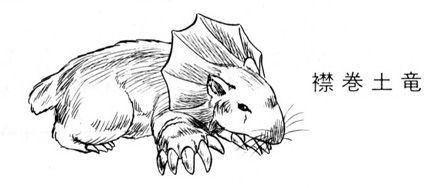

| 魔獣戦士ルナ・ヴァルガー＜３＞決戦 | |
| 秋津 透 | |
| (2014) | |
魔獣戦士ルナ・ヴァルガー
③決戦
秋津 透
本作品の全部または一部を無断で複製、転載、配信、送信したり、ホームページ上に転載することを禁止します。また、本作品の内容を無断で改変、改ざん等を行うことも禁止します。
本作品購入時にご承諾いただいた規約により、有償・無償にかかわらず本作品を第三者に譲渡することはできません。
本作品を示すサムネイルなどのイメージ画像は、再ダウンロード時に予告なく変更される場合があります。
本作品は縦書きでレイアウトされています。
また、ご覧になるリーディングシステムにより、表示の差が認められることがあります。
目 次
口絵・本文イラスト あろひろし
登場人物
ルナ・ド・リムズベル リムズベル公国の第二公女。魔獣と合体中。
魔獣ヴァルガー 伝説の大魔獣。無敵の威力を誇る。
ロ コ 有翼黒猫。ルナの使い魔。
リル（リム・リリス） プロの色事師娘。実は獣人（縞兎）。
バト・ロビス ダンバス帝国の元部隊長。ルナを宿敵と狙う。
ミル・ユード 貿易商兼帝国青年貴族。バト・ロビスの甥。
レイピア・ロナ ミル・ユードに忠誠を誓う女戦士。
ファラ・ミルドレッド アルタイオでのルナの身元引受人。死霊術師。
ギルバート・エゼン 黄金飛行竜を召喚する魔道士。どっか一本ぬけている。
リム・リオネル 獣人族の族長の娘。融通のきかない性格の巫女。
ルネ・ニグス 獣人族四天王の一人で、襟巻土竜男。つまらなそうな顔が特徴。
料理長 バト・ロビス専属の謎の料理人。
黒蛇魔獣 獣人谷に封じ込められていた魔獣。頭脳体を失っている。
第一章 魔獣戦士絶体絶命！
１
「ファラ・ミルドレッド、只今参りました」
魔道都市アルタイオの最高評議員をつとめる美貌の女性死霊術師は、そう言って軽く頭を下げた。巨大な執務机の向こうに座っている骨と皮ばかりに瘠せ細った老人が、彼女に小さくうなずきかえす。
「夜分、いきなり呼びたてて済まなかったのう。実は、明日の評議会に先立って、どうしてもおぬしと話しておかねばならぬ事ができたのじゃ。例の巨竜の件なのじゃがな」
「はい、評議長閣下」
とうとう来たか、と内心呟きながら、ファラは上司であり導師である老死霊術師の落ち窪んだ目をじっと見詰めた。
例の巨竜の件とは、今さら言うまでもない。三日前の昼頃に、いきなり『城』の中庭に出現した巨大二足直立竜の件である。さいわいけが人や建物の被害はほとんどなかったが、巨竜は『城』から出る時に魔道都市を覆う障壁を消しとばしてしまった。十数人の強力な魔道士が苦労して張った障壁を一撃でぶち破る破壊力というのは、どう考えても尋常ではない。評議会は総力をあげて巨竜について調査を行ない、対策を練っている。
そして、もしその調査で巨竜の正体が判明したら私としては非常にまずいのよね、と女魔道士は内心肩をすくめた。何しろ巨竜の正体はリムズベル公女ルナで、ファラは彼女の身元引受人になっている。しかもルナは彼女の自筆の証明書を使って『城』に入ったのだから、これがばれたら御叱言程度じゃとても済まないだろう。
「先刻、調査委員会から報告があってのう」
かすれ気味の声で、老評議長はゆっくりと話しはじめた。
「彼らの調査によれば、かの巨竜は伝説の魔獣ヴァルガーである可能性がきわめて高いというのじゃ。そして奴が魔獣であれば、必ず再びこの魔道都市に出現するであろうと予測しておる。彼らが調べた古伝説によれば、魔獣は魔道の力に強く反応するのだそうじゃ」
そう言って評議長は、軽く頭を左右に振った。
「もし、かの巨竜が再び魔道都市を襲えば、今度は障壁を破られるのみでは済むまい。何とかうまく対応せねば、怖るべき惨事にもなろう。そこでわしは評議会で非常事態を宣言し、全評議員の魔力を結集できる体制をとろうと思う。だが、そのためにはおぬしに評議長を引き受けてもらわねばならん」
「は？ 私に評議長を、ですか？」
ファラは思わず目を丸くした。やばい秘密が明るみに出るかと心配していたところへ、いきなり魔道都市の最高指導者になれと言われれば、これは彼女じゃなくても驚く。しかし老評議長はゆっくりと、だが重々しくうなずいた。
「わしももはや二百五十歳を越え、魔力は衰える一方じゃ。とても評議会を率いて魔獣と闘うことはできん。他の死霊術師たちも、おぬし以外は二人ともわしと同世代の老人じゃ。現在のような非常時には年功や序列ではなく、魔道の実力によって評議長を決めねばならん。そしてわしの見るところ、この魔道都市で最強の実力を持つ魔道士は、ファラ・ミルドレッド、おぬしに間違いない」
そう言いながら、老人は枯枝のような両腕を後頭部へと回した。かちりと小さな音がして、評議長の地位を示す銀色の額当て飾りが頭からはずれる。
「どうじゃ、ファラ。受けてくれるか」
額当て飾りを執務机の上に置き、老死霊術師は愛弟子の顔をじっと見すえた。彼女はその目を見返さないで、額当て飾りの正面に浮き彫りにされている翼の紋章を見つめている。そしてわずかな間をおいた後、彼女の視線がすっとあがった。
「......重責、慎んでお受けいたします」
「うむ。頼むぞ」
老人はゆっくりとうなずくと、恭しげに額当て飾りを持ち上げてファラの頭に戴せる。彼女は軽く前に屈み、後頭部で止め金具を合わせた。意外なほどの重みが、ずしりと頭にかかる。
「よく似合うぞ。おそらく歴代の評議長のうちでも、最高じゃろう」
「おそれいります」
そりゃあ歴代の評議長って、ほとんど老人ばかりだものね、とファラは内心苦笑した。だが表情はあくまで慎ましく、しとやかに微笑してみせる。老死霊術師は彼女の顔を見て、もう一度満足げにうなずいた。
「ファラ、いや、ミルドレッド評議長と言わねばなるまいの。歴代の評議長に伝えられてきた秘伝承は、すべてわしの背後の棚に納められておる。できるだけ早く、目を通しておいてくれ。この評議長室も、もはやおぬしの場所じゃからのう」
言いながら老人はゆっくりと立ち上がり、執務机をまわってファラの傍に歩み寄る。
「じゃが、これだけはとりあえず言っておかねばなるまい。おぬしが今かぶった額当て飾りは守護冠と通称されておるが、正しい名は対魔獣用守護冠なのじゃ。この守護冠を身につけ、評議会の力を結集した時、おぬしは人間の身で魔獣と互角に闘うことができる。そしておぬしが奴に勝つか否かで魔道都市の、いや、全世界の未来が決まるのじゃ！」
「はいっ！」
老死霊術師の口調にどーんと力が入り、ファラも真剣な表情で大きくうなずく。故郷のために敢然と魔獣に立ち向かわんとする、なかなか感動的な光景である。
が、老人はとにかく、ファラは内心ではちょっと苦笑をうかべていた。導師は御存知ない事だけど、今のところ魔獣は人間に支配されている。そして彼女が正気のうちは、魔獣が正面から魔道都市を襲うことはあるまい。
「先日の騒動の時も『城』の中で変身しちゃったのは困りものだけど、その後はとにかく被害を出さないように気をつけていたし。とりあえずは、まあ、彼女を信用しておいて大丈夫だと思うのよね」
頼むわよ、ルナ公女、とファラは声に出さずに呟いた。頼むから正気でいてちょうだい。私は魔獣と喧嘩したいなんて、全然思ってないんだから。
もちろん、ファラのこの呟きは誰の耳にも入らなかった。だが、もしもルナがこれを聞いたら、きっと応えただろう。
「そりゃ、あたしは一応正気のつもりだし、ファラさんと喧嘩する気も魔道都市を襲う気もないわよ。だけどねー......あっちの黒蛇魔獣がどーゆー気でいるか、そこまではあたしも責任持てないな。見たとこじゃ黒蛇魔獣は頭脳体つけてないみたいだし、いっくらファラさんが喧嘩したくないって言っても通じるかどーか......。もっとも、どー考えても黒蛇魔獣はファラさんより先に、魔獣戦士と喧嘩したがってるみたいだけど」
２
「とにかく、あの牙をかわさなくっちゃ......。直接に咬みつかれたら、魔獣戦士だってやばいぞ」
四方にぐわっと開かれた黒蛇魔獣の顎を油断なく見すえ、ルナ公女は低く呟いた。傍に控える烏猫のロコが、金色の目を丸くする。魔獣態をとった女主人がこんなに緊張した声を出すのを、彼は今まで聞いたことがない。
「ロコ、あんたはリルといっしょに先に逃げて。あたしは黒蛇を何とかしなくちゃ」
視線を敵に向けたまま、ルナは烏猫に静かな、しかし有無を言わさぬ調子で命じた。
「急いでね。でないと巻き添え喰うわよ」
「は、はいっ！」
烏猫は慌てて翼を広げ、女主人の傍から翔び立った。そのまま魔獣の巨体に沿って、滑べるように降下する。地上では少女が、苛立ちと怖れと好奇心を混合したような表情で待っていた。
「あにやってのよ、ルナはっ！ さっさと逃走しなきゃ、目いっぱい危いじゃないっ！」
「ルナ様は、あの化物と闘うつもりだ」
烏猫が告げると同時に、リルの鮮碧色の目がいっぱいに見開かれる。
「ご......ごじょーだんでしょ。確かに魔獣戦士はとんでもねーけど、黒蛇だって互角に凄そーじゃない。それを何でわざわざ......だいたい、あたいらはどーなのよっ！」
「僕らには、巻き添え喰う前に逃げるよう指示が出てる。急いでこの場を離れるんだ」
どのみち僕らが戦場にいても、ルナ様の足手まといになるだけだ、とロコは内心つけ加えた。と、少女が素早くうなずく。
「わあった。谷底には獣人どもがうようよしてっから、山側に出よ。なら、姿は縞兎ね」
言うが早いか少女は縞兎の姿に変身し、ぴょんぴょんぴょんと斜面の上へと跳ねあがる。烏猫も急いでその後方を追った。と、そのとたん、彼らの背後でどーんというもの凄い音と震動があがる。
「ルナ様っ！」
思わず叫んで、ロコは振りかえった。魔獣戦士と黒蛇魔獣が、ほとんど同時に空中に巨体を躍らせる。黒蛇が十字型に開いた顎の先端から、短刃のように牙が突き出される。
だが、ルナは黒蛇の動きを予測していた。襲いかかる毒牙を、魔獣戦士は余裕をもって跳び越える。そして着地しながら強力な尻尾をぶんと振り、敵の長く伸びた胴体を横なぐりになぎ払った。ばしーんっと激しい音をたてて、黒蛇魔獣は北側の崖に叩きつけられる。大小の岩ががらがらと崩れ、黒蛇の体を直撃する。
「やったあ！」
烏猫は跳びあがって歓声をあげた。しかし、黒蛇は魔獣戦士が向きなおるより早く、岩をはねとばして鎌首をもち上げる。今度は顎を十字型に開かず、三つの目で無表情に敵を凝視する。痛手を負った様子は、まったくない。
「さすがにあの程度じゃ参らないか......」
ルナ様、次はどうする気かな、と烏猫は北側に向きなおった魔獣戦士を見やった。すると、魔獣の口が大きく開き、すさまじい咆哮がその喉からほとばしる。
「破壊叫だっ！ そうかっ、それでルナ様、敵を崖に叩きつけたんだ！」
ロコはいささか興奮気味に叫んだ。獣人谷の文字通りどん詰まり、北側の崖下に黒蛇は追い込まれた状態になっている。この位置なら獣人たちを巻き添えにせずに破壊叫が使えるのだが、烏猫はそこまでは気付かない。
しかし、黒蛇も致命的な破壊波が発射されるのを、おとなしく待ってはいなかった。再び顎を開いて牙をむき出し、黒い稲妻のように魔獣戦士に襲いかかる。だが、直立巨竜は素早く体をかわして毒牙をやりすごした。同時に前肢の鉤爪で、蛇の胴中を横なぐりに張り倒す。黒い鱗が数枚ばばっと散り、黒蛇は再度岩肌に叩きつけられる。烏猫は威勢よく歓声をあげた。
「どうしたどうした、黒蛇！ 仰々しく登場した割には、ルナ様に手も足も出ないじゃないか！ 蛇だから手も足も出ませんなんて、しょーもない洒落言うつもりか？」
「しょーもないのは烏猫のほーでしょうが」
腹立しげな声にロコが振りむくと、縞兎の鮮碧色の目にまともに睨みつけられた。彼女の後肢が、いかにも神経質そうに地面をとんとんと叩いている。
「ちーとも付いてこないから仕方なしに戻ってみりゃ、こな場所で浮かれ騒いでだから。この忙がしー時に、あたいったい何考えてのさっ！ さっさと逃げろってルナが言ったの、忘れちまったかいっ!?」
「え......あ、でも、大丈夫だよ」
リルの猛烈なまくし立てにたじたじとなりながらも、烏猫はどうにか言葉をかえす。
「ルナ様優勢だし、逃げる必要ないよ。黒蛇が片付いたら、いっしょに獣人谷から脱出すればいい......」
「甘いねっ！」
断定の口調で、縞兎は烏猫の言葉をさえぎった。
「怪獣同士の闘いで、優勢だの判定勝ちだの吞気なこと言ってられるわけないでしょーがっ！ それに、魔獣戦士の勝ち負けと、あたいらが巻き添え喰うかどーかは別問題じゃないっ！ とにかくぐだぐだ言ってないで、さっさと逃げンのよっ！」
「わ、わかった......」
ルナ様の優勢がひっくりかえるとは思わないけど、と烏猫は翼を広げながら呟いた。巻き添えの危険は、確かにある。それに何よりルナ様が逃げろって命じたんだから、ここは逃げるのが正しい。
自分にそう言い聞かせながらも、ロコは宙に翔びあがる寸前に、魔獣戦士と黒蛇魔獣の方へもう一度注意を向けた。直立巨竜の咆哮は、すでに圧倒的な音量になっている。このままいけば、崖を背にした黒蛇を破壊叫が直撃するだろう。
と、その瞬間黒蛇の巨体がぱあんと空中に跳ねあがり、烏猫は翔びあがるのを忘れて息を吞んだ。魔獣戦士は咆哮をあげ続けたまま、機敏に体の位置を変える。
だが、黒蛇魔獣は敵に向かって跳んだのではなかった。顎を閉じ、牙を収めた蛇は強烈な勢いで体をひねり、まるでねじり込むように崖の中腹へ突っこんだのである。直立巨竜の咆哮のため音は聞こえないが、岩が砕けて粉々に散ってゆく。あっと言う間に黒蛇の頭部から胴中が、崖の中にもぐり込む。
「逃げる気かっ!?」
烏猫は思わず、声に出して叫んだ。そのとたん背後から、ぱこーんと蹴りつけられる。
「逃げる気か、だって？ 逃げる気に決まってだろーが、このおーぼけ猫があっ！ 自分がもたくさしてるだけじゃ足りなくて、あたいにまで文句つけよーってのかいっ！」
「違う、違うよっ！ 黒蛇の話なんだっ！ わっ、やめろっ、落ち着けったらっ！」
逆上しきって蹴りつけてくる縞兎に、ロコは頭をかばいながら慌てて叫んだ。その声が耳に入ったらしく、彼女の逆立っていた縞毛がすうっとおさまって、色調を変える。
「あっちのこと？」
「ルナ様に突っかかってた黒蛇の怪物さ。かなわないと見たらしくて、跳びあがって崖の中にもぐってっちゃったんだ」
「へえ？」
小首をかしげながら、リルは崖の方へ視線を向けた。確かに巨大な黒蛇の姿はなく、崖の中腹に丸い穴が穿いている。そして、残った魔獣戦士は、まだ咆哮をあげ続けている。
「あにやっての、ルナのやつ。もう黒蛇は逃げちゃったっつーのにさ。まさか例の蛮人戦士みたいに、逃げるとは卑怯なりーとか喚いてのかね？」
崖に向かって吠えたてる直立巨竜を見やって、縞兎は半ばあきれたよーな声を出した。すると、烏猫が意外そうに彼女の顔を見る。
「何言ってんだ。あれは魔獣必殺の破壊叫じゃないか」
「破壊叫？」
リルがきょとんとした調子で訊ねかえす。
「あによ、それ？」
「見たことなかったっけ？ じゃあ、見てればいいよ。説明するよりその方が早いや」
ロコがそう言うのとほとんど同時に、谷じゅうに轟いていた魔獣戦士の咆哮がフッと消えた。そして次の瞬間、黒蛇が逃げていった方向の崖面にぼこり、と巨大な窪みが生じる。と、見る間に窪みは岩山の奥へ、まるで透明な大蛇のように伸びていった。後には、きれいな円筒型に掘り抜かれた洞穴が残る。黒蛇がもぐっていった穴など、問題にもならない。魔獣戦士が悠々と入って行けるような、巨大な洞穴だ。
「す...凄お......」
縞兎がひきつり気味に呟く。ま、普通は魂消るよな、と烏猫は内心くすっと笑った。
「とんでもねーとは思ってたけど、ここまで桁外れの攻撃技があるとはねー......だけどルナったら、崖に穴あけてどーする気なのかしら？」
「追い討ちじゃないのかな。黒蛇か岩にもぐって一安心してるところへ破壊叫を叩きこめば、命中でなくても牽制ぐらいにはなる......あれ？」
ロコの金色の目が、まん丸く見開かれる。破壊叫の放射を終え、ばくんと口を閉じた魔獣が、いきなりぴょーんと跳躍したのだ。巨大二足直立竜は軽々と崖の中腹へと跳びあがり、自分で掘った洞穴の内側に着地する。そのまま一回尻尾を振って、魔獣戦士は洞穴の奥へと進んでゆく。たちまちその巨体が、烏猫と縞兎の視界から消えた。
「行っちゃった......」
ぼーぜんとした口調で、リルが呟く。ロコも予想外の女主人の行動に、完全にあっけにとられていた。
「......たかが巨大黒蛇じゃないですか。どうしてそこまで本気になっちゃうんです？」
そういや戦闘が始まる前も、ルナ様、ひどく緊張した表情してたよな、と彼は内心呟いた。黒蛇、それほどの強敵なのか？ それとも僕らの知らない秘密が、何かあるのか？
考えてるうちにどんどん状況がわかんなくなり、烏猫は頭抱えて唸りだした。と、その頭を縞兎がぱしっと叩く。
「ちょっとっ！ 太平楽に頭抱えてる場合じゃないよっ！ 怪物が退場したら、後は獣人どもの天下なだからっ！」
「そ、そうだった」
黒蛇騒ぎでつい忘れていたが、ここは獣人谷、変身獣人たちの本拠地だ。もたもたしてたら、とっつかまって蛇神様の生賛にされてしまう。烏猫は急いで翼に力を入れ、地面を蹴って宙に舞いあがった。同時に縞兎も、急斜面を巧みにぴょんこぴょんこと跳ねあがる。
「どうやら、追手はかかってないな」
空中で後方を見やって、ロコは確認するように呟いた。はっきりとは見えないが、谷はまだ大混乱状態らしい。巨大怪獣が二匹も出現すりゃ、当然だろう。
「大丈夫、こっちはとにかく逃げられる。あとはルナ様だけど......僕らが心配したって、どうにもならないんだよなあ、あの方は......」
半ば溜息まじりに呟くと、烏猫は夜の闇の中へと身をひるがえした。
３
「こ、これ、さすがに危いんじゃないかな」
ギルバートがひきつりまくった声で囁いたが、女戦士は返事するどころではなかった。数十人、いや百人以上の獣人がじりじりと二人に詰め寄って来ている。獣化している者も人間態の者もいるが、全員目いっぱい殺気立っているのは共通だ。
「貴様らのせいだ......」
誰かが呻くような声をあげる。
「神聖な祭儀に人間なんぞを入れたから、蛇神様がお怒りになったんだ......」
「いや、あの、その、そーゆーわけじゃ......うぐっ！」
ひきつった声で弁解しかかった魔道士の横っ腹を、レイピアの肘が力いっぱいどついた。こーゆー事態にあじゃこじゃ言ったって、聴いてもらえるわけがない。かえって、怒りの暴発を呼ぶのがおちだ。ましてこの魔道士が不用意に余計なことしゃべくろーもんなら、助かるものまで助からなくなる。
「いてててっ......な、何だい、いきなり......」
「いいからあんたは黙ってなさいっ」
恨めしげにぼやく魔道士に、女戦士は小声で、しかし語気鋭く言い放った。
「それより、まだ魔力は回復しないのっ？」
「回復してたら、すぐにでも発動させてるさ」
さすがに撫然とした表情で、ギルバートは首をすくめる。
「自分の魔力だ。回復すればわかる」
「あ、そう」
ったく、魔道士も魔力なければ普通人とはよく言ったもんね、と彼女は内心呟いた。もっともこいつの場合、普通人っつーより無能者だけど。
二人がこちゃこちゃ言ってる間に、険悪な表情の獣人たちはじりじりと包囲の輪を詰めてくる。後退しようにも背後は崖だ。レイピアは正面の獣人を、ぎっとばかりに睨みすえた。その男は鼻白鼬に獣化していたが、彼女の眼光を受けかね、たじっと半歩さがる。だが、とても戦意喪失して逃げだすまでにはならない。
「......せめて叔父君が、一緒にいてくれればなあ......」
言っても仕方ないのはわかっているが、彼女は思わず小声で呟いた。
ルナ公女が変身する直立巨竜、自称魔獣ヴァルガーが出現すると同時に、バト・ロビスは猛然と席からとび出した。そして、とーてー止めようのない勢いで、谷の最奥へと突進して行ってしまったのである。レイピアも一瞬はその後を追いかかったのだが、そのとたん魔道士が卒倒して、続いて巨大黒蛇が登場したため、とても無謀戦士につきあってられる状況ではなくなってしまった。
しかも黒蛇が毒液を吐き散らしたため、祭壇の近くにいた獣人たちは、ほとんど石像と化してしまっている。おそらく叔父君も無謀な突進が災いして毒液をかぶったに違いない、とレイピアは判断していた。いくらバト・ロビスが頑強だって、毒が効かないわけじゃない。たちまち石像にされてしまっただろう。宿敵を目の前にして不本意の極みでしょうねとは思うが、現在のレイピアには他人の無念に同情しているほどの余裕はない。
鼬男が、じりっと一歩前に出た。右手に太い棍棒を持っている。こいつ一人なら雑作なくあしらえるけど、と女戦士は呟いた。鼬男が跳びかかって来れば、他の獣人も続いて襲ってくるだろう。そうなったら多勢に無勢、確実に私たちは八つ裂きにされる。
「お、おい、レイピア、どうする気だよ。逃げ場もないし、このままじゃ......」
傍の魔道士が、再び目いっぱい情ない声を出す。じゃあかまし、元はと言えばこの窮地もあんたのせいでしょうが、と怒鳴りつけたくなるのを、彼女は必死になっておさえた。
だいたい、奴の言うことを真に受ければ、あの巨大黒蛇は魔道士の召喚に応じて出現したことになる。何でも、自称魔獣の直立巨竜が姿を現わしたので即に黄金飛行竜を召喚する呪文を唱えたところ、呪文を唱え終える寸前にもの凄い衝撃が彼の精神を一撃したというのだ。
その衝撃で彼はあっさり気絶してしまい、意識が戻った時には完全に魔力を使いきった状態になっていた。そして、彼が目を回すのとほとんど同時に巨大黒蛇が崖をぶち破って出てきたわけだから、これはどー見ても、魔道士があの怪物を召喚してしまったという事になる。
「......まあ、今さら誰の責任とか言っても始まらないけどね」
女戦士は溜息まじりに呟いた。二匹の巨獣が姿を消すが早いか、彼女は失神から醒めたばかりの魔道士もろとも、憤激しきった獣人たちに包囲されてしまった。神と崇める巨蛇に突然ひでー目にあわされたんだから、獣人が怒るのも無理はないし、その怒りを人間に叩きつけようと思うのもわかる。わかるけれども、やっぱりこんな場所で八つ裂きにされたくはない。
「くあっ！」
鼬男が奇声をあげて、鋭い牙をむいた。レイピアは腰を沈め、滅多に抜かない細身の剣の柄に手をかける。近距離の乱戦では、得意の細鞭はあまり役に立たない。たとえ助かる望みがなくても、戦うからには最善を尽くすのが彼女の性格だ。
「来るなら来なさいな......南方女戦士の戦いっぷり、獣人たちにとくと見せてやるから......」
「お、おい、おい、レイピアッ！」
魔道士が蒼白になって叫んだが、もはや彼女の耳には入っていない。だが、その叫びにつられたように、鼬男が棍棒を振りあげて突っこんでくる。女戦士の琥珀色の瞳がぎらりと光り、細剣が稲妻のように鞘走る。
と、その瞬間、レイピアの足元の地面が、いきなりぼこりと崩れてなくなった。あっと言う間もなく、彼女は突進してきた鼬男もろとも、かなりの深さの縦穴に墜落する。
しかし、そこは女戦士、きれいに足から着地すると油断なく細剣をかまえた。穴の底はまっ暗で一寸先も見えないが、彼女には何者かの気配が感じられる。同時に落ちた鼬男だろうか、と彼女は呼吸を詰め、気配を探る。
するとその時、どすんっという大きな落下音と、ぼこっという鈍い音が同時にレイピアの耳に入った。続いて、闇の中に聞き慣れたぼやき声が響く。
「いててて......どーなってるんだ、これは？」
「大きな声出すんじゃないのっ」
囁くような小声で、女戦士は魔道士を叱りつけた。
「どこに何がいるか、わかったもんじゃないでしょうがっ」
「大丈夫ですよ。レイピアさん」
不意に背後からのんびりとした声がかかり、彼女は慌てて振りかえった。が、もちろん何も見えはしない。
「あなたと一緒に落ちてきちゃった鼬男には、ちょっと失神してもらいましたから。地下洞にいるのは、僕と土竜男だけです」
「ああ、砂鰐男さんね。......ありがとう、助かったわ」
レイピアは闇の中で、ふうっと安堵の吐息をついた。そしてゆっくり、細剣を鞘の中へ戻す。と、そこへぶっきら棒な声がした。
「縦穴は岩で塞いどけばいいだろう。ま、追ってくるほど酔狂な奴がいるとは思えんが、一応念のためだ」
「うん。よろしく頼むよ」
砂鰐男の口調は、相変わらずのんびりと穏やかだ。だけど、とレイピアは内心首をかしげる。彼も土竜男も歴とした獣人の一員、今夜の事件で衝撃を受けていないはずはない。それがどうして、わざわざ人間の私たちを助けてくれたんだろう。獣人たちに知れたら、とても無事では済まないだろうに。
「いやあ、それにしても間に合ってよかったなあ」
考えこむ女戦士の耳に、砂鰐男の声が屈託なさそーに響いた。
「もうちょっとでも遅かったら、鼬男の奴、間違いなくレイピアさんに斬られちゃってたでしょうからね。いやー、余計な犠牲者が出なくて、本当によかったよかった」
「そこまで嬉しがる状況じゃないとは思うがね。ま、不幸中の幸いぐらいのところか」
土竜男が皮肉っぽい調子で応じる。
「蛇神様のお怒りとやらだけでも、いい加減災難なんだ。これ以上斬りあいなんぞされたら、後で人手が足りなくなって困るからな。石像にされた連中も、あのまま置いとくわけにはいかないし、まったく面倒な事態になったもんだよ」
「しかし、毒液を浴びせるだけで、瞬間的に生体を石化するとはな。あの巨大黒蛇、只者ではないというのが私の判断だな」
魔道士が、例によってえらそーな口調でほざく。この無神経がっ、とレイピアは内心舌打ちしたが、闇の中では制止のかけようがない。
「そりゃあ只者じゃないでしょうね。何しろ蛇神様ですから」
フィロスがのんびりと相槌を打つ。その後にニグスの呟きが続く。
「ま、神か悪魔か知らないが、只者でないことだけは確かだな。俺には、奴は理性のない単に強力な怪物としか思えんがね。少なくとも獣人の守護神じゃない」
「お、おい。ニグス」
さすがに砂鰐男が狼狽した声を出した。だが、土竜男の憤懣に満ちた呟きは止まらない。
「もし奴が、神だろうが悪魔だろうが、とにかく理性のある存在なら、毒液なんぞ吐き散らす前に、とにかく何か意志を示しやがれってえんだ。怒ってんなら怒ってるで、何がどう腹が立つんだかわからないんじゃ、謝罪のしようもないじゃないか。おまけに奴に毒液をぶっかけられたのは、蛇神様への御奉仕だけが売りものの祭司の連中がほとんどだからな。人間の皆さんも、俺みたいな不信心者もみんな無事なのに、信仰厚い祭司が石にされちまってるんじゃ、蛇神様とやらがいったい何にお怒りなのか、わかったもんじゃない」
「......人間がみんな無事って言ったわね？」
土竜男が一息ついたところで、レイピアが素早く口をはさんだ。
「叔父君は石にされちゃったんじゃないの？」
「まさか。あの大将がそう簡単にやられるはずがありませんよ」
砂鰐男が、笑いをまじえた声で答える。
「いつもの調子で、とても威勢よく洞穴の中に突っこんで行かれましたよ。ま、洞穴の中は迷路みたいなものだから、目指す怪物に追いつけるかどうかわからないけど、とにかく元気なことは間違いないでしょうね」
「だけど、やっこさん、毒液浴びたんじゃないのか？」
魔道士が不思議そうな声を出した。
「いくらあのおっさんが非常識と言ったって、毒液をくらって平気じゃいられまい？」
「でも、平気でしたよ」
あっさりと、しかしきっぱりと、砂鰐男は断言した。理由はわからないが、とにかく無謀戦士は無事でいるらしい。何にせよこれは朗報だわ、と女戦士は闇の中で小さく笑った。
と、その時、突然すさまじい轟音が地下洞いっぱいに響きわたった。同時にレイピアの正面から、青白い輝きがかあっと差しこむ。
「な、何っ？」
反射的に腕で目をかばいながら、彼女は思わず叫んだ。
「わからん。奥の方で何か......うわっ！ 危いっ！」
土竜男が切迫した声を出す。轟音に続いて地下洞全体が、ごごうっと激しく震えはじめる。土塊が四人の周囲に、ばらばらと落ちてくる。
「この付近は崩れる！ 奥へ入るんだ！」
叫ぶが早いか、土竜男は光の差してくる方向へ、だっとばかりに走りだした。レイピアたちも、慌てて彼の後を追う。その背後ではかなり大きな岩塊が、どかどかと天井から落ちはじめていた。
４
「くそっ、あん畜生、いったいどこへ行っちゃったんだろっ！」
およそ公女らしからぬ呟きを洩らし、ルナは苛立たしげに唇を嚙んだ。黒蛇魔獣を追って崖に穴を穿け、岩山の内部にもぐり込んだまではよかったが、この洞穴迷宮には異様な瘴気がたちこめていて、魔獣感覚がまるで効かないのである。闇を見透すぐらいなら何とかなるが、黒蛇の逃げてった痕跡が全然わからない。
「マズイナ。洞穴迷宮ハ奴ノ本拠地ダ。下手ヲスルト、コチラガ奇襲サレルゾ」
肉体の声の調子も、明らかに苦い。
「ダガ、時間ヲ与エレバ、奴ハ闘イ方ヲ思イダス。手強クナル一方ダカラナ。今ノウチニ叩イテオカナイト、大脅威ニナル」
「わかってるわよ、それは」
だからこそ危険もかえりみないで、洞穴迷宮まで深追いしてるんじゃないの、と彼女は舌打ちまじりに呟いた。だけど黒蛇魔獣の居場所もわからないんじゃ、叩こうにも叩きようがない。この洞穴迷宮はけっこう広大なようだから、闇雲にうろうろしたところで、それこそ奇襲にあうのがおちだ。
「何かうまい作戦は、ないかしらね」
「ソウ言ワレテモナア......ソウダ、遠観力ヲ使ッテミタラドウダ」
「あ、そうね」
いい機会だ、とルナは目を閉じて黒蛇の姿を念じた。一回でも直接に見たことのある相手なら、魔獣遠観力でその状況を感知することができる。実際に使ってみるのは、最初の能力だが......。
「あっ、み、見えるっ！」
彼女は、思わず目を閉じたまま叫んだ。黒蛇魔獣は、青白く輝く障壁のようなものの前でうねうねとのたくっている。と、その顎がくわっと四方向に開いた。どうやら、観られているのを感じとったらしい、とルナが思ったとたん遠観は消えた。
「ととっ......これでおしまい？」
「アア。注意シテオクガ、コレデシバラクノ間、黒蛇ニ再度遠観力ヲ使ウコトハデキナイゾ」
「ああ、そう」
何だかあんまり役に立つ能力じゃないわね、と思いながらルナは目を開いた。黒蛇がいたのは洞穴迷宮のどこからしいけど、光る障壁以外に目標になるものは観えなかったし、その障壁にしたってどこにあるのやら......。
「行クゾ、頭脳体。遠観力ガカカッタ方向ハ西北西、距離ハ近イ。直行デキル洞穴ハナイガ、破壊叫ヲ使オウカ？」
「えっ!?」
いきなり肉体が当然のよーな調子で言ってきたので、彼女は驚いて訊ねかえした。
「肉体、わかるの!? その黒蛇のいる方向とか、距離とか!?」
「当タリ前ダロ。自分ノ感覚ヲ飛バシタンダカラナ。行ク先グライ、把握デキルサ」
肉体は割と淡々とした調子で答える。どうして当たり前なのかは良くわからないが、とにかく黒蛇の居場所は感知できたらしい。こりゃ目いっぱい有効な能力じゃない、とルナは喜ぶというよりは、多少あぜんとして首をすくめた。だが、今は自分の能力にあきれている場合じゃない。
「......よし、行こう。でも破壊叫はやめときましょう。黒蛇が警戒して逃げ出しちゃったら、それこそ厄介だわ」
迷宮の中で追跡行になったら、地の利はどー考えても黒蛇にある、と彼女は表情をひき締めながら思った。だからとにかく、遭遇と同時に敵をぶっ叩き、ちょろちょろ動けない状態にするしかない。
「とは言うものの、相手も魔獣だもんねー。ちょっとやそっとの攻撃じゃ、損傷にもならないのよね――」
破壊叫もうちょっと素早くぶっ放せればなあ、と彼女は軽く眉を寄せて呟いた。すでに肉体の方は、洞穴の中を足早に、しかし割と静かに移動しはじめている。
「うーん、とにかく跳びかかって押さえ込んじゃうのも、一つの作戦ではあるわよね......でも、接近戦になって毒牙使われたら、危いのはこっちだし......何とか首っ玉ひっとらえて......そーなると胴体がからみついてくるわね......うーん、まいったなあ......」
あかん、これは作戦が立たん、とルナは渋い表情で額を押さえた。猛将と呼ばれてはいるものの、実は彼女はかなりきっちり作戦を立ててから戦闘に臨む性格なのである。しかし今回は、作戦を立てようにも絶対的に情報が不足している。
「......黒蛇の能力もわかんない、戦場の状況もわかんない、おまけに魔獣の実力も正確にはわかってないんだもんねー......これはいやでも、出たとこ勝負しかないわね」
まあ、いざとなれば魔獣の神秘力で何とかなるでしょう、とルナはかなり強引に自分に言いきかせることにした。どうせ戦わなくちゃならない以上、不安がっていても仕方がない。
「敵も魔獣だけど、それはこの際、無視......と、あら？」
洞穴の前方から不意に青白い光が差し、ルナは魔獣の前進を止めた。見ると、正面に障壁のような光の壁が広がり、洞穴はその壁に添って左右に伸びている。
「遠観に出てきた障壁だわ。敵は近いわね」
「早々ト逃ゲ出シテイナケレバナ」
肉体が素っ気ない調子で応じ、ルナは思わず眉を寄せた。確かに黒蛇はこちらの遠観力に反応していたから、その後位置を変えている可能性はかなり高い。とは言っても、もう一度遠観力を使うことはできないらしいのだから、とにかく付近を探ってみる以外、どーしよーもないじゃない、と彼女は多少腹立たしげに呟いた。
「とにかく油断は禁物よ」
当然すぎてあんまり意味のない指示を、それでもルナはきっぱりと言い放った。どうも破壊叫で先制するのを止めてから、肉体、少し頭脳体に反抗的になってるような気がする。
「光の壁に添って進みましょう。黒蛇が位置を変えてなければ、間違いなく遭遇できるわ」
「ワカッタ」
魔獣は素直に前進し、光の壁の前で方向を変えた。洞穴は狭く、曲がったはずみに魔獣の尻尾が光の壁に触れる。
その瞬間、光の壁は凄まじい反応を起こした。雷鳴のような鋭い音とともに、無数の閃光が壁面から放たれ、魔獣の巨体を直撃する。魔獣戦士の全身に、引き裂かれるような衝撃が、ずばばばばっと馳けめぐった。
「ギャアッ！」
「きゃあっ！」
肉体と頭脳体が同時に悲鳴をあげ、魔獣戦士は文字通り、ぶっ跳んで光の壁から身を離す。すると壁面が、目も眩まんばかりにかあっと輝きはじめる。続いてルナの頭の中に、老人のしわがれた笑い声が聞こえてきた。
「ほっほっほっほっほっ、残念じゃったのう。地下結界はとうの昔に封鎖されておるのじゃ。御苦労な話じゃが、キュロスに至る道はこのザシャムの許可なくては、たとえ神や悪魔といえど押し通ることまかりならぬ。あきらめて、去るがよい。運が良ければ、外界で出会えよう。それでは、さらばじゃ」
「あっ！ ま、まま、待ってーっ！」
ルナは慌てて叫んだ。この声の主こそが彼女の旅の最終目的、伝説の大魔道士ザシャムに違いない。
「待ってっ！ お願いっ、話を聞いてっ！」
「ワーッ、 コラッ、ヤメローッ！」
肉体がひきつりまくって絶叫するのもかまわず、ルナは勢いよく体を起こして、輝きの薄れてきた光の壁に突進した。たちまちばりばりばりっと閃光が走り、魔獣戦士は激しい衝撃とともにはじき飛ばされる。と、再び壁面がまばゆく輝き、大魔道士の声が聞こえてきた。
「ほっほっほっほっほっ、残念じゃったのう。地下結界はとうの昔に封鎖されておるのじゃ。御苦労な話じゃが......」
「ザシャム様、聴いて下さいっ！ お願いがあるんですっ！」
「頭脳体、無駄ダ」
声を張りあげるルナに、肉体が沈んだ調子で呼びかけてくる。
「コレハ只ノ声ダ。本人ガ居ルワケジャナイ」
「......そうみたいね」
ルナは苦笑まじりに呟いた。彼女がいくら叫んでも老人の声はまったく反応せず、同じ言葉をくり返して消えてゆく。これじゃ確かに、らちがあかない。
「......だけど目の前に聖山への通路があるってのに、すごすご引きかえすのも癪ね......そうだ、この障壁、破壊叫で破れないかしら？」
「ウーム......魔道都市ノ障壁ナンゾトハ、桁ガ違ウヨウナ気モスルガ......マア、ヤッテミルカ」
呟くと魔獣は尻尾で背後の岩を崩し、足場を確保して光の壁に向かった。たちまちその喉から、おなじみの咆哮が轟きわたる。反響で洞穴のあちこちが崩れだすが、魔獣にとっては何の支障にもならない。
「ヨーシ、最強度デイクゾオッ！」
延々と咆哮を続けたあげく、肉体は宣言するような調子で叫んだ。
「クラエッ！」
一瞬、洞穴の中を不思議な静寂が支配する。だが即座に、最強度の破壊叫を叩きつけられた光の壁が反応を起こした。途方もない破壊力を受けながら、光の壁は破れも崩れもせず、それどころか受けた攻撃に見合うだけの、凄まじい反撃を放ったのである。たちまち洞穴の中は、強烈な閃光の大嵐と化した。
「アギャギャギャギャギャ――ッ！」
前二回とは比較にならないほどの猛撃に、肉体が身も世もない悲鳴をあげる。頭脳体に至っては完全に硬直してしまって、悲鳴も出せない。よくもまー、心臓が停まらなかったものである。
幸い閃光の嵐は一瞬で消え、頭脳体と肉体は同時に大きく溜息をついた。例によって大魔道士の声が、ほっほっほっと聞こえてくるが、とてもまともに聴いてる余裕はない。
「モウ止メヨウ......コレジャ身ガ保タン」
「そうね......強行突破は無理みたいね」
どうやらザシャムの警告が正しいらしい、とルナは吐息まじりに頭を振った。魔獣の力をもってしても、聖山キュロスに入ってゆくことは不可能ということだ。
「......でも、だけど、それじゃ、あたし、何のためにこんな北方まで来たのよ......」
その場にへたり込みそうな気分で、彼女は力無く呟いた。と、その時、肉体が鋭い叫びをあげる。
「背後ッ！」
「えっ!?」
あっと思った時にはもう遅い。岩壁をぶち破った黒蛇魔獣が、顎をぐわっと四方に開き、避けようのない勢いで魔獣戦士の背後から躍りかかってきた。
５
「あ、あかんっ！」
思わず振りかえったルナの視界いっぱいに、黒蛇魔獣の十字に開いた顎と舌、そして怖るべき毒を仕込んだ鋭い牙が映った。常態ならともかく、閃光の嵐をくらった直後の、痺れきった体ではかわしようがない。だめだ、殺られる、と彼女は戦慄とともに確信した。
と、その瞬間、視界がぐわっと回転する。肉体が、勢いよく上体を前に倒したらしい。だが、黒蛇は巧みに体をひねり、逆落としにのしかかるように襲いかかる。その頭部を下から撥ねあげようと、巨竜の尻尾がぶんと唸りをあげる。どうやら肉体、頭脳体よりはるかに諦めが悪いらしい。ばしーんっと激しい音がして、黒蛇の喉元を尻尾がひっぱたく。
「やったっ......うわっ！」
尻尾の一撃で敵の頭部が大きくのけぞり、一瞬ルナは助かったかと思った。しかし、黒蛇魔獣は大きく体をうねらせて頭を振り戻すと、すかさず魔獣戦士の尻尾にがぶりと牙をたてる。そのとたん、おっそろしく冷たい衝撃がルナの背筋をざざざっと走った。
「こ...凍るっ！」
これに比べりゃ閃光の嵐の方がまだましだわっ、と彼女は思わず、あんまり意味のない比較をしてしまった。見ると、黒蛇に嚙みつかれた尻尾は、すでに石化がはじまっている。振り払おうにも、もはや動かすこともできない。このままでは全身石像にされて、一巻の終わりになってしまう。
と、その時、思わず跳びあがってしまうような激痛が走り、直立巨竜の尻尾がぶちっと自切した。同時に、尻尾にかぶりついている黒蛇を尻目に、必死の勢いで逃走にかかる。全身ズタボロに損傷を受けている上、尻尾がないので平衡がとれず、走りにくいことおびただしいが、ここは生命あっての物種、何だかんだ言ってる場合じゃない。
黒蛇魔獣はごくわずかの間、自分がくわえた尻尾と、尻尾切って逃げてく魔獣戦士を見比べていたが、すぐに尻尾をくわえたまま追撃にかかった。石化した尻尾が洞穴の岩壁にぶつかって、ぼきりと折れる。光の壁に突っこまないかなとルナは期待したが、光の壁の怖さは知っているらしく、黒蛇は岩肌の方へ体を寄せてシュルシュルシュルと進んでくる。むしろ魔獣戦士の方が、よろけて光の壁に突っ込みかかるので、ルナは最初の曲がり角で肉体を光の壁と反対方向へ進ませた。
ところがこの洞穴が、進むにつれてどんどん狭くなってくる。常態なら岩を突き崩すぐらい苦にもならない魔獣戦士だが、今は何しろ満身創痍、しかも黒蛇魔獣はすぐ背後から迫ってくるのだ。切れた尻尾をくわえたままなので牙をたてられる心配だけはないが、とにかく、とても逃げきれそうにない。
「それなら、敵の牙が使えない今のうちが機会かも知れない......」
少なくとも尻尾のない背後から襲われるより、正面を向いて闘う方がましだろう、とルナは判断した。
「肉体、反転して。正面で闘うわ。破壊叫は使えない？」
「チョット無理ダナ」
肉体の返事は予想通りだったが、口調は思ったよりはるかに平然としている。よおし、これは勝てるかも知れないぞ、とルナは内心力を入れて呟いた。魔獣戦士にだって、牙もあれば鉤爪もある。黒蛇が毒牙を使えない状態なら、互角以上に闘えるはずだ。
だが、魔獣戦士が後方に向きなおるが早いか、黒蛇魔獣はばきばきばきっと破壊音を立て、くわえていた尻尾を嚙み砕く。再び毒牙をむき出して黒蛇の顎が十字に開かれるのを見やり、ルナは思わず叫んでしまった。
「あーっ！ ずるーいっ！ いんちきーっ！」
「ソンナ事言ッテル場合カヨ」
肉体が、あきれたような声を出す。
「ソラッ！ 来ルゾッ！」
その瞬間、黒蛇の長い体がぱあんと跳ねた。洞穴の天井すれすれに身を躍らせ、牙をかざして勢いよく突っこむ。避けようにも、洞穴の幅にはほとんど余裕がない。だが、ルナには最初っから避ける予定はなかった。
「だああっ！」
「グオオッ！」
頭脳体と肉体の両方から、同時に激しい気合声がかかる。突っこんでくる黒蛇に向かって、魔獣戦士は正面から跳んだ。紙一重の間合で毒牙をやりすごし、敵の喉元に左の鉤爪をがきりと喰い込ませる。喉を押さえられては、さしもの黒蛇魔獣も開いた顎を反転させることができない。二体の魔獣は、そのままもつれあうように着地した。
「この爪は、放さないぞっ！」
のたうつ巨大黒蛇を、魔獣戦士は渾身の力で押さえつける。この左手を放してしまったら最後、黒蛇の頭部が素早く反転して、魔獣戦士を一嚙みで倒すだろう。このまま黒蛇の息の根を止める以外、勝機はない。
だが、黒蛇も大人しく息の根を止められているよーな代物では全くない。のたうっていた胴体がシュルシュルッと音を立てて一回伸び、吸血蔓のように魔獣戦士にからみついてくる。尻尾があれば叩きつけてはじき返すところだが、右腕だけではとうてい防御しきれない。たちまち直立巨竜の胴中に黒蛇の長い体が巻きついて、ぎりぎりと凄い力で絞めあげる。文字通りの大蛇絞めだ。
「何のっ......絞め合戦なら負けるもんかっ......」
いっくら黒蛇の胴絞めが強力でも、この魔獣戦士を絞め倒すのは容易じゃなかろう。それに比べて、巨竜は敵の喉元に鉤爪を喰い込ませている。首の骨を折れないまでも、喉笛を引きちぎることができれば、黒蛇魔獣といえども闘いを続けるわけにはいくまい。必死必殺の気合をこめて、ルナは魔獣の左手に力を集中させる。
ところがその時、彼女の表情が目いっぱい引きつった。渾身の力をこめているはずの魔獣戦士の左手が、じりじりじりと押されはじめたではないか。このままでは黒蛇の毒牙が巨竜の左肩に届いてしまう。
「ど、どーしたのよ、ヴァルガーッ！」
「......失敗ッタ、黒蛇ノ毒ハ牙ダケニ有ルワケジャナカッタ......鱗ニモ、ソレホド強力ジャナイガ、毒ガ仕込マレテル......クソッ、常態ナラソンナ毒、効クヨウナ俺ジャナイノニ......」
肉体の呻くような声に、ルナの顔からさーっと血の気がひく。黒蛇魔獣の絞め技は、同時に鱗の毒を注入するという、二重の攻撃力を持っていたのである。しかし今は、驚愕している場合じゃない。彼女は必死で声を張りあげ、肉体に呼びかけた。
「ヴァルガーッ！ ヴァルガーッ！ お願いよっ、しっかりしてっ！ 何とかしなくちゃあたしたち、このままそろって石像にされちゃうわっ！」
「ダガコレハ......何トモナラン......」
肉体が、絶望的な呻きをあげた。
「ダメダ......全機能が、急速ニ低下シテイル......スマン、頭脳体......主機能停止ダ......」
「ヴァルガーッ！」
ルナは喉も裂けんばかりに絶叫した。同時に、黒蛇魔獣がぶんと頭を振り、動かなくなった巨竜の鉤爪を喉元から外す。その毒牙を避ける手段は、もはや何ひとつないと見えたが...
「あっ！ そうだっ！」
その瞬間、ルナは自分にできる事が一つだけ残っていたのに気がついた。急いで首から下げたペンダントを開き、ただ一錠残った掛け戻し錠を大慌てで吞みこむ。彼女が人間態に変身するのとほとんど同時に、黒蛇の顎が相手を失ってがきんと宙を嚙んだ。魔獣戦士を目いっぱいの力で絞めあげていた胴体も、勢いあまって空中で妙な具合にねじくれ、きりきり舞いしながらどすーんと地面に墜落する。
「ふうっ......助かったあ......」
思わずぺたりと両膝をつき、ルナはほーっと吐息をついた。しかしもちろん、いつまでも気楽にへたり込んでいられるよーな状況ではない。急いで逃げなくちゃ、と彼女は勢いよく立ちあがりかかった。だがそのとたん、彼女の腰から脚にかけて、凄まじいばかりの脱力感が襲いかかる。
「あららららっ!?」
立ちあがりそこねて、ルナは地面に両手をついた。下半身がまるで石のように重く、上半身にもろくに力が入らない。おまけに、くらくらくらっと視界が回りはじめる。
「じょ、じょーだんじゃ、ないわよー」
本人は叫んだつもりだったが、舌がきちんと動いてくれず、まるで酔言を巻いてるよーな口調になってしまう。毒のせいだ、と彼女は内心頭を抱えた。現在、彼女の体の中には、毒をくらって完全に昏倒した魔獣が押し込められている。その影響で、人間の体も目いっぱい不調になってしまったらしい。
と、背後からシュルシュルシュルシュルと何ともいえず不快な音が聞こえてくる。振りかえらなくても、あの音はわかる、とルナは苦い感情に恐怖をまじえて呟いた。黒蛇魔獣がトグロを解いて、動き出したに決まってる。
「あ......あかーん......逃ぃげなーいとー......」
まともに動かない体を無理矢理ひきずるようにして、ルナは洞穴の中をふらふらと進みだした。本人は必死の思いなのだが、足どりが泥酔者そっくりで、おまけに変身してそのままのためペンダントひとつ着けただけの素っ裸だ。どー見ても、正常な状態とは思えない。そしてその背後から、黒蛇魔獣がぬーっと鎌首をもちあげる。
６
「ふむ......震動はおさまったようだな」
呟いて、バト・ロビスは洞穴の天井を見上げた。今のところ、岩や土塊の崩れてくる気配はなさそうではある。
「よし、今のうちに前進だ」
まったく小娘の奴め、ややこしい場所にもぐり込みおって、と無謀戦士は腹立たしげに顔をしかめた。追撃に手間がかかって仕方がないではないか。まあ、奴もあの化蛇を追ってこの迷宮に入っていったのだから、元凶は化蛇めということになるが。
「まったく、実に辛気臭い洞穴だな。化蛇めが好みそうな場所だわい」
ぶつぶつ文句をたれながら、巨漢は青白い光に満ちた洞穴をのしのしのしと足早に進んでゆく。あちらこちらに土砂や岩片の崩れた場所があり、巨漢の顔はますます渋くなる。
「小娘はもちろんだが、あの化蛇めも許せんな。俺に薄汚い毒液なぞひっかけおって。料理長がおらんかったら、もろに浴びてしまうところだったぞ。化蛇め、このまま済ませるわけにはいかんな」
巨大怪獣どもめ、二匹まとめて斧剣の錆にしてくれるなどととんでもねーセリフを呟きながら、無謀戦士は洞穴を道なりに曲がった。するといきなり、ほとんど鼻先と言っていい位置にルナがふらあっと現われる。当然、巨漢の目がぐわっと開かれる。
「出おったなあっ、小娘っ！」
「あ...中年かあ......」
ルナは、とろんとした目で宿敵を見上げた。毒のため、すでに視界がぼやけ、意識も朦朧としている。そのまま彼女は、ふらふらあっと巨漢にもたれかかった。
「な、何の真似だっ!?」
さすがにいささか狼狽して、バト・ロビスが喚く。彼とて、小娘と遭遇した時の対応をいくつか考えてはいたが、まさかこーゆー状況になるとは思ってもいなかった。全裸のルナがとろろんとした目をして、巨漢の胸にしなだれかかってくるなんつー事態を、予想している方がどーかしている。
「小娘っ、貴様、何の思惑だっ！ まさか、俺を誘惑しようっていうんじゃあるまいなっ!?」
「あたし......もーだめ......」
バト・ロビスの喚き声もまるで聞こえた様子もなく、ルナはとろんとした、妙に艶っぽい口調で呟いた。
「......後は、よろしくねー......」
「こら待て、小娘っ！ おのれ、俺をおちょくっとんのかっ！ こらっ、ルナ・ド・リムズベル、睡るんじゃなーいっ！」
巨漢は目いっぱいの大声で吠えたてたが、ルナはまったく気にもとめず、そのまま全くの無防備状態で意識を失ってしまった。自分の胸に頰を埋めるようにしてすうすう寝入っている乙女を見おろし、実に珍らしい事態ではあるが、無謀戦士は思いっきり困惑し果てた表情になる。いっくら宿敵とはいえ、この状況でこの相手に斧剣を振るうのは、バト・ロビスの戦士の誇りと男の本能が許さない。
「う、うーぬ、ぬ、ぬ、ぬ、ぬ。どーしてくれようっ......」
自分でもどうしたらよいか決めかねて、無謀戦士は思わず唸り声を出した。そのとたん、二人の頭上から、闇よりも黒い影がぬっと差しかかる。
「うぬっ、出おったなあっ、化蛇めっ！」
黒蛇魔獣の無気味な姿を仰ぎ見て、バト・ロビスは闘気に満ちた叫びをあげた。その叫びに、化蛇なら遠慮なく闘えるとゆー、ほっとしたような感じがあったのは否定できない。
と、無謀戦士の咆哮を聞きつけたのか、黒蛇が顎をゆっくりと四方に開く。その牙から毒液がとび散るのを認めるより早く、巨漢は眠れる乙女を左腕で抱え直し、大声で叫んだ。
「料理長よ、出番だ！ 鉄鍋の妙技、今一度見せてくれいっ！」
「はいーっ、お呼びとあらば即参上あるよ、ボンジュールッ！」
東方大陸訛りの奇声をあげて、巨漢の陰から白衣に鉄鍋を背負った料理長が踊り出る。そして鉄鍋をさっと両手でささげ持つと、ぶんぶんぶんと回転させ始めた。驟雨のように降り注いでくる黒蛇の毒液は、この回転する鉄鍋にはじかれて、三人の体には一滴も届かない。
「はいーっ、東方の鉄鍋、とっても丈夫、ちゃんと使えば何でもはね返すあるよ、ボンジュール！」
「うむ、さすがは料理長、見事な技術だ」
滅多なこっちゃ他人を賞賛しないバト・ロビスが、この時ばかりは感心しきった表情で呟いた。すると料理長は、鉄鍋を回しながら大真面目な顔で返答する。
「道具を正しく活用するのは、料理の基本中の基本あるね、ムッシュー。鉄鍋回しのひとつもできない料理人に、本格的な料理が作れるわけないあるよ、ボンジュール！」
そう言って、料理長はぶいっ、と右手の指を二本突き出した。とりあえず何となく納得し、巨漢も大きくうなずく。
と、そんな会話をしているうちに、黒蛇はいったん顎を閉じ、毒液を吐き散らすのを止めた。すいっと鎌首を伸ばし、無表情な三つの目で三人をじっと見すえる。
「料理長よ、御苦労だったな。どうやらここからは、戦士の出番のようだ」
不敵に言い放つと、無謀戦士は左腕にぐったりしたルナを抱えたまま、ずいっ、と一歩前へ出た。すでに料理長の姿はどこにも無く、巨漢はまともに黒蛇魔獣とにらみあう。黒蛇の顎から伸びた赤黒い舌が、ちろっ、ちろっと動く。
「うおおおおおおっ！」
いきなり咆哮をあげて、無謀戦士は突進を開始した。黒蛇は一瞬あっけにとられたかのように動かなかったが、すぐに勢いよく頭部を振りおろす。巨漢とはいえ人間ひとり、牙にかけるには目標が小さすぎる。いっそ頭で潰してしまおう、というわけだ。
しかし、もちろん、むざむざぺちんと潰されるよーな無謀戦士バト・ロビスではない。叩きつけられる黒蛇の頭部を、ぎりぎりで見切って横っ跳びに避ける。そして間髪を入れずに地面を蹴りつけ、再び持ち上げられる前に、黒蛇の頭に飛び乗る。バト・ロビスの巨体が、まるで宿敵が乗り移ったかのように、目にもとまらぬ俊敏さで動く。黒蛇魔獣は慌てて鎌首をもち上げ、顎を開こうとするがもう遅い。
「化蛇ーっ！ 貴様の目玉、このバト・ロビスがもらったぞーっ！」
豪快そのものの雄叫をあげ、無謀戦士は渾身の力を込めて斧剣を振るった。黒蛇の中央眼がざっくりと幹り裂かれ、すさまじい勢いで血しぶきが噴き出る。同時に黒蛇がむちゃくちゃに頭部をぶん回し、さすがの無謀戦士もたまらず振り落とされた。落ちたはずみに地面に右肩をしたたかに打ちつけたものの、バト・ロビスはちょっと顔をしかめただけで平然として起きあがる。
だが、黒蛇の方はとても平然としていられる状態ではなかった。中央眼を深々と斬られ、おそらくは存在して以来初めて味わう激痛に、長い体をやたらめったらのたうち回らせている。と、その頭部がばこーんと岩壁に突っこんだかと思うと、そのままぐりぐりと穴を掘けてもぐり込んでゆく。
「うぬっ、逃げるかあっ！」
怒声をあげて、無謀戦士は手負いの黒蛇を追って走りだす。しかしその足が、巨蛇がもぐっていった崖の下で、はた、と止まった。右手には例によって巨大な斧剣、左腕には気絶している小娘、これでは垂直に近い岩壁を登って黒蛇が穿った横穴に達するのは、いっくら何でも不可能である。
「うぬぬぬぬっ......」
バト・ロビスはしかめっ面で、頭上の横穴と左腕の中の小娘を見比べる。このまま化蛇めを追いもしないで逃がすのは業腹だが、この油断のならない公女は、目を離したら最後たちまち消えてしまいそうな気がする。とにかく、小娘と決着をつけるのが、何といっても無謀戦士の宿願なのだ。二怪獣を追う戦士、一怪獣をも得ず、になってはかなわない。
と、その時、背後の方から数人の声と足音が響いてきた。誰だ、と警戒するより先に、無謀戦士はありったけの大声で喚きだす。
「おおいっ！ 人手が要るのだ、急いでこちらに来いっ！ 早くせんかあっ！」
「叔父君さま!?」
振りかえった巨漢の視野に、走り寄ってくる長身の女戦士の姿が映る。と、巨漢の腕に全裸の娘が抱えられているのに気付き、彼女はあぜんとして立ちすくんだ。
「レイピアよ、俺が戻るまで小娘を頼む。絶対に目を離さんようにな」
それだけ言うと、バト・ロビスは完全にあっけにとられている女戦士に、ぐったりとしたルナの体を無雑作に押しつけた。同時に斧剣を腰におさめ、さっさと岩壁をよじ登りはじめる。
「ちょ、ちょっと、叔父君さま！ この娘、ルナ・ド・リムズベルじゃありませんかっ!? いったい、何が、どうなって......あ、行っちゃった......」
我にかえったレイピアが叫ぶが、もちろん無謀戦士は聞きもしない。そのまま素早く崖を登り、横穴に入るが早いかだだだだだだっと走って行ってしまう。何が何やらまったく事情がわからないまま、とにかくレイピアはルナの体を静かに地面に降ろした。と、彼女の背後から太平楽な声がかかる。
「おーい、さっきの声はバト・ロビス氏じゃないのかい？ 何か人手が要るとか言ってたけど、いったい......あれっ!? 何だい、その娘は？」
「こらっ！ 見るんじゃないのっ！」
彼女の肩越しに、横たわる乙女をのぞき込もうとした魔道士に、レイピアは有無を言わさぬ口調で命じた。
「フィロスさんもニグスさんも、ちょっとあっち向いててよっ。と、何か掛けるものは、と......そうだ、ギルバート、あんたのマント借りるわよ」
「いや、このマントは魔道士としての権威のしるしで......わかったよ、ちょっと待て」
レイピアにじろっと睨みつけられ、魔道士は渋々マントを外す。それを受け取って、ルナの体を覆ってやった女戦士は、彼女の寝顔を見ながら小さく呟いた。
「プリンセス・ルナ、本当にあなたとは奇妙な縁みたいね」
まったく、こうやってすやすや眠っているのを見てる限りでは、とてもこの娘が大怪獣に化けるとは信じられない。こんな表情見せられたら、敵愾心が失せちゃいますよーと女戦士は内心、乙女を押しつけてった無謀戦士に向かって苦笑した。と、魔道士が女戦士の肩をちょんちょんと突っつく。
「何？」
「いや、今、ルナ公女って言ったろ。てことは、この娘がリムズベルの大怪獣の操縦者なのかい？」
「そーよ」
ごくあっさりと、レイピアは答えた。魔道士は心底意外そうな表情になる。
「へー、こりゃまた驚愕だねー。怪物をあやつる古き血筋の公女っつーから、てっきり邪悪な妖気の中にも危険な魅力を秘めた、謎と神秘の悪の華だろーなーと思い込んでたんだが。うーむ、想像狂っちゃったな」
ルナの寝顔をしげしげと見ながら、ギルバートは勝手なことをほざきまくる。何とはなしにちょっと腹がたち、レイピアは男の頭をぐいと背後に押し戻した。
「わぷっ！」
「女の子の寝顔を、そんなにじろじろ見るもんじゃないわよ、ギルバート。それより、これからどうするか相談しなくちゃ。フィロスさんもニグスさんも、こっち来てよ」
「へいへい」
「ほーい」
今まで律義に反対側を向いていた獣人たちが、のこのこと女戦士の周囲に寄ってくる。と、そのとたん、横たわっているルナが呻くような声を出した。
「うーん......かったるいよぉ......」
「ぎくっ！」
女戦士は思わず、多少ひきつった表情でルナの方へ振りかえる。この娘が目覚めてどんな反応を示すか、まるっきり予想もできない。三人の男たちの視線も、緊張気味に公女に向けられる。
だがルナは、これ以上ないというほど寝呆けた表情でふわふわと欠伸をしながら、見るからに気だるそーに上体を起こす。マントがはらっと落ちて乳房が丸見えになるが、全然気がつかず、彼女はそのまま大きく伸びをした。
「あーあ、何か疲労がとれないなー。頭はフラフラするし、身体は重いし......あれ？」
欠伸まじりにブツブツ呟いていたルナは、ここでやっと自分を注視している四人に気がついた。だが事態がまったくのみこめていないらしく、きょとんとした表情で彼らを見返す。
「あ、あのー......何かあたしに御用ですかあ？」
「御用ですかって......あのね」
公女の思いもかけぬ大ぼけに、女戦士は思わず一瞬額を押さえた。
７
「はー、そーするとあたし、あなた方やバト・ロビスの中年さんに、ずいぶんお世話になっちゃったわけなのね」
まだかなり朦朧とした表情で、ルナ公女は呟いた。
「それはどうもお手数かけまして。有難ね」
「いやー、はっはっはっはっはっはっはっ。当然の事をしたまでですよ、公女殿下。改めてお礼などおっしゃられては、いや、かえって恐縮してしまいますな。わは、わは、わはははははははは」
「あんたが何したっつーのよ、このボケ」
女戦士が尖った声を出し、高笑いを続けるギルバートの後頭部をぺしっと叩く。この大事な時に、公女と魔道士と両方でぼけられたんじゃたまったもんじゃない。そのまま彼女は、ルナに鋭い目を向けた。
「ところでルナ殿下。あなたはこれからどうなさるおつもりなんですか？」
ずいぶん単刀直入な質問とは思ったが、女戦士はあえて直截に訊ねてみた。公女は以前に会った時とは比べものにならないほど、心身ともに弱りきっている。遠回しの質問で様子を見る、なんつーのは全然意味がない。
「どーなさるっつっても、そうねー、黒蛇と再戦やれるほど元気ないし」
ほけーっとした表情で呟きながら、ルナは小さく首をかしげる。
「とりあえず、魔道都市に撤退するわ。とにかくこの疲労感を何とかしなくちゃ。薬か何かが効けばいーんだけどね」
そう言って、彼女は女戦士がちょっとどきっとするほど無邪気な笑顔になった。
「それに、そろそろミル・ユードさんが掛け戻し錠用意してくれてるはずだもの。一錠残らずきれーに使いきっちゃったからね。ほーんと、あの方と出会えなかったら、どーなってたか。......そーそー、あの時はレイピアさんにもずいぶんお世話になったのよね。ほんとに、その節は、どーもでした」
「はあ......」
ぺこっと頭を下げたルナに、レイピアは複雑な笑みを返した。こーまで素直に出られたんじゃ、警戒してるのが馬鹿馬鹿しくなってくる。とはいえこの娘の真の力を考えれば、こりゃどーしたって警戒しないわけにはいかない。
「それじゃあ、まあ、とにかく魔道都市に戻るという事ですな」
魔道士がふっとかっこつけ笑いをうかべながら、例によってあんまり内容のない事を呟いた。
「そうと決まれば善は急げだ。さっそく出発するとしましょうか。えーと、入ってきた方向がこっちだから......」
「ストップ！ うろちょろするのは勝手だけど、洞穴迷宮ではぐれたら見捨てるわよっ！」
軽率に立ちあがりかけたギルバートに、レイピアが鋭い声をかける。この魔道士にやらせちゃいけない事は山ほどあるが、道案内はその筆頭にあげられるだろう。彼女に続いて、ずっと黙って聞き役に回っていた砂鰐男も、ゆっくりとした口調で魔道士を止めた。
「もう少し待って下さいよ。そうすれば、ニグスが戻ってきますから。この洞穴迷宮の構造を一部なりとも理解しているのは、獣人族でも彼だけですからね」
「そうね。別に大慌てで魔道都市に行かなきゃならない状況でもないし。ニグスさんのこと、待ちましょう」
ルナがあっさりと砂鰐男に賛成し、魔道士も軽く眉をしかめて腰をおろす。
「まあ、郷に入れば郷に従えと言うからな。獣人谷では獣人の指示に従うのが、賢者というものだろう」
うむ、私は賢者だ、などと呟きながら魔道士はまたもふっと笑う。レイピアは洞穴の天井を見上げ、大仰に肩をすくめた。
と、彼女につられるように、ルナもぼーっとした瞳を上方へ向ける。その唇から、ゆっくりと呟きが洩れた。
「......すっかり静かになっちゃったけど、黒蛇魔獣、いったいどこに行ったのかしら？」
第二章 魔道都市防衛戦
１
「斬魔獣剣ですか。それは面白そうですね」
カルバドク卿ミル・ユードは濃灰色の瞳をきらりと輝かせ、わずかに円卓の上に身を乗り出した。彼のいかにも興味津々という表情を見やって、武具屋の店主スミス・チョーサーはにこにこと嬉しそうに笑う。
「ええ、面白いでしょう。無用と言えばこれほど無用の代物はありませんからね。ところが剣が私の店に入荷したとたんに、無用が無用でなくなってしまった。これがまた、面白いじゃありませんか」
「例の直立巨竜騒動ですね」
そう言ってミル・ユードはにやっと笑った。
「なんでも、巨竜の正体は魔獣ヴァルガーらしいと聞いていますが」
「さー、どんなもんでしょーねー」
細面で眼鏡をかけた若い魔道士は、そう言ってまたにこにこと笑った。と、そこへ薬種店をやっている女魔道士、レディ・ポーランが素早く口を入れる。
「評議会はあの巨竜を、公式に魔獣と認める気みたいよ。例によって兄貴の情報だから絶対確実とはいかないけど、かなり面白いことになってきたみたい。ふーっふっふっふっ」
女魔道士は心底嬉しそーに笑う。この姐さん、根っからの騒動好きだな、と若旦那の脇に控えるギルスは思ったが、もちろん口には出さない。
「そんなわけでまー、斬魔獣剣が現実に役に立つかも知れないなー、という状況になってきてるんですよね。だけど私らも、評議会のお歴々も、みーんな魔道士ですからねー。戒律に定められてる通り、剣は使えないんですよ。すると、結局のところはこの剣は無用になってしまうんで、いやー、どーなっているんでしょーかねー、これは」
そう言って魔道士は、あははははははと屈託のなさそーな笑い声をあげた。
「何と言っても私の武具屋は、とっても楽しい趣味のお店ですからねー。間違っても実用になる武器とかは、置いておきたくないわけですよ。とは言っても、まさか剣を捨てるわけにもいかないし、いや、困ってしまいましてねー、あははー」
「とーてー困ってるよーには見えないけどね」
女魔道士が、からかうような表情でくすっと笑う。
「でもまあ、店に実用品を置いときたくないっつーのは、この人としちゃ本気なんよね。だけど、魔道士相手じゃ買手がつくわけないでしょ」
「それで、僕のところへ持ってきたわけですね」
青年は軽くうなずいた。
「なるほど。それではとにかく、その斬魔獣剣を拝見しましょう」
「そうですね。ちょっと待って下さい」
満面に笑みをうかべて、魔道士は細長い包みを取り出す。巻いてある布をほどくと、中から一振りの長剣が現われた。鞘はなく、刀身がむき出しになっている。
「刃がついていませんから、通常の剣としては使えません。御覧のとーり、造りも華奢ですからね、まともに打ち合ったら曲がってしまいますよ」
刀身をすいっと指で撫で、売手は笑って説明した。
「なるほど。しかし細工物としては、なかなか見事ですね」
実際、これは芸術品だな、と青年は斬魔獣剣を見つめながら呟いた。いかつい名称からは想像もできないほど、その剣は優美に造られている。曲線のついた細身の柄の根元には宝珠を抱いた女人像が彫られ、彼女の肩から伸びる双翼が、そのまま剣の鍔になっている。女人像の腰の部分から刀身になるわけだが、刀身にも微妙に曲線がつけられている。何だかずいぶん艶っぽい剣だな、とミル・ユードはちょっと苦笑した。
「気に入りました。この剣、僕がいただきます。で、価格の方は？」
「あ、気に入っていただけたんなら、差しあげますよ、ええ」
魔道士はにこにこしながら、平然と言い放った。他の三人の目が、一斉にまん丸くなる。
「ちょっと、チョーサー、斬魔獣剣、仕入れに結構かかってんじゃない？」
「いやあ、実用品で商売したとあっては、スミス・チョーサーの名にかかわりますがな。剣が完全に無用のものなら、それはちゃんと代金を頂きますけどね」
そう言ってチョーサーは、愉快そーにはっはっはっはっと笑った。ミル・ユードも彼につられるように小さく苦笑し、軽く肩をすくめる。
「名にかかわると言うんじゃ、代金を払うわけにもいきませんね。贈り物としていただいておきましょう」
「どーぞどーぞ、はっはっはっ」
魔道士はまたまた気分良さそーに笑い、青年は軽く一礼して剣を手元に引き寄せた。おたがいにごく自然で、態度に嫌味がない。こりゃあ格ってもんだな、と髭男は内心うなずいた。俺たちじゃあ、どう気取ったってこうはいかねえ。
と、そこへ給仕が静かに素早く歩み寄ってきた。ほとんど他者に聞こえない声でミル・ユードに何か囁き、青年がうなずき返すと深々と一礼して一歩さがる。ミル・ユードは二人の魔道士の方へ笑顔を向けた。
「食事の準備ができたようです。飲みものは何がいいですか？」
「あ、あたし果実酒ね。ログ・ラグナーの白、二十三年ものか、もしあったら十八年の。ちょっと冷やしてねー」
打てば響く、という勢いで女魔道士が給仕に告げる。それからたっぷり二呼吸ぐらい遅れて、魔道士が口を開いた。
「私はマテラ茶をお願いします。お酒は苦手なものですから」
「僕とギルスは、いつものやつだ。それとも、今夜は違うものにするかい？」
「いえ、いつものやつで行きやしょう」
髭男が嬉しそーににやっと笑い、給仕は再度深々と礼をしてひきさがる。『貿易商クラブ』に滞在することはや五日、毎晩宿のレストランでお客と夕食を食べているので、若旦那はもちろん、従者までいつものやつで注文が通るようになってしまった。
給仕がひきさがって間もなく、飲みものと料理が運ばれてくる。と、ちょうどその時、彼らの円卓に一人の男が近づいてきた。
「いやー、探したぞー、ギネヴィアー」
「ぶっ！」
白果実酒を飲んでいたレディ・ポーランが、危うく噴き出しそーになりながら、前にのめる。
「あ、兄貴ーっ！ 他人の前で名前呼ぶんじゃないって、あれほど言ったでしょーにっ！」
「なぜだ。なぜいけない。ギネヴィア・オフィーリア・コンスタンツェ・ポーラン。実にすばらしい名前ではないか」
小柄で丸っこい体に魔道士のマントを羽織った男は、大仰な身振りをしながら、円卓の脇まで寄ってくる。するとこの男がレディ・ポーランの兄、自称情報中継業者のミスター・ポーランか、とミル・ユードは興味をそそられて闖入者を見やった。実際に見るのは初めてだが、噂は魔道都市のあちこちで聞いている。そのほとんどは図々しーとか恥知らずとか無責任とかおっちょこちょいとかゆー、まったくろくでもない代物ではあったが。
と、闖入者は隣の空いた円卓から椅子を持ってくると、どっかりと彼らの円卓に同席してしまう。そしてあきれたことに、当然のよーな顔をして、ひょいぱくひょいぱくと料理をつまみ始める。
「いやー、『貿易商クラブ』の料理は、いつお相伴にあずかっても結構ですなー。あ、飲みものの方はおかまいなく。私はミスター・チョーサーと同じく、酒には弱いほーで。はっはっはっはっ」
「こら、兄貴、あんたいったい何しに来たのよ」
レディ・ポーランが、怒りを含んだ低い声で訊ねる。この女性のこんな声は初めて聞くな、と青年はふと思った。
「妹にたかろーってんなら、自宅で待っててよ。外出先で恥さらされたんじゃ、本気でたまったもんじゃないわ」
「何を言う、ギネヴィアー。私はちゃーんと目的があってお前を探していたのだ」
雉肉の揚げ物を頰ばりながら、魔道士はえっへんと胸を張った。その頭を妹がぽこんと撲る。
「名前で呼ぶなと言ったでしょーがっ！」
「だーから、なぜいけないと訊ーておろーが」
妹に負けじと、ミスター・ポーランも声を張りあげる。
「ギネヴィア・オフィーリア・コンスタンツェ・ポーランのどーこがいけない。自慢じゃないが俺なんぞは、アチャラカ・スチャラカ・チャーラン・ポーランだぞ。これに比べりゃお前の名前は、実に優雅、実に格調高く......」
「わかった、わかったからこれ以上身内の恥を晒さないでちょーだいっ！」
女魔道士がうんざりしたよーな声で叫ぶ。と、ここまで面白そうに兄妹漫才をながめていた魔道士が、例によってにこにこ笑いながら口をはさんだ。
「ところで、チャーラン・ポーランさん。あなたが妹さんを訪ねて来られた目的というのは、いったい何ですか？」
「あの、できればミスター・ポーランと呼んでいただきたいんですがねー」
自分で暴露しておいて、魔道士は図々しくも苦情を述べたてた。ミル・ユードは思わず苦笑したが、スミス・チョーサーは気にもとめずににこにこしている。
「まーそれはそれとして、目的って何なんですか？」
「ああ、目的ね。それはつまり、こーして美味しい料理にありつこーという......」
「こらっ！ えーかげんにせんかいっ！」
女魔道士が、また兄貴の頭をぼかっと撲った。先刻よりだいぶ力が入っている。
「いてて......冗談だよ、じょーだん。本当はとびっきりの情報を持ってきたんだから」
「とびっきりの情報？」
女魔道士が濃い眉を軽く寄せる。
「また、えーかげんな話で誤魔化そーってんじゃないでしょうね？」
「とーんでもない。これは本物。絶対確実間違いなし。いいか、聞いて驚くなよ。近いうち、下手すりゃ明日にでも評議会議長が交代するぞ」
どーだ、凄い情報だろー、と言わんばかりに魔道士は胸を張った。が、そのとたん、レディ・ポーランが不審そーな声を出す。
「なにそれ？」
「何それって、おい、ギネヴィア！ 大変な情報だと思わんのかっ!?」
思わず血相変えて詰め寄る兄貴に、妹はいぶかしげな、と言うか、もろにうさん臭げな視線を向けた。
「そりゃ本当に評議長が代わるってーなら、それは大事件だけどね。そんな事起こるはずないじゃない。ランベール老評議長は死霊術師だから、いきなり病気に倒れることもないでしょーし、いったいどーゆー理由で評議長が代わらにゃならんのよ」
「理由までは知らんけど......後継者候補にあがってんのがミルドレッド女史だっつー話だったから、色仕掛でも使ったんでないかな？」
「なーに馬鹿なこと言ってんの」
女魔道士が明白にあきれ果てた声を出す。
「老評議長は女史の師匠で、おまけに二百歳過ぎてんのよ。誘惑しよーったって、そりゃ無理とゆーもんでしょーが」
「いやいや、年はとってもこの道ばかりは格別と言うぞ。しかも相手はあのファラ・ミルドレッド女史、二百歳だろーが三百歳だろーが、彼女に誘惑されないよーじゃ男じゃなーいっ！」
いきなりやたらに力を入れて、チャーラン・ポーランはきっぱりと断言した。確かにファラさんなら評議長を誘惑するぐらいの事はやりかねないけど、とミル・ユードも内心苦笑まじりにうなずく。しかし、彼女の誘惑は誘惑自体が目的だから、色仕掛で地位を手に入れるという発想は、まず出ないだろう。
「だいたい、色仕掛で評議長の地位を取れるほど、魔道都市評議会はゆるんじゃいない......しかし、評議長の交代自体は事実かも知れないな」
冗談としか思えないような噂に案外真実が含まれている事が多いのは、貿易商にとっては常識だ。それらの情報の真偽を判定する感覚を持つ者だけが、まともに商売をする事ができる、と青年は思っている。そしてこの情報は、彼の感覚にぴんと触れた。
「どういう情報源を持っているのか知らないけど、もし本当に数日中にファラさんが評議長になるようなら、この男は無視できないな」
抜け目ない貿易商の視線で、ミル・ユードは値踏みするように魔道士を見すえる。さすがにその視線に気付いたのか、彼はちょっと声をおとして妹に訊ねた。
「ところでギネヴィア、あちらの方はどなたなんだ？ 何だか妙にえらそーだけど」
「今ごろ何言ってんのよ、ったく。それに、名前は呼ぶなっつーとるでしょーに」
多少うんざりした調子で、女魔道士が答える。
「この方は南方の広域貿易商、カルバドク卿ミル・ユード様よ」
「え？ あ、やっぱりそうか。いや、見当はついていたんだ、見当はね」
早口で呟きながら、チャーラン・ポーランは貿易商の方へ向きなおった。と同時に、彼は表情をころっと変えて、軽薄な高笑いを始める。
「いやー、はっはっはっ、そーゆーわけで私が魔道士にして情報中継業者のポーランです。ミスター・ポーランと呼んで下さい。はっはっはっはっ」
「......魔道士っつーのは、こーゆーのしかいねーのかよ、まったく」
ギルスが小声で、しかしつくづくうんざりした調子で呟く。確かにこの男、あのギルバート以上かも知れないぞ、とミル・ユードも苦笑まじりに思った。しかし、貿易商が用があるのは彼の人格じゃない、情報収集力だ。
「貿易商のミル・ユードです。ところでミスター・ポーラン、先刻の評議長が交代するという情報ですが、あなたはどこで情報を仕入れたんですか？」
何くわぬ顔で、青年は訊ねてみた。魔道士はちょっと意表をつかれたような表情になる。
「いやそれは......情報源を話しちゃったら、それこそ商売にならないですよ」
「そうでしょうね」
貿易商は澄ました顔でうなずいた。どうやら一応は、商談のできる相手らしい。
「それでは......」
と、ミル・ユードが話をきり出した瞬間、『貿易商クラブ』の建物全体が、いきなりぐらぐらぐらっと大きく震動した。
２
「地震......かなあ？」
さほど動じた様子もなく、スミス・チョーサーがのんびりとした調子で呟いた。
「魔道都市で地震とは、これは珍らしいですねえ。この建物、大丈夫かな？」
「多分ね。でも、揺れがおさまったら、一応外に出ましょう」
生き埋めだけは御免だからな、とミル・ユードはさすがに緊張した表情で思った。壁や天井からぱらぱらと粉塵が落ち、ぎしぎしと石材のきしむ音がする。立っていられないというほどの震動ではないが、なかなかおさまる気配がない。
「こいつは危いですぜ、若旦那。早いとこ外へ出た方がいい」
髭男が切迫した声を出す。青年も即座にうなずいた。
「そうしよう。どうやら只の地震じゃなさそうだ」
彼らは急いで建物から大通りに出た。すでにとっくに日は沈んでいるが、魔道都市の街路には夜通しいくつもの街灯が光っている。その街灯が残らずゆらゆらと揺れているのを見て、ミル・ユードはちょっと気分が悪くなった。震動はおさまるどころか、何だか激しくなっているようにさえ感じられる。と、その時、ギルスがぎょっとしたような調子で叫んだ。
「若旦那っ！ その剣っ！」
「えっ？」
青年は驚愕して、右手に把んだ斬魔獣剣を見やった。女人像が抱える宝珠が、青白い光輝を放っている。そしてよく見ると、剣全体も、微かに蒼く輝いているようだ。
「魔獣が来る......」
半ば意識せずに、ミル・ユードは呟いた。髭男とポーラン兄妹が、いささかひきつった表情で彼を見やる。スミス・チョーサーだけは、例によって嬉しそうな笑みをうかべたままだ。
「どーやらやっぱり、その剣、実用にたつ品物だったよーですね。いやー、売らんで良かったなあ」
「感じるぞ...魔獣が来る。近くにいるぞ」
魔道士の声も耳に入らず、青年は凄味を感じさせるほど真剣な表情で呟く。若旦那のこんな顔、初めて見るぜ、とギルスは内心戦慄しながら思った。
ルナ、来るのか、君が来るのか、とミル・ユードは高まる緊張の中で、声にしないで呟き続ける。まさか、君が、魔道都市を襲うのか。まさか、しかし、魔獣は来る。剣が告げている。全てを破壊する力が、至近距離に来ている。
その時、大地の震動がいきなり激しくなった。通り沿いの建物が数軒、ぐわらぐわらと轟音をたてて崩れだし、住人が大慌てで街路にとび出してくる。その中で斬魔獣剣の輝きはますます強くなり、ついには持ち手の全身を蒼白い光輝が包みこむ。
「わ......若旦那......」
ギルスが怖る怖る、といった調子で声をかける。そのとたん、青年はかっと目を見開いて叫んだ。
「来るぞっ！ みんな、物陰に隠れろっ！」
彼が叫ぶと同時に、震動がどーん、どーんと突き上げるような感じに変わる。右往左往する群衆の中で、蒼い光に包まれたミル・ユードは仁王立ちになって微動だにしない。わっ、か、かっこいーっ、とレディ・ポーランが思わず見とれる。
と、その時、轟音とともに『貿易商クラブ』の建物が、爆発するように吹っ飛んだ。四散する瓦礫に直撃され、群衆が悲鳴をあげる。だが、次の瞬間、彼らは一斉に声を失った。半分崩れた『貿易商クラブ』の中から、黒い巨大な影がぬーっと伸びあがってきたのである。
「違う......」
黒蛇魔獣の巨体を見上げ、ミル・ユードは思わず呟いた。こいつは、彼女じゃない。だがこいつも、魔獣だ。
「もう一匹、というわけか......」
それなら遠慮は要らないな、と青年は剣を低くかまえる。滅多に他人には見せないが、彼の剣技は叔父上直伝、決して拙劣な戦士ではない。と、魔獣の顎がくわわっと四方に開く。むき出しになった牙から、黒い毒液がしゃあっと撒き散らされる。
「こっ、こいつはっ!!」
髭男が、恐怖に満ちた叫びをあげる。呆然としたまま毒液を浴びた群衆が、そのままの姿勢で石像と化したのだ。かろうじて難をのがれた者は、大慌てで物陰にとびこむ。その中で一人だけ、石にもならず、隠れようともしない男がいる。斬魔獣剣をかまえた長身の青年、ミル・ユードだ。
「若旦那っ！」
「ギルス、それにみんな、物陰から出るなよっ！」
青年は鋭い口調で叫んだ。その全身を包む光輝が、ますます強くなっている。光輝が若旦那を黒蛇野郎の毒液から護ってんだな、と髭男は一種感動に似た思いで呟いた。
濃灰色の目に、平常の彼からは思いもつかない闘気を込め、ミル・ユードは斬魔獣剣の切尖をじりじりと上げてゆく。防御から、攻撃に変化する構えだ。その変化に応じて、蒼い光がゆっくりと範囲を広げてゆく。顎を十字に開いた魔獣も鎌首を青年の方に向け、シャーッと鋭い威嚇音をあげる。そのくせ頭部の位置を下げないのは無謀戦士に痛い目に合わされて懲りたせいだが、そこまでミル・ユードにはわからない。
「むむむ......行くぞーっ！」
剣尖がぴたりと天を指した瞬間、青年は気合のこもった雄叫をあげ、突進を開始した。同時に、黒蛇魔獣も鎌首をもち上げたまま、建物を崩して前進する。巨大な胴体で押し潰す気だ。だがミル・ユードは避けようとせず、そのまま真っ正面から突っこんでゆく。若旦那、そりゃ無茶だっ、と髭男が顔色を変える。
「どおりゃあっ！」
その瞬間、ミル・ユードの喉から剛力戦士顔負けの強烈な気合がほとばしった。同時に、斬魔獣剣の蒼い輝きが一閃する。太い胴体をその半ばまで深々と裂かれ、黒蛇魔獣がもの凄い咆哮をあげた。
「グギャア――ッ！」
赤黒い血液を盛大に噴き出させながら、黒蛇は狂ったような勢いでそこらじゅうをのたうちまわる。建物が次々となぎ倒され、ギルスやポーラン兄妹、それにチョーサーも、さすがに慌てて物陰からとび出した。髭男が急いで見回すと、若旦那は蒼い光に包まれてはいるものの、瓦礫の間に膝をついて苦しそうに呼吸をついている。
「若旦那っ！ 大丈夫ですかいっ！」
「奴は......魔獣は、どうした？」
走り寄る部下に、ミル・ユードはかなり消耗した声で訊ねた。ギルスが見ると、黒蛇魔獣は触れる建物をぶっ壊しながら、かなりの速度で北に向かってのたくってゆく。
「奴は逃げやしたよ！ 若旦那、見事なお手並でしたぜっ！」
「何だか被害を増やしただけのような気も、しないでもないな」
普段の表情に戻った青年は、荒い呼吸をしながら小さく苦笑した。
「叔父上なら間髪入れず追っかけて行くんだろうけど、残念ながら僕にはそこまで元気がないよ」
そう言ってミル・ユードはふうっと溜息をつき、立ちあがる。すでに黒蛇魔獣の姿は視界から消えていた。
「......胴体を両断してやったかと思ったんだが、力不足だったな。消耗もひどいし、もう少し体力を鍛えときゃ良かったよ。剣の力を十分に発揮できなかったわけだからね」
「冗談じゃありやせんぜ、若旦那」
反省しきりのミル・ユードに、ギルスがちょっと腹立たしげに口を尖らせる。
「あの怪物相手に互角以上に闘うなんざぁ、いっくら剣があるったって、凡庸じゃあできやせんぜ。あんだけ見事な武技を見せといて、反省してばっかりってーのは、ねえでしょうが」
「そーよ、そー、そー！」
いつの間にやら髭男の横に来ていた女魔道士が、目いっぱい力を入れてうなずいた。
「何つったって、ミル・ユード様、文句なしにかっこ良かったもーん！ かっこ良ければ、何だってすべて許されちゃうんだから。反省なんて言いっこなし、ここはもー、ばしっと姿勢を決めて、『魔獣よ、次回私と出会う時が、貴様の命運尽きる時だ』とーか何とか、言ってもらっちゃいたいとこなのよねー ねー ねー」
ねー ねー」
こりゃ参ったな、と言わんばかりの苦笑をうかべ、ミル・ユードは軽く肩をすくめる。だが、次の瞬間には、彼は冷静な若き貿易商の表情になっていた。
「みんな周囲を見ろよ。冗談言ってる状況じゃないぞ。レディ・ポーラン、使える魔法薬を出して、負傷者の手当てをお願いします。ミスター・ポーラン、ミスター・チョーサー、負傷者を彼女のところへ運んで下さい。瓦礫の下敷きになってる人は、僕とギルスで救出するから」
斬魔獣剣をとりあえず帯にはさみ、青年はてきぱきと指示を出し、自らも動きだす。その体は、すでに蒼い光に覆われてはいなかった。
３
「マリオン！ マリオン・ネッド！ 起きとるかあっ！」
魔法鏡に画像が映るより早く、絶対聞き間違いようのない上司の濁声がとび出してくる。魔道都市評議会で最も若い評議員で治安局担当補佐のマリオン・ネッドは、思わず眉をしかめて叫んだ。
「起きてますけどねっ、今、実験中なんですよっ。急ぎの用事じゃないなら、後にしてもらえませんか」
「馬鹿者、急ぎも急ぎ、大至急じゃ！」
治安局担当評議員ソロモン・ブレイキー老人は、渋面の部下を破れ鐘のような声で一喝する。まったく死霊術師でもないくせに元気な老人だよ、とネッドは内心肩をすくめた。
「大至急とおっしゃいますと？」
「怪物じゃ！ それも、巨大怪物じゃぞっ！ 市街の中央にいきなり出現しおって、大暴れに暴れながら『城』に向かっておるわ！」
「な、何ですってっ!?」
一瞬のうちに、ネッドの表情から不満げな気配が消え、驚愕と緊張が取って代わる。実験の手伝いをしていた三人の女弟子たちも、どんぐり目を更に丸くして、魔法鏡に映る老人を見やった。
「ねーねー、巨大怪物だってえ。ほんとかしらあ？」
「こないだ、中庭で見た怪獣じゃないのお？ あれ、伝説魔獣だって噂じゃなーい」
「きゃいーん、すっごい、すっごおい」
背後で勝手なことを囁きあう娘たちを横目でちらっと見やり、ネッドは上司に訊ねる。
「巨大怪物と言いますと、先日出現した直立巨竜ですか？ あの、一撃で都市を覆う大障壁を破ったという......」
「いや、そうではない。現在暴れている怪物は、巨大な黒蛇の姿をしておる。破壊波は吐かんが、その代わりに毒液を吐きよってな。阻止しようと不用意に接近した治安局の魔道士が、呪文の一言も出せんうちに、毒液をくらってばたばた石像にされてしもうたわ」
「石化毒ですか......なるほど、これは私の出番のようだな」
そう言って、マリオン・ネッドはにやっと笑った。
「ちょうど先日、鋼鉄人が完成したところです。こいつを使って、そのでたらめな怪物に思い知らせてやりましょう」
「頼むぞ」
厳しい表情でうなずくと、老評議員は魔法鏡から姿を消した。同時にネッドはくるりと女弟子たちの方へ向き直り、決然とした調子で命じる。
「聞いての通り、魔道都市に仇なす巨大怪物を討つため、鋼鉄人を使うことになった。今こそ東方の魔道都市テム・ノグに留学して身につけた、技術と魔力を見せる時。すぐに鋼鉄人出撃の準備を整えよっ！」
「はあーい さっそく準備しますう」
導師とは対照的な気楽な声で返事すると、女弟子たちはきゃぴきゃぴきゃぴと研究室を出てゆく。
「きゃっ 鋼鉄人の出撃よっ 本物の戦闘なのよっ きゃっ きゃっ」
「わーい、胸がどきどきしっちゃう」
「きゃいーん、かあっこいーっ きゃぴっ」
「......全然わかっとらんな、あいつら......」
思わず小声で呟くと、魔道士は大急ぎで必要な道具を袋に詰めこみ、女弟子たちの後を追った。
一方、ブレイキー評議員は部下に出動を要請した後、魔法鏡を切替えて巨大黒蛇の動きを喰い入るような表情で見すえていた。治安局本部の一方の壁全面に嵌めこまれた魔法鏡の中で、怪物は頭部を槌のようにぶんぶん振り回し、周囲の建物を次々に叩き潰している。さいわいその地域は避難が完了しているらしく、逃げまどう住民の姿は見えない。しかし、怪物がこのまま『城』に突っ込んできたら、それこそ大惨事になる。
「しかし、先日の直立巨竜といい、この黒蛇といい、こうも立て続けに巨大怪物の桁の外れた奴が来襲するとは......どうなっとるんじゃ、いったい」
老人は苦々しげに呟いた。直立巨竜はどうも伝説魔獣らしいと噂されているが、もしかすると巨大黒蛇も魔獣かも知れん。だとすると対抗できる手段は一つ、評議員全員の魔力を結集して叩きつける総魔力集中しかない。しかし総魔力集中は、各評議員、特に評議長に怖るべき負担を与え、時には生命をも奪う危険な魔術である。
「鋼鉄人で始末をつけられればよいのじゃが......それにしてもネッドの若僧は、何をやっとるのじゃ。もたもたしておると......」
と、その時、老人の苛立たしげな呟きに応じるように、部下の魔道士が声をかける。
「ブレイキー様、ネッド様が見えられました」
「な、何じゃとっ!?」
目を丸くした老評議員の前に、ネッドと三人の女弟子たちがひょいっといった感じで顔を出す。
「や、どうも」
「どうもじゃないっ！ おぬしいったい、治安局本部で何をやっとるんじゃっ！ 鋼鉄人はどうしたっ！」
「大丈夫です。準備は完了しました」
そう言って、魔道士はにやっと笑った。
「すぐに鋼鉄人を出撃させます。で、近くで操縦していて私が毒液浴びちゃったら、馬鹿ですからね。本部から魔法鏡越しに操縦することにします」
「......なるほど。よい案じゃ」
老人がちょっと見直したような表情になる。同時に魔法鏡の画像が切替わり、内門前の広場を映し出す。広場の地面には大きく魔法円が描かれ、円の中央に人間の半分ぐらいの身長の、逞ましい戦士の像が置いてある。
「あれが、鋼鉄人か？」
「ええ。私の魔力で大きさを変えます。普通は二倍ぐらいにするんですが、巨大怪物が相手なら十倍だな。鋼鉄巨人を御覧に入れましょう」
自信ありげな調子で、魔道士は呪文を唱えはじめた。それに応じて、鉄人像がゆっくりと、しかし確実に身長を増してゆく。息をのんで魔法鏡を見詰める老評議員の背後で、女弟子たちがきゃぴきゃぴと騒ぐ。
「きゃいーん、巨人よ、巨人よお すっごい、すっごい、大っきーい」
「見て見て、まだまだ大きくなるわ」
「導師さま、やるう かあっこいーっ！」
「ふう......このぐらいかな」
巨大黒蛇の持ちあげた頭部を少し越したあたりで、魔道士は鋼鉄人の巨大化を止めた。あんまり調子に乗りすぎると、操縦のための魔力が足りなくなる。
「よし、ゆけっ！ 鋼鉄巨人よっ！」
創造者の意志に応じ、鋼鉄巨人はのっしのっしと巨大黒蛇に向かって歩みはじめた。歩幅が大きいので、案外速い。南下してくるその巨体を認め、黒蛇は鎌首を高々と持ちあげてぐわっと顎を開いた。牙から数条の毒液が放たれ、鋼鉄巨人にふりかかる。しかし、巨人は何の影響を受けた様子もなく、そのままずんずんと黒蛇に接近してゆく。
「おおっ！ さすが鋼鉄巨人、びくともせんぞっ！」
「きゃあ きゃあ かあっこいーっ」
「鋼鉄の体に毒が効くものか。殴り殺せっ！」
威勢よく叫ぶ魔道士の声に応じ、鋼鉄巨人は黒光りする太い腕を振りあげた。そのはずみに半壊した建物に腕が触れ、建物はあっさりがらがらと崩れる。ネッドの声に熱気と力がこもった。
「叩きこめっ！ 鋼鉄拳っ！」
ぶんっと巨人の腕が振り回され、急いで顎を閉じた黒蛇の頭部に横殴りに叩きつけられる。と、その瞬間、べりっという不快な音とともに、鋼鉄巨人の腕はへし曲がった。
「な、何じゃとっ!?」
「そんなっ......馬鹿なっ......」
「きゃー、やだーっ、うっそおー」
あぜんとして魔法鏡を見守る一同の前で、黒蛇は鋼鉄巨人めがけ正面から頭部を叩きつけた。まるで鋼鉄ならぬ紙細工のように、巨人は一撃でぺしゃんこに潰れる。腕力の何のと言う前に、素材の強度が違いすぎるのだ。
二人の評議員は蒼白な顔を見合わせる。さしもの脳天気女弟子たちも、声も出ない。と思いきや、最年少の娘が心底嬉しそーな声で叫ぶ。
「きゃいーん。蛇さん、つっおーい。きゃぴっ」
「あ、あのなあ......」
ネッドは思わず頭を抱えこんだ。
４
「とにかく、事態がどうであろうと、こんな異常な形での評議長交代は認められんっ！」
今年二百四十一歳になる死霊術師のヴァンク評議員が、激しい口調で叫んだ。この老人にこんな情熱があるとはね、とファラ・ミルドレッドは肩をすくめる。まあ、評議長の地位がいきなり頭上を跳び越してったんだから、腹が立つのもわかるけど。
巨大黒蛇が市街で暴れまくり、その対策協議のため臨時評議会が召集されて、すでにかなり時間が経っている。しかし、今のところ評議員たちは対策協議どころか、黒蛇の存在すら忘れてしまったよーな状態だ。何しろ、開会と同時にランベール評議長が、彼女に地位を譲ると宣言してしまったのである。権力亡者とは言わないまでも、いずれ劣らぬ一言居士の集まった魔道都市評議会が、これで紛糾しないわけがない。
「おぬしが認めんでも、現在評議長が務まる魔道士はレディ・ミルドレッドしか居らんわ」
ランベール前評議長が棘のある口調で言う。彼とヴァンクが二百年以上にわたって対立状態なのは、魔道都市では知らぬ者がない。それもたいてい、こっちが仕掛けてむこうが怒り狂う形なのよね、とファラは苦笑した。
「疑うなら、信任投票にかけてみい」
「おお、よかろう。今すぐ投票だ」
「待って下さいよ、お二人とも」
にらみあう二人の老死霊術師に、ネッドに次いで若手のローレンス評議員が、ややうんざりしたような声をかけた。
「評議員の信任投票には、評議員全員の出席が必要なの、御存知ないわけないですよね。でもって、今、ブレイキー、ネッドの御両所は巨大怪物対策で大忙しなんですよ。だいたい、この召集自体が対策協議のためなんですから」
「とは言っても、評議長未定じゃ会議もできんしね」
細い口髭を生やしたフォス評議員が、皮肉っぽい調子で言う。この男は入都市審査局担当補佐でファラの部下に当たるが、彼女は彼が実務をしているのを見たことがない。
「巨大怪物たって、報告によれば単なる巨蛇だろ。伝説魔獣でもあるまいし、治安局担当だけで始末がつくさ。で、蛇退治が終わったら二人を呼んで、信任投票をやりゃあいい」
まあ、それしかないでしょうね、とファラは苦笑まじりにうなずいた。他の評議員たちも、とにかく全員そろってから、とか言いながらうなずきあう。
と、その時、ファラの傍に薄い影のようなものが立った。彼女の眉が、わずかに寄る。
「死霊ね？ 何か緊急？」
「治安局担当の両評議員が、評議会議場に向かってるようでやんす」
死霊術師の使い魔にあたる死霊は、囁くような声で女主人に告げた。ファラも、ほとんど声にしない呟きで訊ねかえす。
「それだけ？」
「両評議員の目的は、総魔力集中の要請でやんす。巨大蛇はとてつもなく強力で、治安局は歯が立たない。ブレイキー担当は、怪物は伝説魔獣だと判断してるようでやんす」
囁いて、死霊はかすかに鈴を鳴らした。ファラの表情が、厳しく締まる。
「......ありがとう。誰かに気付かれないうちに、急いで消えて」
「へい」
死霊が気配を消したのとほぼ同時に、評議会議場の扉を開いて、ブレイキー、ネッドの二人が入ってきた。
「おお、御苦労様、怪物は片付いたかな？」
「いや。まったく歯が立たん」
ブレイキー評議員が真剣そのものの表情で答え、声をかけたランベール老人をはじめ、ファラ以外の全員が目を丸くする。
「そ、そんなに強力なのか？ 大蛇は？」
「強力無比じゃ」
老評議員はきっぱりと断言した。
「私見だが、大蛇は魔獣かも知れん。少なくとも、評議会の総魔力集中以外には、あの怪物を倒す手段はなさそうじゃな」
「総魔力集中！」
数人の評議員が、思わず声をそろえて叫ぶ。
「ほ、他に手段は......」
「あるなら儂が教えてほしいわい。じゃが、何だかんだ考えとる暇はないぞ。怪物は今この瞬間も、『城』に向かって進んでいるんじゃからな。もたもたしとると、『城』もろとも全員潰されて終わりになる」
そう言って、ソロモン・ブレイキー評議員は、じろりと同僚たちを見回した。と、ファラ・ミルドレッド評議員が、ゆっくりと、むしろ淡々とした調子で口を開く。
「ブレイキー評議員ほどの方がそこまで断言される以上、やはり総魔力集中を行なう以外手段はないのでしょう。しかし、総魔力集中は特に評議長の魔力に左右される部分が大きい魔術。これを使う以上は、最大の魔力を持つ魔道士を評議長にしなくては意味がない。好む、好まざるにかかわらず、ね」
彼女は軽く肩をすくめ、にこっと笑った。
「てことはつまり、私がやる他ないのよね。もしかすると、評議長になってすぐに落命するかもしれないけど、選択の余地はないわ」
「確かに、ないな」
ヴァンク老人が苦い表情で呟く。
「死は怖れぬが、失敗したら魔道都市の最期になるやも知れん。儂よりミルドレッドが評議長に適任じゃ。......この場合はな」
「感謝します。魔道都市のために」
ファラは素早く、ヴァンク評議員に頭を下げた。と、ブレイキー評議員が叫ぶ。
「他に異議ある者は、おらんな。よし、ミルドレッド評議長の下、我らは総魔力集中を行ない怪物を斃す。そうと決まれば、急いで配置についてもらおう」
大蛇はそこまで来ておるぞ、と喚きながら老人は評議員たちをせきたてる。彼らは急いで評議会議場から出て行った。
その時、アルバート・エゼン評議員がファラの耳元に小さく囁く。
「評議長閣下、どうかお気を付けて。無理をされると本当に生命が危ういですぞ」
「ありがと、アル」
この男らしいセリフだわ、と思いながら彼女は小さく微笑を返した。民生局担当を務める重厚で堅実な壮年の評議員が、一方では大ぼけ魔道士ギルバート・エゼンの叔父であり、また一方ではファラさんと二十年近く愛人関係しているのだから面白い。でも、彼の誠実さは筋金入りよね、と彼女は言葉を続ける。
「大丈夫。化蛇なんかに負ける私じゃないのは、知ってるでしょ？ 心配しなくても、明晩はちゃんとデートしてあげるわ」
そう言って評議長は、やや当惑顔の評議員に、もう一度にこっと笑ってみせた。
５
「評議員全員、所定の配置に着いたようでやんす」
死霊が、女主人の背後から陰気な声で囁いた。就任したばかりの魔道都市評議会議長は小さくうなずいて、正面にのたくっている黒蛇魔獣を見詰める。最初に通報を受けた時にはまさかと思ったが、どうやら確かにもう一匹の魔獣が出現したらしい。その証拠に、先刻から守護冠が青白い微光を発している。これは魔獣に直面した時にのみ、起こる反応とされているのだ。彼には自信ありそうなこと言ったけど、と彼女は内心ちろっと舌を出した。本当に私、魔獣に勝てるのかしら？
「ま、ここまで来たら、勝負するしかないけどね」
小さく呟き、ファラはにこりと笑った。彼女ならではの落ち着いた、見ようによってはえらく不敵な笑みである。そして次の瞬間彼女は真顔に戻り、よく通る中音程で朗々と叫んだ。
「総魔力集中、開始！」
宣言に続いて、彼女は長く複雑な呪文を唱えはじめる。同時に、彼女と黒蛇を囲むように配置された評議員たちも、それぞれ定められた呪文を唱えだす。空間に膨大な魔力が放たれ、ファラの体に注入される。
と、今まで微光を放っているだけだった守護冠が、突然ぎりぎりぎりっと金属をねじるような音を発しはじめた。続いて中央の浮き彫り、翼の紋章がぐぐぐっと前方にせり出してゆく。せり出した浮き彫りは、そのまま双翼を備えた優美な女人像の姿に変化する。その造形は、ミル・ユードが持つ斬魔獣剣の女人像ときわめてよく似ていたが、ファラがそこまで知るわけはない。
だが、守護冠が変化するのに応じ、ファラは自分の体にかかる総魔力集中の重圧がすうっと減ったのに気がついた。どうやら集中する魔力の一部を、守護冠が肩代わりしてくれているらしい。ありがたい、と呪文を唱えながら彼女は内心呟いた。これで魔力を総結集できる。
周囲の異様な気配を察知したらしく、黒蛇魔獣はでたらめにのたくるのを止め、ぬーっと鎌首を持ちあげた。左右をうかがうように頭部を動かしたかと思うと、ぴたりとファラ・ミルドレッドの方向へ向き直る。気付いたわね、と呪文の後半を唱えながら彼女は思った。でも、それはかえって好都合ってものよ。来るなら来なさい、相手してやるわ。
彼女の内心の呟きが聞こえたわけでもなかろうが、黒蛇魔獣は彼女に向かってくわっと顎を開いた。すると、それに対抗するように、シャラシャラシャラシャラと涼しげな音をたてて、守護冠の女人像が畳まれていた双翼をいっぱいに開く。銀の翼が青白い光をはらみ、きらきらっと眩い輝きを発する。
この輝きを認め、黒蛇は明らかにひるんだ様子を見せた。ほとんど同質の輝きを持つ斬魔獣剣に手痛い目に合わされた直後だけに、無理もない。顎を十字に開いて攻撃体勢をとったものの、前進はしないで毒液だけを吐きつける。しかし、対魔獣用守護冠を身につけている女魔道士に毒液はまったく効果がない。こりゃ危い、と判断したらしく、黒蛇魔獣は顎を閉じ、視線をファラからそらした。だが黒蛇が動くより早く、彼女の唇は呪文を完結させ、そして裂帛の気合を発する。
「総魔力集中、発射ッ！」
その瞬間、全評議員が彼女に注ぎこんだ桁外れの魔力が、青い破壊光線と化して黒蛇魔獣に叩きつけられた。巨大な蛇体が一本の棒のようになって、目も眩まんばかりの爆光の中で為すすべもなく硬直する。鱗がばりばりと剝がれ、血液がとび散りながら蒸気に変わる。肉が溶け、臓腑が焼ける。苦悶の咆哮さえあげることができず、黒蛇魔獣は半ば白骨化した状態で、どたりと地面にころがった。
「や......殺った......かな？」
地面に両膝と片手をついて体を支えながら、ファラはかろうじて呟いた。魔力のみならず、体力から気力から、すべて消耗し尽くしてしまったような気がする。おそらく他の評議員たちも、似たような状態になっているに違いない。消耗のあまりそのまま昇天しちゃった評議員がいなけりゃいいけど、と彼女はゆっくりと呼吸を整えながら思った。
と、その時、地面にころがった黒蛇魔獣がのたっと身をくねらせる。女魔道士の目が驚愕と失望の色をたたえ、大きく見開かれた。
「さすがは魔獣......とんでもない生命力ね......」
もう一撃加えてやれば殺せるかもしれないけど、とファラは苦笑と溜息を半々にまじえて呟いた。とてもそんな余力は残っていない。だが黒蛇魔獣の方も、すでに戦意のかけらも残していないらしい。弱々しく頭部を持ち上げると、そのままずぶりと地面に突っ込む。そして、見ているファラがじれったくなるくらいゆっくりと、それも余裕があってではなく、目いっぱいでこの速度なんだよーと言わんばかりの動作で、黒蛇魔獣はずたずたに傷ついた体を地面の下に消した。とりあえず、脅威は去った、と彼女はほーっと溜息をつく。
「やりましたね、評議長閣下」
背後から聞きなれた声がかかり、彼女はゆっくりと振りかえった。案の定そこにはアルバート・エゼン評議員が、消耗した表情をしながらも微笑を浮かべて立っている。と、彼の広い背に瘠せた老人が負われているのに気付き、彼女の表情がちょっと硬くなった。
「導師......まさか......」
「大丈夫、気を失っておられるだけです。他の評議員も、生命に別状はないようですよ」
そう言って、アルバートは最初の言葉をくりかえした。
「やりましたね、評議長閣下。魔獣ヴァルガーは生命からがら逃げていきましたよ。これなら奴も、二度と魔道都市にちょっかい出す気は起こさないでしょう」
「どうかしらね」
疲れた微笑をうかべ、彼女はゆっくりと立ちあがった。
「案外、負傷が治るが早いか怒りの逆襲に転じたりするかもしれないわよ。ま、今そんな事心配してもはじまらないけど」
呟いて、ファラは軽く肩をすくめる。
「何にせよ、総魔力集中の直撃でも、魔獣を殺すところまでは行かなかったわけよね」
「やむを得ないでしょう。本来、不可侵とさえ言われる魔獣ヴァルガーですから」
なだめるような口調で言いながら、アルバートは『城』の方へ歩きだした。ファラも彼の傍を、考え込みながら歩いてゆく。
「それはそうなんだけど、でも、とにかく、魔獣を殺そうとするなら、総魔力集中以上に力のある攻撃をかけなくちゃならないのは、確かだわ。そんな攻撃ができるかどうかは、とにかくとして、ね」
「そうですねえ。大ザシャム尊師にでも御来臨いただければとにかく、それ以外に評議会の総魔力集中をしのぐ魔力なんて、とうてい考えられませんが」
そう言って、エゼン評議員は軽く頭を振った。だけど、別に魔力に限ったものでもないんじゃないかな、とファラは言葉にしないで呟く。たとえば、同じ魔獣である、ルナ公女の操縦する直立巨竜。あれなら、黒蛇に止めを刺すことができるかもしれない。
しかし、もちろん彼女は知らなかったが、魔獣戦士はその時、そんな期待に応じられるよーな状態では絶対になかった。
６
「な、何があったんだ、いったい？」
黒蛇魔獣が襲来した翌朝、破壊のあとも生々しい魔道都市の市街を見回し、猫少年はあっけにとられた声を出した。と、傍のリルが大仰に肩をすくめる。
「あたいに訊かれたって、知るわけないでしょ。そーゆー質問は、ちゃんと相手を選でしなくちゃ」
そう言って少女は、周囲をきょろきょろと見回した。忙しそうに瓦礫を片付けている人や、負傷者は避けた方がいいね、と彼女は小声で呟く。災害時に直接被災者にうかつな質問をすると、場合によってはぶん殴られかねない。
「あ、あの魔道士が良さそーだ。すみませーん、ちょっとお訊ねしたいですけどお」
「何だね、お嬢ちゃん」
小柄で丸っこい体に魔道士のマントをまとったその男は、いかにも私は暇ですと言わんばかりの表情で、少女と、その後方にくっついてくる少年の方を見やった。
「あのお、あたしたち今朝早く魔道都市に着いたんですけどお、昨晩何かあったですかあ？ 市街がすっごく壊滅しちゃってるみたいなですけどお」
出たあっ、リム・リリス必殺のぶりっ子っ、と猫少年は内心叫び声をあげる。その、いかにも無害そーな外面にころっとひっかかり、魔道士は警戒心の細片もなさそうな調子で彼女の質問にべらべらと答えはじめた。
「そーか、君たちは今朝魔道都市に着いたのか。そーれは幸運、きわめつけに幸運と言わねばならんぞー。なーにしろ、だ。昨夜この魔道都市は、かの伝説の怪物、魔獣ヴァルガーに襲われるとゆー、ちょっと他所では見られない、とんでもない芸をやらかしてくれてしまったわけだからな」
「魔獣ヴァルガー!?」
少年と少女の声が、期せずして唱和する。
「魔獣が、あの、この都市を破壊したんですか!?」
ルナ様に限って、そんな馬鹿な、と思いながら、猫少年は勢い込んでその魔道士に訊ねた。彼はあっさりとうなずいて、また軽い調子で喋りだす。
「そーなのだ。いや、最初は地震かと思ったのだが、実はこれが、魔獣が地下から魔道都市を突きあげるとゆー、人外大魔境な芸だったのだな。それまでまー、その後地上に出てきて破壊の限りを尽くすとゆー、ま、これが実にとんでもない魔獣なわけだ。おーまけに人間を石に変える毒液は吐き散らすし、これがまた実に困ったもんであると。わーはははははははははは」
そう言って魔道士は、けたけたと高笑いをはじめた。とても笑ってられるよーな状況とは思えないけど、と猫少年は内心首をかしげた。でも、そんな事はこの際どうでもいい。重要なのは、魔獣が毒液を吐いたという事実だ。
「するとその魔獣っていうのは、巨大な黒蛇じゃありませんかっ？」
「おや、なぜそれを知っとるのかね？」
魔道士の目がすっと細くなり、別人のように油断のならない光を帯びる。一瞬絶句してしまった猫少年に代わり、少女が素早く涙まじりの声で喋りだす。
「実はあ、あたしたちの故郷は、黒蛇のお化けに襲われて、みーんな石にされちゃったんですう。だからあ、黒蛇の魔獣が出るのはあ、とってもとっても怖いですう」
鮮碧色の瞳を全開にして、リルは男性の保護本能を文字通り目いっぱい刺激する表情をしてみせた。その一方では、この間抜けがあっと無言の怒りを込めて、猫少年の向こう脛に鋭く蹴りを入れる。激痛にとび上がりかかったロコに、静かにしてなっと一瞬の横目で威圧をかけ、そして即座に魔道士の方にすがりついて泣き出さんばかりの表情を向けるのだから、これはもー器用を通り越して曲芸に近い。
「そーかそーか。いやーそれは災難であったなあ。しかしもはや怖れることはないぞ。魔獣は魔道都市の魔力に打ちのめされ、ほーほーのてーで逃げていったからな。わははははははは、どうだ、偉いだろう」
魔道士はえっへんと胸を張り、リルは内心あきれかえってその顔を見た。自分が魔獣を撃退したわけでもおそらくなかろーに、まったく何ちゅー態度のでかさだろう。
と、その時、魔道士の背後から、腹立たしげな、しかしどこか明るく抜けた声がかかった。
「兄貴ィ！ いつまでたっても戻ってこないと思ったら、案の定、そんな場所で油売ってるわけね。ったくもー」
「何を言うか、ギネヴィアー。私は親切にも、こーちらの少年少女の相談にのってあげているのではないか。これはれっきとした人助けだぞ。どうだ偉いだろう。えっへん」
魔道士はそう言って、またえらそーに胸を張った。その頭を、背後から来た女魔道士がぽこっと撲る。
「名前で呼ぶな、と言うたろーが。ったくこいつは、懲りるっつーこと知らないんだから」
「お前だって、あんまり他人のこと言えた義理じゃなかろーが」
「えーいっ、うるさいっ！」
今度はぼこっと一発張り倒し、彼女は魔道士の襟首をつかんで引きずって行こうとした。そこへ、猫少年がおずおずといった口調で声をかける。
「あのー、もしかしてあなた、レディ・ポーランさんじゃありませんか？ 薬種店の」
「はーい、そーだけど」
女魔道士はけげんそうな表情で振りかえって、猫少年の顔を見やった。
「少年、どっかで会ったかしら？ 言われてみれば見たことあるよーな気もするけど......」
「五日ほど前、御主人といっしょにあなたのお店にうかがいました。掛け戻し錠を売ってもらいたいという話で......」
「あ、あの時の！」
女魔道士は笑顔になって、両手をぱんと拍いた。同時に襟首から手が離れ、魔道士はぺたこんと街路に坐りこむ。
「そーそー、思い出したわ。あの時に、そう、掛け戻し錠の在庫がなくってね。原料もそろえてなかったのよ、確か。そこんとこへレイピアが来あわせて。あ、そーだそーだ。その時外から入ってきたのが、君じゃない。それで彼女が難くせつけたのよねー。うん、思い出した思い出した、間違いないわ。君に尻尾があるとか何とか言ってさ。そんでもって、君の女主人が怒っちゃったのよねー。それで何てったっけ、ほら、ルナだっけ？ ルナ・ド・えーとなんとかベルとか名乗ったら、あのレイピアが驚いちゃってね。えーと、あれはなにベルだっけ？ ライオンズベルじゃあなかったし、ラインベル？ でもないわよねえ」
「......リムズベルです」
やっと一言、ロコが言葉をはさんだ。と、レディ・ポーランはにこにこっと笑ってうなずくと、また流れるよーな勢いで喋りはじめる。
「そうそう、それよ、リムズベル。ルナ・ド・リムズベルよね、君の女主人。それでびっくりしたレイピアが、みんなを『貿易商クラブ』へ連れてって。あ、そーいえば、あの時、君たちもいたんじゃない。そうそう、いたいた、覚えてる覚えてる。それであの時にさ、......」
延々と続くレディ・ポーランのお喋りに、ロコの表情がかなりひきつってきた。助けを求めるように横目でリルを見やるが、彼女は冷淡の極みみたいな目付きで、そっぽを向いてしまう。だいたいこの女性が凄まじーまでに話し好きなのは、この前会った時にわかってでしょーに、とリルは内心腹立たしげに呟いた。それをわざわざ声かけるなざ、飛んで火に入る有翼猫たぁ、あたの事だよ。あたしゃ知らないね。勝手にしなっ！
「まったく、ギネヴィアが一度雑談を始めたら、地震が来よーと雷が来よーと止まらんのだな、これが」
チャーラン・ポーランが道路からよっこらしょと立ち上がり、ぶつくさと文句をたれる。
「本当に、よくぞ他人に油売ってるなんて言えたもんだと思うぞ、我が妹ながら。お前のお喋りに比べたら、私のなんぞは可愛いもんではないか」
うん、可愛いぞ、えっへん、と魔道士は胸を張ったが、もちろん誰も、彼のことなど気にとめてもいない。
と、その時、クエエエッという甲高い叫びが彼らの頭上から降ってきた。少女も少年も魔道士も、女魔道士さえも一瞬雑談を止めて上空を見上げる。そこには三頭の黄金飛行竜が、朝日を浴びて全身を眩いばかりに輝かせながら、ゆっくりと旋回を行なっていた。
７
「ううむ、何と無残な状態なんだ」
黄金飛行竜の背から破壊された市街を見おろし、さすがのギルバート・エゼンも呻くような声をあげた。
「これでは位置の見当がつけられん。いったいどこに飛行竜を降ろしたら良いのだ」
「あんたに位置の見当がつけられないのは、今に始まったことじゃないでしょーがっ！」
隣りの飛行竜の背で、女戦士が声を張りあげる。
「このまま、まっすぐ降ろしなさい。中央通りに沿って着陸しておけば、あんた以外なら誰でも自分の位置がとれるわ」
魔道士に指示を与えながらも、レイピアは内心不安と焦燥で苛々と落ち着かない。先刻上空から市街を見おろした瞬間、彼女は『貿易商クラブ』が瓦礫の山と化しているのに気がついたのである。
「我が君のことだから大事はないとは思うけど......もし寝入ってる時に建物がいきなり崩れでもしたら......ううん、そんな事ない。あってたまるもんですか。我が君は強運の星の下に生まれた方なんだから」
大丈夫、ぜーったい大丈夫、とレイピアは呪文でも唱えるような調子で、口の中で呟いた。その時、後方に続く三匹目の黄金飛行竜の背から彼女を呼ぶ声がかかる。
「レイピアさん。この魔道都市の惨状、やっぱり黒蛇魔獣のしわざなのね」
「おそらく、そうでしょう」
女戦士は、やや素っ気ない口調で答えた。市街のあちこちに明らかに大蛇がのたくったような痕跡が見えたし、だいたい本人が抱えている直立巨竜を除けば、黒蛇魔獣以外にこんな破壊のできる怪物はいない。
「とにかく、着陸してみればわかる事です。衣服も整えなくてはなりませんしね、公女殿下」
「うん」
ルナは素直にうなずいた。今のところ彼女は、魔道士のマントを借りてくるまっているだけの姿である。平常の彼女なら、さてどこでどうやって尋常な服を手に入れよう、と考え込むところだろう。だがルナの頭脳はいまだにかなり朦朧としており、そういった細かい事を思考することができない。
と、黄金飛行竜が着陸体勢に入り、甲高く鳴き交わしながらするすると高度を下げる。瓦礫の山や半壊した建物が目立つ中央通りに、三頭の飛行竜は滑るように着陸した。そのとたん、三つの声がほぼ同時に起こる。
「ルナ様っ！」
「きゃあ、レイピアじゃない」
「おお、ギルバート、これは久しぶり」
「あ、レディ・ポーラン！」
声をかけられたのは三人同時だったが、反応を起こしたのはレイピアがとび抜けて早かった。黄金飛行竜の背からひらりっと跳び降り、地面に足が着くより先に、何より気になっている一件を訊ねる。
「あなたなら知ってるでしょっ！ 若旦那は無事っ？」
「もーちろんっ！ 無事も無事、昨晩は怪物相手にそれはかーっこいー大活躍をなさったのよお ううっ、思い出すだけでも血沸き肉踊っちゃう。きゃあ きゃあ」
予想以上にのーてんきな女魔道士の反応に軽く苦笑しながらも、女戦士はふうっと安堵の息をついた。化物相手に活躍というのはちょっと我が君らしくないけど、戦士としての鍛錬も十分に積んでおられる方なんだから、成り行きによってはそういう事もあるでしょう。
「で、若旦那は今、どこに？」
「明け方まで救護活動やってたんだけど、さすがにお疲れみたいだったから。兄貴がわたりつけて、ブレイキー評議員の邸宅を使うことにしたの。あそこ、評議員は『城』に詰めっぱなしで御子息のマーリン君がいるだけだから、若い魔道士の根城になってんのよね。ま、ギルスさんがいっしょだし、間違いはないと思うよお」
「わかったわ。有難う」
それじゃすぐ行ってみよう、とレイピアは軽く礼をして走りだしかかった。が、ふと気がついて後方の連中の方を振りかえる。すでに魔道士が召喚を解いたらしく、黄金飛行竜の姿はない。
彼女が振りかえった時、ルナは猫少年が持ってきた短衣とマントに着替えを済ませ、ギルバートに借りた服を丁寧にお辞儀しながら返しているところだった。
「本当に、おかげさまで助かりました。どーも有難とーございます」
「いやー、はっはっはっはっ、この程度のことならお易い御用ですよ、公女殿下。今後も何かお役に立てることがあれば、いつでもこの私、魔道士ギルバート・エゼンに御相談下さい。わは、わは、わははははははははは」
つい先日までリムズベルの大怪獣を倒すことが生涯の目的だなどと騒いでいた事などころりと忘れ、魔道士は高笑いしながら目いっぱいえらそーに安請け合いをしてみせた。後先のことなど、まるっきり考えていない。
と、そこへチャーラン・ポーランがつんつんとギルバートの長衣の袖を引く。
「ん？ 何だ？」
「学友よ、こちらのお嬢さんを私に紹介してくれるのだろう？ 今、確か公女殿下と言ったではないか。そーゆー貴人とは、是非お知り合いになっておきたいからな」
図々しーのも極まれり、という表情で、チャーランはギルバートに迫る。ギルバートは一瞬眉を寄せるが、すぐにふっと格好をつけた笑いを浮かべ、左手で前髪を払った。
「ふっ......学友と呼ばれては、断わるわけにもいかんなあ。公女殿下、こちらは我が同門の魔道士、情報中継業を営むアチャラカ・スチャラカ・チャーラン・ポーランです。どうぞお見知り置き下さい。学友よ、こちらはリムズベル公国の公女、ルナ・ド・リムズベル殿下だ」
「御紹介にあずかりましたポーランです。できますれば、ミスター・ポーランと呼んでいただきたいですな、公女殿下」
そー言ってチャーラン・ポーランはへこっと大仰に礼をした。いささかぼーぜんとしていたルナも、慌てて礼をかえす。
「あ、どーも。ルナ・ド・リムズベルです。お初にお目にかかります。あの、もしかしてあなた、レディ・ポーランのお兄さんって方ですか？」
「おや、ギネヴィアを御存知ですか、公女殿下。いやーこれは奇遇ですなあ。いや、何を隠そう、私は彼女の兄でして。まったく、これも何かの縁、袖すり合うも一生の不覚という奴でしょーかね。わは、わは、わははははははははははは」
「何なんだあ、あの連中？」
二人そろって馬鹿笑いをあげる、長身と小柄の魔道士を見やって、猫少年は心底あきれ果てた声を出した。
「類は変態を呼ぶって言うけど、本当みたいね。だけど、魔道士より、問題なのはルナよ。何でいつまでも、あな馬鹿どもにつき合ってなきゃならのよ」
リルが、ちょっと険しい目付きになって呟く。
「何があったか知らないけど、現在のルナは正気じゃないね。以前から大ボケの気はあったけど、そいつがひどく進じゃってる。だいたい彼女、尻尾どこに置いてきちゃったのよ？」
「そ、そう言えば......」
猫少年の声が、かすかにひきつった。本人がどう感じていようと、使い魔にとっては尻尾が付いてる女主人が、常態なのである。
「これは一大事だ。魔道士どもにつき合ってる場合じゃない！」
「やっとわかったの？」
いきなり頭上から、リルとは別の女性の声が降ってきたので、猫少年は文字通り仰天して振りかえった。見ると、長身の女戦士が琥珀色の瞳でロコとリルを見すえている。
「どうやら彼女は、黒蛇魔獣に尻尾を咬まれたらしいわ。急いで尻尾自切して石化はまぬがれたそうだけど、毒液くらって彼女の魔獣は行動不能、彼女自身もだいぶ能力低下になってるみたいね。放っておいても回復するのかも知れないけど、私が彼女の従者だったら、安静にさせるなり、魔法薬手配するなり、すると思うわよ」
「そ、そうですね。そうしますっ！」
動転した声を出して、猫少年は女主人の方へすっ跳んで行った。だが少女は動かず、鮮碧色の瞳に鋭い光をたたえ、レイピアをにらみ上げる。ぶりっ子声を出している時とは、まったく別人の表情だ。
「女戦士さ、あンた何者？ 誰の味方なの？」
リルの声は、その眼光並みに鋭く尖っている。この少女、只者じゃないわね、とレイピアは興味をひかれて目を細めた。
「私はレイピア・ロナ。貿易商ミル・ユード様の部下よ」
「それにしちゃ魔道士とくっついてたり、獣人に顔が効いたり、無謀戦士の中年とも親しーみたいじゃない。ぼけまくってる公女殿下ならとにかく、あたいがそな返事で納得すると思う？」
斬りつけるような調子でそう言ったかと思うと、少女は不意にころっと表情を和らげる。
「もっとも、あたいが納得しよーがしまいが、女戦士さがそれ以上の事実教えてくれるわきゃないとは思うけどさ」
「御明察ね」
目を細めたまま、レイピアは少女に笑いかけた。こりゃ雌豹の笑いだよ、とリルは内心戦慄するものを感じ、呟く。まさかとは思うけど、この女戦士も獣人じゃねーでしょーねー。いきなりあたいを叩っ殺そーとしないとこ見ると、違うみたいだけど。
「だけどそれなら、どうして私にそんな質問したの？」
「あたいまで、朦朧状態のルナや、単純質朴のロコと同類に見られちゃ、かなわないからね」
微笑を浮かべた女戦士の問いに、リルはやや早口で答えた。
「もし女戦士さが彼女に用事があるなら、相談はあたいにした方がいーわよ。今とこ、ルナの陣営で交渉事できの、あたいだけだから」
「覚えておくわ」
そう言って、レイピアは軽くうなずく。少女は急いでうなずき返すと、女主人を魔道士たちとの不毛な会話から引き離そうとやっきになっている猫少年の方へ、小走りに去っていった。その背を見やって、女戦士が笑いを含んだ声で呟く。
「良かった、まともに交渉のできる相手がいて。右も左も馬鹿ばっかりじゃ、いっくら私だって頭痛くなってくるもんね」
第三章 各人各様の昼、十人十色の夜
１
「そういうわけで、ルナ・ド・リムズベルと彼女の魔獣は、今、絶不調のどん底といった状態です」
そう言ってレイピアは、主君の顔をじっと見詰めた。その表情から彼女の言いたい事を察知し、ミル・ユードは微かに笑う。何しろこの主従、文字通り物心ついて以来の長い関係だ。
「今なら討てる、と言うわけだな」
「ギルスから聞きました。斬魔獣剣を得られたそうですね」
女戦士の視線が主君の顔から、腰に帯びた剣に移る。
「ルナは悪い娘ではありません。公女としては、むしろ好感の持てる性格です。しかし、魔獣の力を持っている限り、彼女はあまりにも危険です。現在の状態なら、方法によっては魔獣だけを討つことができるんじゃないでしょうか。その剣は、魔獣だけにしか効かない、と聞きましたが」
「なかなか魅力的な提案だな」
ミル・ユードは、今度はにっこりと大きく笑った。
「だけど、ちょっと確かめなくちゃならない事項がある。第一には、もう一匹の魔獣の件だ。どうやら死んではいないらしいからね」
そう言って、青年は考え込む表情になる。
「黒蛇魔獣は本能のままに動く単なる怪物なのか。それとも誰かに統御されているのか。統御されているなら、誰が、どんな意図で魔道都市を襲わせたのか。このあたりの判断がつかないうちは、ルナ公女の魔獣に手は出せないぞ。人間に統御されてる魔獣っていうのは、考えようによっては貴重な存在かも知れないからな。ましてや、その操縦者が至極善良となれば、なおさらだよ」
「至極善良、ですか？」
レイピアは思わず、苦笑まじりに訊ねた。主君は大真面目な表情でうなずく。
「ルナ公女が悪い娘じゃない、むしろ好感が持てる、と言ったろ。レイピアが同性をそんな表現で評するの、初めて聞くからね。僕と君が同じ感じを受けたんなら、まず間違いはない。彼女は善良な娘だよ」
「危険な娘だ、とも申し上げましたよ」
女戦士は、ちょっとからかうような口調になった。青年もそれに応じて、にやっと笑って答える。
「女性は、大抵危険なものさ。危険ぐらいじゃなくちゃ、面白くもない」
「そうですか。では御自由に」
レイピアはそう言って、大仰に肩をすくめた。主従とも、冗談めかしてはいるが、かなりきわどく本音を出したようにも思える。
「とにかく、もっと情報を集めてからだ。あせったところで、どうにもならないよ」
とりあえず彼女に関する議論はここまでにしておこうという言外の意を込めて、ミル・ユードは立ちあがった。女戦士も、うなずいて腰をあげる。
「情報といえば、あのレディ・ポーランの兄貴、見かけによらずなかなか使えそうだな。奇妙に顔が広いし、とにかく図々しいから、普通じゃとても立ち入れない場所にまでもぐり込んで、情報を仕入れてくる。レディ・ミルドレッドが評議長になったのも、しっかり事前に嗅ぎつけていたよ」
「そうですか。あの男、ギルバートとも親しいようでしたけれど。......でも、性格はかなり問題ありそうでしたね」
ギルバートと並んでわははははははと馬鹿笑いしていた姿を思い出し、レイピアはちょっと首をかしげた。青年は苦笑しながら、扉を開ける。
「それならギルバートだって大差ないだろう。まあ、必要なのは彼らの性格じゃない。能力だからね」
この娘みたいに性格・能力ともに優秀なんて人材は、そう存在するもんじゃないからな、と青年は内心呟いた。
二階の客用個室から広い階段を降り、青年と女戦士は食堂に出る。食堂には、今、話題に出たチャーランと、その妹のレディ・ポーラン、それにこの邸宅の主人の息子にあたる魔道士のマーリン・ブレイキーがいた。マーリンは大柄だが童顔で、有力評議員の息子らしく知的で鷹揚な雰囲気を持った青年である。もしリルが彼を見たら、これは上客になると即座に判断するに違いない。
「やあ、ユードさん。ちょうど今、珈琲が入ったところですよ。一杯いかがです？」
魔道士が、強い香りのする黒っぽい液体をカップに注ぎながら微笑をうかべ、訊ねた。
「コオヒイ、ですか？」
「ええ。西方の飲み物でして、珈琲という豆科の植物の実を、炒って砕いて煮て作るんです。御存知ありませんか？」
「はあ......」
仮にも広域貿易商、西方の産物なら大抵の品物は心得ているつもりのミル・ユードだが、このコオヒイと称する飲物は、見たことも聞いたこともない。戸惑い気味の貿易商に、魔道士はにっこりと笑いかけた。
「まあ、そうでしょうね。西方でも、一部の魔道修業者が嗜むだけですから。でも、なかなか美味な飲料ですよ。まあ、お一つどうぞ」
「あの......これ、魔法薬か何かなんですか？」
目の前のカップに注がれた黒い液体を見やって、レイピアがためらいがちに訊ねた。ポーラン兄妹は、明らかに面白がっている表情で、彼女とミル・ユード、それにマーリンを見やっている。
「いえ、別にそういうわけじゃありませんが、でも気分が落ち着いて、睡気も醒めますよ。ま、とにかく遠慮なさらず一杯どうぞ。さ、さ、さ、どうぞどうぞ」
魔道士の口調は穏やかではあるが、何となく一種の強引さも感じられなくもない。苦笑まじりにカップを取りかかった青年を、女戦士が目で制し、先にカップを取りあげる。
「それじゃ、いただきます」
我が君、お毒見します、と内心呟いて彼女は黒い液体をごくっと飲みこむ。そのとたん、彼女の細い眉がぎゅっとしかめられた。ミル・ユードの表情が、一瞬、別人のように険しくなる。
「おいっ、レイピアッ、大丈夫かっ？」
「に、苦あ～いっ！」
珍らしくも半べそのような悲鳴を出し、女戦士はカップをとん、と食卓の上に戻した。眉を寄せてわずかに舌を出し、どこから見てもこりゃたまらんという表情になっている。
「何これっ。まるで泥水じゃないっ！」
「くふふふっ、やっぱりレイピアも、そー思うでしょっ？」
レディ・ポーランが、わーい引っかかったあーい、と言わんばかりの笑いをうかべた。
「ね、マーリン。やっぱりこの飲物、普通の人の嗜好にゃ合わないわよ。何つったって、苦すぎるもん」
「そうかなあ。慣れると、この舌を刺す苦味が何ともいえなく美味なんだが。いや、不思議、不思議」
悠然と呟きながら、魔道士は自分のカップをゆっくりと傾ける。こりゃあ、マーリン・ブレイキーの珈琲時が、ファラ・ミルドレッドの御茶会並みの大脅威になるまで、さほど時間はかからないわね、と女魔道士は内心肩をすくめた。
「いやあ、レイピアさん、災難でしたねえ、わーははははははは」
まだ苦い顔をしている女戦士に、チャーラン・ポーランが軽薄そのものの声をかける。
「いやー、実は私やギネヴィアも、マーリン氏のコオヒイにはえらい目に合ったことがありまして。これぞ同病相あわれむという芸に他ならないわけなんですな、わーははは」
「それなら一言注意してくれても、ばちは当たらないと思うけど」
レイピアは怨めしそーな表情で、魔道士をにらんだ。もちろん、こいつにそーゆー心遣いを求めても、まったくの無駄というのはわかっているが。
「同じ飲むにしたって、苦いってのがわかってれば、もう少し飲み方があるじゃない」
「そうだね。珈琲は一度にぐいと喉を通すような飲料じゃない。少しずつ、ゆっくりと味わえばいいんだ」
「我が君!?」
女戦士の切れ長の目が、まん丸く見開かれた。女魔道士も、チャーランさえも、あぜんとした表情になっている。珈琲のカップを片手に彼らのあきれた顔を見返し、ミル・ユードはにこりと笑った。
「飲み方さえしくじらなけりゃ、悪い味じゃないよ、珈琲。確かに苦味はきついけど、後味が割合にさっぱりしているからね。香りを楽しむ気で飲めば、けっこう、いけるよ」
「なるほど。それもまた一つの味わい方ですなあ」
思わぬ理解者を得て、魔道士は莞爾と腹の底から沸き出るような笑みをうかべた。
「どうですか、ユードさん。この珈琲、できれば世の中の人々に広く知ってもらいたいと思っているんですが。貿易商のあなたに新しい商品として、扱ってもらうわけにはいかないでしょうか？」
「それは面白いですね」
ミル・ユードが、明らかに興味をひかれた表情になる。これは我が君、本気だわ、とレイピアは内心小さく溜息をついた。私には、あのくそ苦い珈琲が商品になるとはとても思えないけど。
貿易商と魔道士が熱心に珈琲の商談を始めてしまったので、女戦士はポーラン兄妹の方へ視線を移した。
「レディ・ポーラン、あなたの店は黒蛇に破壊されずに済んだの？」
「どうにかね。有難いことに、あたしん店の一角は黒蛇の進路から外れててね。いやー、これも日頃の善行の成果ってもんよ」
えへへへへ、と女魔道士は冗談めかして笑った。その傍で兄が、意味もなくわはははははと笑う。何のかんの言いつつ、この二人兄妹だなー、とレイピアは多少頭痛を覚えながら呟いた。
「それはまあ、とにかく良かったわね。だけどそれなら、店開けとかなくていいの？」
「それがさー、負傷者の手当てやら何やらで、役に立つ魔法薬はほとんど使っちゃったのよね。だから、今店開けても、売る品物があんまり無いわけ。掛け戻し錠は山になってっけどさ、あれ、売れんしね」
掛け戻し錠、と聞いて、女戦士の表情が少しひき締まった。
「例の、ルナ公女御用達の薬ね。彼女、まだ引き取りに来てないの？」
「ルナ殿下なら、ミルドレッド評議長の邸宅に入ってったきりだな。今、彼女は石像にされた連中の治療で大忙ししてるはずだから、公女殿下もその手伝いしてるんでないかい」
妹より先に、兄がべらべらと口をはさむ。なるほどこの男、性格はとにかく、情報通なのは確かね、とレイピアは思った。
２
「きゃいーん、また指が欠けちゃいましたあ」
見習い娘の一人が素頓狂な声をあげ、マリオン・ネッド評議員は思わず眉をしかめた。
「こらっ、只でさえ石像の修復が遅れてるってーのに、でたらめな事するんじゃないっ。手間がかかるばっかりじゃないかっ！」
「でもでもでもお、この接着剤ちっともくっつかないんですう」
「うっそおー、あんた何やってんのよー。そっちの粉混ぜなきゃ、くっつくわけないじゃーん。どっじっねーっ！」
別の石像の腕を貼り継いでいる娘が、あきれたような声を出す。
「きゃいーん、忘れていましたあ。えーと、これ混ぜると......わーい くっつく、くっつく、うれぴー」
ったくもー、わが弟子ながら何ちゅーでたらめな娘だ、とネッド評議員は内心頭を抱えた。そこへ、ファラ・ミルドレッド評議長の声がかかる。
「ミスター・ネッド、修復はどのくらい進みました？」
「えーと、二体分が仕上がりました。今、持って行かせます。残りが、ひの、ふの、と、七体ですね。これもすぐできますから」
「あまり急がなくても結構よ。それより、丁寧にお願いしますね」
そう言って、評議長はくくっと押さえた笑いを洩らした。
「本当は笑い事じゃないんだけど、さっき再生した男性、指が一本裹返しにくっついてたわよ。くれぐれも、そういう事のないようにね」
「はあ、どうも済みません」
ネッド評議員はぺこぺこと頭を下げる。何で彼があやまらなけりゃならないのか、今ひとつよく理解できないが、とにかく不手際には違いない。と、その傍を、二体の石像を乗せた台車を女弟子の一人ががらがらと押してゆく。
昨夜来襲した黒蛇型の魔獣は、その怖るべき毒液の力で、少なからぬ魔道都市市民を石像に変えてしまった。だが、対魔獣用守護冠の魔力についての伝承を調べた評議長は、この守護冠を死霊術師が使った時に限り、石像を生身に戻すことができるという記述を発見したのである。
さっそく全部の石像がミルドレッド邸に運び込まれ、彼女は昨夜から不眠不休で再生術を行なっている。ところが、五体満足な姿の石像はそのまま再生してやれば良いが、腕が折れたり頭が欠けたりしている石像は、生身に戻そうもんなら即座に死んでしまう。
そこで、東方の魔道都市で本場の生人形造りを修業した経歴を持つ、マリオン・ネッド評議員に召請がかかった。石人を修復する要領で、欠損した石像を再生できる姿まで修復してほしい、というわけである。ここが技術の見せどころ、というわけで魔道士は三人の女弟子に道具一式を持たせ、評議長邸へやって来た。
ところがどっこい、昨夜の鋼鉄巨人出動とそれに続く総魔力集中への参加で、彼の魔力は予想以上に消耗していた。一体目の石像を修復して危うくへたり込みかかったネッドは、慌てて女弟子に仕事の大半を任せることにしたのだが、何しろ未熟者のきゃぴ娘三人、はしゃぎまわるばかりで作業はなかなか進まない。
「まったく、総魔力集中がここまででたらめに魔力を消耗するものとは思わなかったもんなあ」
呟いて、ネッドはふうっと溜息をつく。
「だけど、一番頑張ってる評議長閣下が弱音ひとつ吐かないんだから、こっちが職務放棄するわけにもいかんし。ま、せいぜい気張って修復するさ」
それにしても、死霊術師の活力ってのは底無しだな、と評議員は半ばあきれて思った。彼は気付かなかったが、実は彼女は活力を維持するため、昨夜から正午にかけて五体の魔奴屍人を吸精し潰して灰にしてしまっている。
「この騒動がおさまったら、合成魔奴屍人でも買わなきゃならないかしらね」
修復の済んだ石像を見やって、ファラは苦笑まじりに呟いた。
「合成人は高価いし、下手だから、つまんないんだけどなあ。ま、ぜーたく言ってる場合じゃないけど」
まったく、評議長つーのも楽じゃないわ、と思いながら、ファラは真顔に戻り、石像の額に手を当てて再生を念じる。守護冠の女人像が広げた双翼からカッと閃光がほとばしり、石像は一瞬のうちに生身の人間に戻る。同時に、彼女の体内からすうっと活力が抜けてゆく。
と、そのとたん再生の済んだ男が恐慌の叫びをあげはじめた。
「わあっ、蛇が来るっ！ 怪物が、蛇の怪物が来るうっ！ お助けえっ！」
「はいはい、落ち着いて。もう大丈夫だからね」
廊下に控えていた魔道士が、記憶の中断で恐慌している男をなだめながら連れてゆく。さて、次、ともう一体の石像に目を移しかかったファラは、廊下に魔道士が一人残っているのに気がついた。直属上司の手伝いに馳せ参じてきた入都市審査局の若手ではない。壮年の、重厚な雰囲気を備えた男性魔道士だ。
「あら、アルバート。何かあったの？」
「重要職務中、申し訳ありません、評議長閣下」
アルバート・エゼン評議員はそう言って律義に頭を下げる。その声に、ファラは単なる丁重さではない、苦渋のようなものを感じた。
「良くない報告？ また魔獣が出たの？」
「いえ、そういう大事ではないのですが。実は今朝ほど、私の甥のギルバートが魔道都市に戻って参りまして。それで、その、例の黒蛇型の魔獣は、自分が召喚したものだと吹聴しているようなのです」
「何ですってえっ!?」
評議長の声が、確実に半音程は調子を上げる。評議員は苦渋に満ち満ちた表情で手巾を取り出し、額の汗をぬぐった。
「それって、彼が自分で言ってるの!?」
「はあ、どうもそうらしく......真実ならもちろんのこと、噓言としても許し難いことで、まったく、どういう思惑なのか......」
ギルバートの場合、思惑なんか何にもないんじゃないかなあ、とファラは内心呟いた。しかし、それだけに、彼の話は聞きのがすわけにはいかない。
「いいでしょう、アルバート・エゼン評議員。あなたの甥を、今夜の評議会に参考人として召請することにします。そこで、事実を明らかにすれば良いでしょう」
「......はい。了解いたしました......」
評議員は、沈痛そのものの表情でうなずいた。と、評議長が、一転して明るい声を出す。
「大丈夫よ、アルバート。こう言っちゃなんだけど、あなたの甥っ子って、深刻な陰謀めぐらすほど確固とした性格してないもの。何かまずい事やらかしたにせよ、せいぜい物のはずみ程度よ。真剣に心配することないわ」
「......しかし、物のはずみで取り返しのつかない大失策をやらかす、という事例もありますからね。まったく甥っ子の奴、いったい何をしでかしてくれたのやら......」
まるっきり冴えない顔で、評議員は情なさそうに呟いた。この男、自分の甥をまるっきり信用してないわね、とファラは苦笑まじりに思う。もっとも、評議員が信頼できるような性格の甥っ子ではない、という事は彼女も認めるが。
「とにかく、彼が評議会に来てくれれば、私がすべて明確化させてみせるわ。悩むのはそれからでも遅くはない、と思うけど」
「わかりました。とにかく奴を今夜の評議会に連れて参ります。たとえ、首に縄をつけてでも」
眉を寄せ苦痛を耐えるような表情をしながらも、アルバートはきっぱりと言い放った。その顔を見やって、評議長はあえて口調に軽い笑いをまじえた。
「そーね。あのギルバート君じゃ、首に縄でもつけとかないと、悪気じゃなしに評議会に顔出せないかも知れないわね。何しろ、今だに『城』の中で一日中迷ってたりする男だから」
「はあ......まあ、とにかく、必ず奴は私が自分で引っぱってきます」
どこまでも律義に、しかし、多少は肩の力が抜けたような感じで、評議員はファラにうなずいてみせた。彼女もにこっと微笑ってうなずき返す。
そのとたん、廊下でがらがらぐわっしゃーん、ともの凄い音響がした。続いて、ネッド評議員の女弟子が半べそ声をあげる。
「ふみーん、台車がひっくり返っちゃいましたあ。こんなの嫌いですう」
「好き嫌い言ってる場合じゃないだろ！」
ネッドの腹立たしそーな声が聞こえ、ファラとアルバートは顔を見合わせた。
「まったくでたらめな奴だな。せっかく修復が終わった石像が滅茶苦茶じゃないか。どーしてくれるんだよ、もーっ！」
「そんなあ。そんなこと言ったってえ、やっちゃったものは、どーしよーもないですう。ふみーん、みん、みん」
疲労も手伝って評議員が尖った声を出したとたん、女弟子がみーみーと泣きはじめる。と、すかさず、後の二人の娘が、ここぞとばかりにはやし立てる。
「あーっ、導師さまったら、泣っかしちゃったんでっすかあー。いっけないんだあー」
「女の子泣かしちゃうなんて、やっだあー、ひどおーい、さっいてー」
何でそこまで言われにゃならんのだ、とネッドは内心頭を抱えた。どっちかっつーと泣きたいのはこっちなのに。しかし、彼の性格として、こーゆー場合に娘たちを怒鳴り散らすような真似はできない。
「わかった、わかったよ。お前たちはとにかく修復をしてくれ。お前ももう泣くんじゃない。怒らないから。泣くのを止めて、早いとこ石像を再修復しなくちゃ、な。頼むよ、何にしても時間がないんだから。こんなでたらめな事やってる場合じゃないんだよ。頼む、わかってくれよ。弱ったなあ......」
女弟子のみーみー泣く声と、ネッド評議員の困り果てた調子の説得を聞きながら、ファラはアルバートの方を見て、大きく肩をすくめた。
「どうもね。これじゃ評議会前に修復と再生が済ませられるか、はなはだ不安になってきたわ」
そして、返事の仕様がなく苦笑しているアルバートに大きくウィンクして彼女は続ける。
「もっとも、不安になったからって何ができるってわけじゃないけどね」
あなたの甥っ子に対する不安も似たようなものよ、という言外の意を込めて、ファラはにっこりと優雅に微笑んだ。
３
「今、すごい音がしたんじゃない？」
そう言って、ルナは寝台から上体を起こそうとした。
「いいのかしら、お手伝いしなくって。やっぱりあたし、気がひけちゃうな」
「いーのよ、大将さが寝てろっつーただから」
皮肉っぽい口調で言いながら、少女はルナの上体を毛布の上から軽く押さえる。
「それに、常態ならとにかく、現在のルナじゃ手伝いしよーにも邪魔になるばっかよ。下手に揉め事起こされてもかなわンからねー」
「......そお？」
ちょっと不本意な表情になったものの、ルナは大人しく上体を起こすのを止めた。このへんが毒液注入された所為なのかな、と猫少年は内心呟く。常態のルナ様ならばもう一言二言、文句を言わないはずがない。
「そっれにしても魔獣戦士ともあろー怪物が、何ちゅー醜態よ。たかが黒蛇なぞにむざむざ咬みつかれてさ、命からがら尻尾自切して逃げてくるなて、だらないったらありゃしない」
「お、おい、リル」
毎度のこととはいえ遠慮会釈なしで浴びせられる少女の毒舌に、ロコはさすがに止めにかかった。だが、言われている当人は言い返すどころか、ちょっと悲しそーな笑顔になってうなずいてしまう。
「そうねー、確かに今回は不覚だったわー。いっくらザシャム師の障壁に気を取られてたって言ったって、敵の存在忘れちゃうなんてねー。バトの中年に聞かれたら馬鹿にされちゃいそう」
「そー思うなら、さっさと復讐戦の計画でも練ることね。収支決算つけなきゃ、あた、こりゃ済まないわよ」
冷然とも聞こえる口調で少女は言い放つが、ルナは意外に真剣な顔でこっくりとうなずく。これは、リルはリルなりにルナ様のこと考えて言ってるのかな、と人の好い猫少年はつい思ってしまう。それとも、単にルナ様がぼけてるだけかな？
「ところでルナ様、今、『ザシャム師の障壁』とおっしゃいましたけど、それはいったい何のことですか？」
「うん。実はね、あの洞穴迷宮の中に、障壁で通行止めになってる区画があるのよ。どうやらそれが、聖山キュロスに通じる地下結界の入口らしいのよね」
「ほ、本当ですかっ!?」
猫少年の黄金色の目が大きく見開かれ、声が興奮で上擦る。魔道士王女に造られた使い魔の彼には、幻の聖山に通じる通路というのがいかに驚天動地の意味を持つか、実感としてわかる。
「それでっ、それでどうなりましたっ？」
きょととんとしている少女を尻目に、ロコは勢いこんで訊ねた。ルナはゆっくりと寝台から上体を起こし、ちょっと自嘲的な笑みをうかべて肩をすくめる。
「あたしもねー、こいつはしめたっと思って障壁突破を敢行したわけ。ところが障壁がとんでもねー代物でさ、最大出力の破壊叫叩きつけても微動もしやしない。それどころか反撃くらって、魔獣戦士がめろめろになっちゃった。どーやらザシャム師がめぐらした障壁らしいんだけど、魔獣の力でもどーにもできないものっていうのも、世の中にはいっぱいあるのよね」
「はあ......そうだったんですか......」
猫少年はやや気抜けしたよーな声で呟いた。
「しかし、惜しいですね。もう少しで大ザシャム師に会えるところなのに......」
「しゃあないわよ。でも、あの調子じゃ、おそらく力ずくで聖山に押し入るのは、無理ね。ザシャム師に会おうと思ったら、先方から来るのを待つか、幸運な出会いを待つか、どっちにしても待つしかなさそーねー」
苦笑まじりに肩をすくめる女主人に、猫少年が心配そうな視線を向ける。
「でもルナ様、それじゃ目的達成はいったいいつの事になるか......」
「ちょっとっ、ちょっとっ、ちょっとっ、いったい何の話なのよっ！」
尖った声を出し、リルが強引に会話に割り込んでくる。その顔を、ルナがちょっと意外そうな表情で見やった。
「あれ？ リルには話してなかったっけ？ あたしが北方放浪してる理由」
「ルナ様は、伝説の大魔道士、大ザシャム師と会うために、師が住むと言われる聖山キュロスを目指しているんだ。もっとも、聖山にはいまだ足を踏み入れた者はなくて、今の話じゃルナ様でさえ入れそうにないんだけどね」
「へーえ。そで、あた、そのザシャムとかゆー大魔道士に会って、どーすの？」
どーもわからん、という表情で訊ねる少女に、ルナはあっさりと答えた。
「魔獣をはずしてもらうの」
「えーっ!? うっそーっ!? ごじょーだあーんっ！」
リルの鮮碧色の瞳が、驚愕でまん丸くなる。
「どーして、どーして、どーしてよっ！ こなもっの凄い力、滅多なこっちゃ手に入らないわよっ！ それを、いったい、何が悲しゅーて手放さなくちゃならのよっ！」
「だって......魔獣と合体してたら、正常な社会生活できないもの寝呆けたことこいてのっ！」
胸ぐらをつかみかねない権幕で、リルは寝台の上に跳びあがり、憤然とルナに詰め寄った。詰め寄られている当人も、傍の猫少年も、あっけにとられて声も出ない。
「正常な社会生活!? 結婚!? ンなも、魔獣と合体してなくたって、でけない女は、でけのよっ！ あたいだって平凡な生活とは無縁だけど、だっけどどーってことないしねっ！ 本気で平凡な生活のために魔獣の力を捨てるってーなら、いいわ、あたいが魔獣もらうっ！ もーらい、もーらいっ、唾つーけたっとっ！」
「ちょっと、ちょっと、待ってよ。今すぐ魔獣と分離できるわけじゃないんだし、見通しだってついてないんだから」
もしこの少女が魔獣と合体したら、それこそえらい事になるでしょーね、と思いながらルナはいきり立つリルをなだめる。無謀中年が合体するのと、どっちがとんでもないかしら？
「いい勝負かな？」
「何が？」
いきなり相手の口から意味不明の呟きが出たので、少女は一瞬きょとんとした表情になる。ちょうどその時、扉がとんとんとノックされた。
「ルナ公女、お客さんですけどお通ししてよろしいですか？」
扉越しに、魔道士の遠慮がちな声が聞こえ、三人は意外そうな顔を見合わせる。
「お客様、ですか？ どなた様でしょう？」
「カルバドク卿ミル・ユードさんと従者の方です」
魔道士がそう言ったとたん、ルナは朦朧状態になって以来最高の素早さで寝台からはね降りた。あおりをくらって、少女が危うくころげ落ちそーになる。
「すぐお通しして下さいっ。いえっ、客用寝室じゃなくて、予備客室にねっ。あたし、即刻行きますからっ！」
「はい。わかりました」
魔道士の声がかすかに笑みを含んだようだったが、彼女にそこまで気がつく余裕はない。急いで姿見鏡に向かい、ぼさぼさの髪を慌てて整えてみたりなんかしている。
「えと、えと、服は、あ、そーか、今は尻尾ないんだから短衣でいーのよね。椅子にも座れるんだ。あと、この髪をもうちょっと何とか......ったって今さら手遅れかなあ。えと、えと、それから......」
「じたばたしなさな、ルナ」
一瞬ぽかんとしていた少女が、すぐににやっと笑って声をかける。
「この前彼氏に会った時は、例の東方風衣装だっただろ？ 今さらどな姿で出てったって、驚きゃしないって」
「......そりゃ、そうね」
ほっとしたような、気抜けしたような表情で、彼女はくすっと笑った。
４
「しかしまあ、大変な騒ぎだね」
通された部屋の扉を閉めた女戦士に、ミル・ユードは苦笑まじりの声をかけた。
「評議長になって、いきなり大騒動だもんなあ。ファラさんも大変だ」
玄関ホールでは魔道士たちが石像から再生された負傷者の手当てに忙しく、中庭ではマリオン・ネッドとその女弟子が石像の修復で大騒ぎ。女主人は居間で再生術に精を出しているのか、それとも寝室で魔奴屍人相手に精を入れているのか。
「そして奥の客室では、魔獣公女が静養中かあ。ほとんど人外大魔境だな」
もっとも、こんな騒動だからこそ、彼女が年功序列を跳び越して評議長になった意義があるんだけどね、と青年は内心呟いた。他の老人連中じゃ、気性としてもこうはできまいし、だいたい活力が続くまい。
青年がややとりとめもなくそんな思考にふけっていると、扉が軽くノックされる。
「あの、どーもお待たせしました。ルナです」
「御静養中のところ、済みません」
立ち上がろうとしたレイピアを目で制し、ミル・ユードは素早く立って扉を開けた。その顔を見上げて、ルナがにこっと笑う。青年の胸のどこかに、どきっと柔らかい衝撃が走った。
「良かった。具合を悪くされたと聞いて、心配していたんですよ、殿下。でも、思ったよりお元気そうで、何よりです」
通常の口調よりほんのわずかに口早になりながら、青年は相手を部屋の中へ招き入れた。その背後から猫少年と少女がちょこちょこと続く。
「来てもらえるとは、思ってませんでした」
円筒椅子に腰かけ、ルナはむしろ静かな口調で言った。ミル・ユードはけげんそうな表情になり、眉を軽く寄せる。
「なぜです？ 御約束の掛け戻し錠をお渡ししなくちゃなりませんし、それに、僕が殿下に会って、何か不都合な事でもあるんでしょうか？」
「不都合なんて、そんな理由じゃないんですけど、でも、あのー......レイピアさんから聞いてませんか？」
ルナの表情に戸惑いの色がかすかに浮かび、視線が、ミル・ユードとレイピアの間を行ったり来たりする。こりゃ、かなり朦朧が晴れちゃってるな、と思いながらも、女戦士もどういう表情をしていいのか、わからなくなってしまう。我が君がこの公女に、自分が何をどこまで知ってると思わせたがってるのか、それが問題よね、と彼女は内心ちょっと狼狽気味に呟いた。だが、当のミル・ユードは、実際は事態のほぼ全体像を把握しているはずなのに、まったく何が何やらわからんとしか思えない表情でルナの顔を見つめている。まさか、我が君、本当は全然何もわかってないんじゃないでしょーね、と、レイピアは一瞬問い質したくなる衝動を覚えた。
と、数瞬の戸惑いに満ちた沈黙を、ルナ公女のいっそあっけらかんとした言葉が破った。
「自分で言っちゃいましょう。実はあたし、直立巨竜型の魔獣の頭脳体なんです。現在は人間態とってますけど」
「ああ、そうなんですか」
これまた目いっぱいあっけらかんとした調子で、ミル・ユードがうなずく。ルナはちょっと上目づかいになり、青年の表情を見つめる。
「御存知だったんですか？」
「いろいろ情報は入ってました。最初はまさかと思ってたんですがね。でも、こうはっきり言われたんじゃ、納得するしかないな」
苦笑じみた表情で、青年はルナを見やる。ルナも、何となく似たような表情になって、苦笑をうかべる。
「怖くありません？ あたし」
「どうも実感がなくてね。でも、魔獣はルナさんが制御しているんでしょう？ ならば、別に怖くないなあ」
「......良かった」
何が良かったのか自分でも良くわからないが、とにかく心底ほっとしてルナは呟いた。と、ミル・ユードが右腰につけた袋から、中型の硝子瓶を取り出す。その中には三分の二ぐらい、黄色い錠剤が入っている。
「御注文の掛け戻し錠です。魔道都市での相場は一錠金貨一枚だね。とりあえず三十錠持ってきたけど」
完全に貿易商の商売口調になって、青年はルナに瓶を見せ、にやっと笑った。
「品質保証、効果万全、と少なくともレディ・ポーランは言ってたよ。お買い上げいただけますか、公女殿下？」
「いただきますわ。でも、このペンダントにいくつ入るかしら」
ルナも何となくくすくす笑いながら、胸元からペンダントを取り出す。何なのよ、このなし崩しのなごやかさは、とレイピアは半ばあきれかえって呟いた。
と、彼女の傍にすっとリルが寄ってきて、小声で囁きかける。
「貴公子貴公女には勝手にやらしといていいみたいだし、付きあってのもアホ臭いから隣室に行かない？ ちっと真面目な相談があのよ、女戦士さ」
「わかったわ」
自分でもやや意外なことに、レイピアは即座にうなずき椅子から立ちあがった。
「隣室におりますから、我が君」
「ロコ、あと頼だわよっ」
他の三人が、それぞれ露骨に意外そーな表情になるが、女戦士はかまわず小柄な少女といっしょに部屋を出た。隣室に入ると、大きな寝台のふちに並んで腰をかける。
「で、相談って何なの？」
「女戦士さ御承知のよーに、あたい、獣人の連中から目の仇にされて、追い回されてのよね。昨夜だって、危うく生贄にされそーになるし」
そう言って、少女はレイピアの顔を斜めに見上げた。日頃口癖の『獣人ども』という表現はあえて避ける。
「間抜けな話だけど、あたい、何で自分がそなにしつこく狙われのか、ちーとも知らのよね。女戦士さ、獣人に顔効くみたいだけど、現由、知らない？」
「さあね。私が獣人族と知り合ったのは、ついこの前だし、それも完全に偶然だったから。とてもそこまでは知らないわ」
レイピアは軽く頭を振った。束ねた濃茶の髪が、ばさりと肩から背に流れる。
「あなたの相談って、そのこと？」
「うう、それは余談」
少女も小さく笑って頭を振る。
「ま、理由はどーであれ、あたいはとにかく生まれた瞬間っから追い回されっぱなしで今まで過ごしてきたわけ。実際よくぞ今まで生命があった、と自分でも思うも。だけど、逃げてばっかじゃいつかは捕まる。だからあたいは、ルナに守ってもらう事にしたわけ」
「まあね......彼女なら守護者として申し分ないでしょうしね」
女戦士はそう言って軽く笑った。何せ魔獣の力を持つ娘、味方にすればこれほど心強い存在はそうはいない。ところが少女は、苦笑まじりに肩をすくめた。
「ところがそれが、そーでもないよね。何つったって彼女はお姫様だから、抜け目が多すぎのよ。魔獣も超強力とは言っても機動性効かないし。それに、帝国戦士の巨漢とか、黒蛇魔獣とか、ルナ自身の敵もけっこー存在するのよねー。だから、彼女一人に頼ってのは、ちと危ないだ」
そう言いながら、少女はくいっと小さな顎をあげ、女戦士をまっすぐ見上げる。鮮碧色の瞳に、思った以上に真剣、というか必死の色があるのを見てとり、レイピアもやや表情を引き締めた。
「それで、相談なだけど、女戦士さ、ルナと同ンなじに、あたいの守護者になってくれないかなあ。もし承知してもらえれば、あたい、何だってやっちゃうけど」
「何だってって言ったって、あなた、何ができるの？ 私にはほとんど利益ない相談のような気がするけどな」
「そう思う？」
その瞬間、少女の口元ににまっと笑いがうかんだ。本能的にひやりとする戦慄を感じ、レイピアはとっさに立ち上がろうとする。だが、リルが閃光のような素早さで、女戦士の両脚の間にすべり込むほうが早かった。二人の体がもつれあって平衡が崩れ、寝台の上にもろともにひっくりこける。
「こ、こらっ！ やめっ、やめっ、やめなさいっ！ やめなさいったら、あっ、ああっ、やめてっ！ やめてよおっ！」
「あたいに何ができるのって、女戦士さン訊いたじゃない」
くすくすっと笑いながら、リルはばたばた暴れるレイピアに囁きかけた。
「あたいにできるのは、こ・れ」
「いやっ、やめてったらっ、あああっ！ やだっ、やめてよっ、あーん、おかあさーん！」
レイピアの悲鳴が、たちまち大混乱状態になる。彼女が本気で抵抗すれば、リルをはねとばすぐらい朝食前にできるはずなのだが、いかんせん、身体に力が入らない。いったい何者なのよ、この少女っ、とわずかに残った彼女の理性が叫ぶが、もはや完全無欠に手遅れである。
「やっ、やだっ、やだったらあっ、あっ、あああっ、やめてっ、そんな、そんな、あーっ、あーっ、いやあーっ！」
「うふっ、何て初心なの、このお姐ちゃん。これだけ見事な肢体してるくせにさあ。こーゆーの、宝の持ち腐れっつーのよお」
こりゃールナ以上に仕込み甲斐があるわあ、とリルはぬふぬふぬふとほくそ笑む。
「それじゃあ、こなとこは、どーかな？」
「いやーっ、いやだったらーっ、あっ、あっ、やめっ、やめっ、やめてえっ！」
その時、レイピアの長身が激しくびくんっと跳ねた。意識してやった動作ではないが、それだけにまともに筋力がこもり、軽量のリルは不意をつかれてはじき飛ばされる。獣化する間もなく、少女はどしんと壁の羽目板に衝突した。
「い、痛あーいっ！」
「ふうっ......あぶなかったあ」
寝台の上に起きあがり、レイピアはふーっと吐息をつく。これまでいろいろな相手と勝負してきた彼女だが、これほど心底危いと思った事態はなかった。ごく一瞬だが、自分が自分でなくなっていたような感覚さえある。床の上にぺたんと坐った少女を、彼女は警戒と感心が混ざったような表情で見つめた。
「まったくもう、とんでもない娘ねーっ」
「えへへ、ごめん。でも、これであたいの能力、わかったでしょ？」
うーん、もう一押しで陥とせたのにと思いながら、リルは笑ってちろりと舌を出す。レイピアも思わず笑い返した時、扉が軽くとんとんとノックされた。
「何かあったのかい？ すごい音がしたけど」
「我が君！」
レイピアは急いで寝台から降り、扉を開けようと手を伸ばす。と、その腕をリルが素早くおさえた。彼女が尖った声を出す。
「な、何よっ？」
「お姐ちゃん、その姿で扉を開ける気？ 御主君を誘惑しようってンなら止めないけどさ」
言われてはじめて、彼女は自分の姿を見直した。胸はもろにはだけ、裾はまくれあがり、下着も半分ずり落ちているという、下手すると全裸以上に煽情的な姿である。女戦士の頰が一瞬のうちにかあっと紅潮した。
「レイピア、どうかしたのか？ いるんだろう？」
「は、はいっ。いえっ。何でもありませんっ」
赤面しまくったまま、レイピアは扉の向こうのミル・ユードに狼狽した声で返事をする。
「大丈夫ですっ。御心配要りませんっ！」
「そうか。ならいいけど......そろそろ辞去するから、そのつもりでいてくれよ」
ちょっと不審気な声がして、ミル・ユードの気配は消えた。やれ助かった、と彼女は小さく溜息をつく。そこへ少女が無邪気そーな口調で言った。
「よかったね。その姿見られずに済んで。ちょっともったいない気もするけど」
「何言ってんの。私をこの姿にしたの、そもそもあんたでしょうが」
衣服を整えながら、レイピアは苦笑した。よかった、怒ってないや、と少女は内心ほっとして呟く。陥とすとこまでは行かなかったが、まずは親密になれたらしい。
５
「はあ？ 私が評議会に出席するんですか？」
苦虫を一度に数十匹嚙み潰したよーな表情の叔父を前にして、ギルバート・エゼンはぽかんと口を開けた。
「しかし、私はまだ評議員に任命されていませんし、いったいどーして......あ、叔父上の代理ということですか？」
「違う。評議長閣下が、お前を参考人として呼んだのだ」
アルバート・エゼン評議員は、ほとんど吐き捨てるような口調で、事の重大さがまるっきりわかってない甥っ子に言い渡した。
「おそらく、魔獣に関する質問があるはずだ。包み隠さず、正直に答えるのだぞ」
「はあ、そうですか。なるほど、魔獣関係ですか。うん、なーるほど、なーるほど、そうでしょう、そうでしょう。魔道都市の住民その数多しと言うといえども、この私ほど魔獣の秘密に直接触れている者は、まず一人もいないと言えるでしょうからね。うん、これは的を得た人選ですね。さすがはミルドレッド新評議長閣下、おやりになる事が鋭い。うん、たいしたものです。わは、わは、わはははははははははは」
天をあおいで馬鹿笑いをする甥っ子のマントの襟を、評議員はむんずと把んだ。
「どうでも良いから、早く来んか。もたもたしていると開場に遅れてしまうぞ」
「わっ、わっ、叔父上、そんなに引っ張らないで下さいよ。猫じゃあるまいし。大丈夫ですったら、そんな襟把まなくたって、ちゃんと叔父上について行きますよ」
「お前が大丈夫と言って、本当に大丈夫だった例があるか」
まったくお前には、つくづく愛想が尽きるわい、と口の中で呟きながら、アルバートはまるっきり手加減することなく、力と怒りにまかせて甥っ子を評議会議場までまっすぐに引っ張っていった。
「評議長閣下、四級中等魔道士ギルバート・エゼンを参考人として召請いたしました」
「御苦労でした、エゼン評議員。自席に着席して下さい。参考人は正面の席に立つように」
評議会議場に入ると同時に、ギルバートは評議長の指示で一人正面に立たされた。参考人というより、ほとんど罪を裁かれる被告とゆー雰囲気である。しかし、究極能天気のギルバートはまだ事態に気付いておらず、かっこつけて前髪を払ったりなんかしている。
「ギルバート・エゼンですね」
「いかにも、その通りです。評議長閣下」
目いっぱい気取った声で、ギルバートは答える。今や私は評議会の注目の的だな、と彼は内心踊り出したくなるよーな気分で呟いた。確かに彼は注目の的ではあったが、その注がれる視線は異様に冷たい代物だった。それを全然感じてないというのだから、こいつの鈍感さも尋常じゃない。
「あなたに訊ねます。昨夜、魔道都市を襲い膨大な被害をもたらした黒蛇魔獣は、あなたの魔力によって召喚された怪物、という通報があります。これは真実ですか？」
「はあっ？」
ほとんど感情を移入させていないファラさんの質問に、さしもの鈍感単細胞もどーして自分が評議会に呼ばれたのか、やっと悟ったらしい。遅まきながら表情をひきつらせ、周囲をきょろきょろと見回す。
「いやあっ、それはそのおっ、単なる、さほど根拠のない推測ではないでしょーかあっ。ええ、そうですねっ、そうです。証拠は何ーんにもありませんから。はいっ」
「それはつまり、通報は真実ではない、と言うことですか？」
穏やかな口調で、しかし冷然と評議長が訊ねた。ギルバートの顔に、ひきつりまくった笑いがうかぶ。
「いやあっ、とにかく、昨夜の今日ですからねえっ。何が真実か、真実でないかとか何とか、即断するのは、いや、なかなかできることじゃあない、とまあ、そーゆーわけで、今夜のところは、あは、あは、あははははははははははははは」
「評議長閣下、よろしいですかしら」
ギルバートの馬鹿笑いを断ち切るような調子で、一人の評議員が発言を求めた。評議長以外では唯一の女性評議員、ハルモニア・レフィン女史である。
「どうぞ、レフィン評議員」
「私、思いますに昨夜の黒蛇魔獣は、単純に怪物として見ても、巨竜、火焰鳥、多頭蛇級の大怪物。とても、四級あたりの魔道士が召喚できる代物ではありませんわ」
自身も召喚術師であるレフィン女史は、横目でギルバートをにらみながら、ちょっと擦れたような声で主張する。
「もしも黒蛇魔獣が魔道士の技術によって召喚されたとすれば、その魔術を為した者の実力は少なくとも二級中等、私と同格はあるはずです。昨夜の強襲が制御のもとに行なわれたなら、魔獣を操る魔道士は文句なしに一級、もしかすると超一級の術者ですわ。とてもとてもとても、この若僧如きの技術におえる程度ではございません」
「ふっ......レフィン評議員殿。それはいささか認識不足と申しあげねばなりますまいな」
いきなり、つい先刻までひきつりまくっていたギルバートが、目いっぱいえらそーな声を出す。レフィン女史も、他の評議員たちも、一瞬あっけにとられた表情で彼を見やった。ここぞかっこのつけどころ、と言わんばかりに、ギルバートはふっ、と押さえた笑みを浮かべ、左手で気障ったらしく前髪を払う。
「男子三日会わざれば、刮目してこれを見よ、と言うではありませんか。私はもはや、以前の私ではないのです。北王国で、そして獣人谷で実戦体験を重ねてきた私は、確かに年こそ若いですが、あえて非礼を承知で言わせていただくならば、評議員殿をもはるかにしのぐ、魔道都市最強の召喚術師に成長しているのですぞ。ふっふっふっ、はっはっはっ、わーははははははは」
うむ、前々から言おう言おうと思って用意しておいたセリフ、見事に決まった、とギルバートは胸を張って高々と馬鹿笑いをする。その姿を、氷点下の視線で見やって、レフィン評議員が苦々しげに呟いた。
「医者にでもかかったら、と言いたいところだけど無駄でしょうね。馬鹿は死ななきゃ治らないっていうから」
「同感」
アルバート・エゼン評議員が、頭を抱えて呻き声を出す。
「治るかどうかは知らんが、とにかく馬鹿には死んでもらいたいわい」
と、その時、評議長が文字通り冷静そのものの声で問いかけた。
「ギルバート・エゼン。今、あなたの行なった主張ですが、その根拠を評議会に示すことができますか？ それができるなら、魔力昇任検定を待たずに、あなたを二級中等の召喚術師と認めてあげましょう」
「いやー、それはどうも有難き幸せ」
「できるなら、です」
へこへこと頭を下げかかったギルバートに、ファラはぴしゃっと言葉を叩きつけた。
「いいですか、ギルバート・エゼン。評議会の名によってあなたに命じます。十日のうちに黒蛇魔獣を討ち取りなさい。それがあなたの課題です」
「へ!?」
じょ、冗談でしょう、と言いかかったギルバートを、評議長が射るような視線で見すえる。ほとんど蛇ににらまれた蛙の風情で、彼はあっさり絶句した。こりゃ、ファラさん、本気だ。
「現在、黒蛇魔獣は評議会の総魔力集中を受けて、虫の息の状態でいるはずです。あなたが先刻大言壮語してみせたような実力の持ち主なら、さほど難なく致命傷を刺せるでしょう。もっとも、あまり時間をとると、魔獣が回復してしまうかも知れませんけれどね」
そう言って、評議長はわずかに視線の圧力をゆるめた。
「十日の日限は回復前に決着をつけるように、という意味です。もし、十日を過ぎた時点で黒蛇魔獣を倒せる見通しがついていれば、期限延長も認めましょう。ただし、課題期間中に魔道都市が襲われたら、それはあなたの責任になります」
「あ、あの、ちょっと、まだその課題、受けると決めたわけじゃ、その、......」
「あら、受けなかったらそれこそ大変よ」
もごもごと口ごもるギルバートに、ファラは軽い笑みさえうかべて言い渡す。
「何しろ、評議会の席上で暴言を吐いて、評議員を不当に侮辱したことになるのですからね。戒律によれば、魔道士資格剝奪の上、十年の強制労働ってとこかしら。それに、黒蛇魔獣を召喚した容疑もあるし、下手をすれば斬首刑ってことだって......」
「わかった、わかりました。魔獣退治の課題、確かに受けさせていただきます」
じょーだんじゃねーっ、と内心冷や汗をかきながらギルバートは大慌てで頭を下げた。首を斬られて、女死霊術師の魔奴屍人にされちまったんじゃ、いくら能天気の彼だってたまったもんじゃない。ここは何がなんでも黒蛇魔獣を退治する以外、活路はなさそうだ。
「まあ、今までだって直立巨竜型の魔獣を倒そうといろいろやってきたんだ。それが黒蛇型相手に変わっただけの事じゃあないか。大丈夫、大丈夫、何とかなるって。それに、やりとげさえすりゃ、一気に二級中等、名実ともに魔道都市の最高級魔道士として認められるわけなんだからして、うん、これは好機だよ。そーだそーだ、そーと決まった。よーし、ひとつばっちり決めてやろーじゃないか。そーとも、試練の時こそが、真の実力の見せどころなのだからな。ふっふっふっ、はっはっはっ、わーはははははは」
ぶつぶつぶつと呟きながら、ギルバートはひきつっていた顔に次第にかっこつけ笑いをうかべはじめ、やがて例によって盛大な馬鹿笑いをはじめる。それを見て、評議長は軽く肩をすくめた。
「ま、せいぜい健闘を祈るわ。評議会にしたって、万が一にもあなたが黒蛇魔獣をやっつけられれば、それに越したことはないんだから」
６
「さあてと、やっと片付いた。デート行きましょ、デート」
呟いて、ファラ・ミルドレッド評議長は、評議会議場の壁にかかっている魔法時計を見上げる。ギルバートの件をはじめ、魔獣関係の緊急案件がいくつもあったので、今夜の評議会は定時の倍以上時間を要してしまった。それも先刻とりあえず閉会になり、現在議場にいるのは彼女の他にはアルバート・エゼン評議員だけである。
「ちょっと遅くなっちゃったけど、サイモンが文句言うわけないし。行きましょ、アルバート」
「それがですね、彼の店は昨夜の騒動で潰されてしまったらしいんですよ。店主は無事だったようですが」
「あらま」
ちょいちょい逢引きに使っていたお気に入りの店が潰れたと聞いて、評議長は軽く眉を寄せた。
「それじゃ、モンフェランの店にしようか」
「あそこも壊されました」
アルバートがあくまで謹厳な表情で答える。
「仕方ないわねえ......じゃ、いっそ『貿易商クラブ』で......」
「全壊していますが」
「...... ーっ、黒蛇魔獣め、よりにもよってあたしの好みの店をことごとくぶち壊していくなんて、許し難いわねっ」
ーっ、黒蛇魔獣め、よりにもよってあたしの好みの店をことごとくぶち壊していくなんて、許し難いわねっ」
淡紅色の瞳に怒気を見せて、ファラは憤然として呟いた。まったくこの女性は、いつでも、そしていつまでも若々しい、と評議員は微笑する。
「やむを得ませんね。場合が場合ですし、またの機会ということにしますか」
「それはちょっと口惜しいわね」
黒蛇が暴れたぐらいでせっかくのデートを御破算にするなんて、そんな勿体ないことできるわけない。彼女はいささか気色ばんだ表情になり、首をかしげて考え込んだ。
「そおねえ......そうだわ、東街のグレーチェン館に行ってみましょう。東側はほとんど被害なかったんでしょ？」
「はあ、それはそうですが......」
確か東街の館ってのは、工人相手の娼婦宿じゃないか、とアルバートは苦笑まじりに思った。もちろん、館の名前がすらりと出てくるぐらいだから、評議長閣下がそれを御存知ないはずはないが。
「じゃ、決まりね。グレーチェン館はしばらく御無沙汰だったけど、女主人元気かな。あの館も、確か、もう三代目になるのよねー」
にこにこしながらファラは評議会議場を出る。肩をちょっとすくめて、評議員は彼女の後に従った。
『城』から内門を抜けて市街に出た二人は、中央通りから東へ曲がった。東街では、黒蛇魔獣に破壊された建物はほとんど見あたらない。明るい街灯の下を、かなりの数の人々が行きかっている。ほとんどが工人で、たまに見習い魔道士らしい若者が、二、三人連れだって歩いている。
「昨夜の騒動で、だいぶ建物が潰れましたからね」
評議員が、平静な声で言った。
「石工や左官連中は、口には出さないけれど大喜びらしいですよ。瓦礫の片付けだけでも、けっこういい手間賃になるらしい」
「誰かの不幸は誰かの幸運、てとこね。まああんまり阿漕な真似しない限りは、別にいいけど」
ファラは軽く肩をすくめて、酔っ払って道端で騒いでいる下級工人たちを見やった。
「でもねえ、魔道都市そのものが魔獣にぶっ潰されちゃったら、それこそ元も子もないってことになる。ギルバートがうまくやってくれるといいんだけどね」
「......それはどうでしょうか」
甥っ子の名が出たとたん、評議員の表情が渋くなる。
「魔獣召喚の責任を不問にしていただくためにはやむを得ませんが、あやつに魔獣討伐の任務はちと重すぎると思います。期待なさらない方が、無難ですよ」
「まあね。でも、彼の魔力はなかなかのものよ。二級はいかなくても、三級上等は達成してるんじゃないかしら。評議員を除けば、確かに最強級よ」
そう言って彼女は軽く笑った。が、アルバートは渋い表情を崩さない。
「しかし、あやつの場合、魔力よりも性格に問題がありますからね。御承知とは思いますが」
「それは確かにね。でも、彼、最近、けっこうしっかりした連中とつき合ってるみたいよ。南方の貿易商なんだけど、そっちに協力してもらえれば、案外うまくいくんじゃないかしら」
ミル・ユードと、彼の腹心の女戦士のことを考えながら、彼女は渋い表情の愛人の背中をぽんぽんと叩いた。
「まあ、そう深刻に考えないでよ。ギルバートが失敗したら失敗したで、また何とか作戦を立てましょう」
「そうですね」
アルバートは苦笑まじりに溜息をついた。確かに、彼が気を揉んだところでどうなるものでもない。下手にあやつに手を貸そうなどとすれば、いっそう事態はわけがわからなくなるに決まっている。
「とりあえずは、やらせてみるか......」
頭痛の種の甥っ子だが、そこは身内、成功してくれればそれに越したことはない。評議員は上司の顔を見て、かなりの渋みを帯びてはいたが、とにかく微笑をうかべた。
さてそのころ、評議員の悩みの原因、不肖の甥っ子ギルバート・エゼンは、ブレイキー評議員邸の玄関先に立っていた。呼び鈴を二度ほど引いて、その上大声で呼ばわりはじめる。
「あのー、すいません。私、ギルバート・エゼンと申します。自分で言うのも何ですが、あの有名な、魔道都市最強の召喚術師、ヴァン・ブラス門下で若き天才とうたわれた、あの、ギルバート・エゼンです。すいません、ちょっと、どなたかいらっしゃいませんか。私、あの、ギルバート・エゼンなんですが。名前、聞いたことありませんか。ありますよね。なんせ有名ですから。そのギルバート・エゼン本人なんです。はい、正真正銘間違いなしの......」
「間違いなしの、大まぬけってわけね」
扉が勢いよく開き、レイピアがうんざりとした顔を見せる。
「まったくもう、いーかげん夜もおそいってーのに、他人の邸の玄関先で馬鹿騒ぎしてるんじゃないわよ。さっさと入んなさい」
「おお、それではまあ遠慮なく」
女戦士の小言も全然耳に入れた様子もなく、魔道士はブレイキー邸に上がりこむ。
「カルバドク卿は？」
「二階よ。昨夜っからの騒動でくたびれたって、もうお寝みになったわ。用があるなら、明日にして」
レイピアは、やや突慳貪な口調で言った。我が君もマーリンも夕食が済むとすぐに各々の寝室にひき取ってしまい、彼女自身もそろそろ寝ようかな、と思っていたところである。
「いや、彼に話すのは明日でもいいが、とりあえずレイピア、君に打ち明けておこう」
そう言ってギルバートは、ふっとおなじみのかっこつけ笑いをうかべた。
「先刻、私は魔道都市評議会より任務を受けた。黒蛇魔獣を撃滅せよ、という大任だ。もちろん、私の実力を見込んでのことだがね。十日以内に何とかしてほしい、とファラ・ミルドレッド評議長に懇願されてしまったよ。あなたならできる、というわけだ。いやーまったく、頼りにされるというのもなかなか厄介なものだが、これも実力者の宿命という奴だろうね。ふっふっふっふっふっふっふっ」
うむ、我ながら頼れる男の姿、見事決まった、と内心呟きながら、ギルバートは左手でさっと前髪を払った。例によっておきまりの姿勢である。
「へーえ、評議会もまた思いきった任命したもんね。だけどあんた、どーやって黒蛇魔獣やっつける気？」
うんざりした中にも、ちょっと興味をひかれたような口調で女戦士は訊ねた。
「どうやら黒蛇魔獣はリムズベルの魔獣と違って、人間の操縦者いないみたいよ。てことはつまり、弱点もないわけじゃない。黄金飛行竜の火炎槍じゃ、傷もつけられないんじゃないかしら」
「あ、そうか......だけどまあ、それはとにかく、現在黒蛇魔獣は、評議会の総魔力集中攻撃を受けてほとんど絶息しかかってるらしいからな。居場所さえわかれば、大丈夫、私の実力を以てすれば必ず倒せる。倒せるはずだ。うん、きっと倒せるだろう。そうさ、倒せる......といいんだけどな」
レイピアの琥珀色の瞳に見すえられ、ギルバートの口調はだんだん頼りなくなってゆく。まあ、正気の奴なら気遅れして当然よね、と彼女は内心苦笑した。何てったって、相手は伝説の魔獣ヴァルガーなのだから。
「どうやら、多少なりとも現実が見えてきたようね。どう考えたって、あんた単身で魔獣を倒せるわけないわよ。適当な条件で、仲間を集めなくちゃ」
「仲間か......そうだな。一本の槍は折ることができても、三本束ねると折れなくなる。団結と協力こそが勝利への近道なのだ、とどこかで聞いたことがあったぞ」
うんうん、と魔道士はもっともらしー表情でうなずいた。一見何か考えているよーに見えるけど、どうせ格好つけの決めゼリフでもひねってるに決まってる。レイピアは、軽く肩をすくめて言葉を続けた。
「今夜はもう遅いから、明日になったら候補を決めて交渉してみましょう」
だけど、あえて魔獣と闘おうなんて酔狂人がそう多勢いるわけもないしね、と彼女は内心で候補をあげてみる。私はまあ、行きがかり上参加せにゃなるまい。我が君は、斬魔獣剣を手に入れたのだから、その気があるように思える。叔父君は現在行方不明だけど、連絡がつけば絶対その気になるだろう。あと、消極的協力でいいから、獣人族の助けがほしい。砂鰐男と土竜男の二人ぐらいは、あてにできるだろうか。
「そして、何より、彼女よね」
レイピアは、胸の中でゆっくりと呟いた。魔獣公女ルナ・ド・リムズベル。彼女が参加してくれれば、敵が魔獣なら味方も魔獣、戦力的に一気に互角以上になる。問題は、ルナの体調が闘える水準まで戻っているかどうかだが、半日でずいぶん回復しているように見えたから、明日にはもう元に戻っているんじゃないだろうか。
「とにかく打診してみる価値はあるわ。場合によってはあの娘を通してでも......」
そう思ったとたん、レイピアの頰にぽっと血の気が昇った。あらやだ、と呟いて思わずギルバートの方を見やったが、魔道士はあさっての方を向いて何やらぶつぶつと考え込んでいる。どうやらまだ、決めゼリフに腐心しているらしい。彼女は無言で、肩をすくめた。
７
「おんや？」
瓦礫ががたり、と音をたて、夜間作業にあたっていた下級工人の一人が不安気な表情になった。
「何かおるんかいの？」
呟いて、彼は手提げ灯を持ちあげる。この『貿易商クラブ』跡の現場は、周囲の街灯を魔獣になぎ倒されたため、異様に暗い。
「おう、どないしたんじゃあ？」
「何かおるようじゃ。音がしよる」
近くで作業をしていた同僚が、怖る怖るといった感じで集まってくる。何しろ、昨夜他ならぬこの場所から黒蛇魔獣がとび出してきた事は、誰一人知らぬ者はない。
「鼠じゃろう。さもなきゃ、土竜か」
がたがたっと不規則に揺れる瓦礫の山を見やって、一人がごく常識的な推測をする。と、それに反発するように、他の一人が口をすべらせた。
「魔獣じゃねえのかよ」
「馬鹿こけ。魔獣が来よる時には、大地震になるんじゃ。こげなしみったれた揺れ方なんぞ、せんわい」
手提げ灯を持った男がそう言ったとたん、瓦礫ががらがらっと大きく崩れる。下級工人たちは思わず顔を見合わせた。
「鼠じゃねえぞ、こりゃ」
「瓦礫を、どけてみろや。そうすりゃ、何がおるんか、わかるじゃろうが」
「んなこと言ったってよ、魔獣だったらどうするんだよお」
「親方を呼んだ方が、ええんとちゃうか」
不安げな表情であーだこーだ言いながらも、彼らはその場から離れようとしない。何かが起こる、これを見逃す手はない、という無意識の好奇心が男たちの足を止めている。
と、またも瓦礫ががらがらっと崩れた。同時に、地面の下から何やら異様な咆哮が響いてくる。低くくぐもった、しかし間違いなく猛々しい意志を込めた唸りを耳にして、下級工人たちの顔から血の気がひく。
「こ、こいつはやべえ......こいつは、魔獣に違えねえぞ......」
「わ、わし、親方呼んでくるわ」
一人の男が宣言するように叫ぶや、くるりと背を向けて走り出そうとする。即座に他の連中も彼に続きかかったが、その瞬間、瓦礫の山がばこーんっと爆発するようにはじけた。
「ぐおおおおおおっ！」
「わーっ、出たあっー」
恐怖にひきつりつつ、それでも思わず振りかえってしまった男たちの目に、のしかかるように巨大な影が映る。放り出された手提げ灯の光を下方から受け、そいつはかっと目を光らせた。ほとんど人外大魔境の迫力に、下級工人たちはたちまち大恐慌を起こす。
「出よったあっ、魔獣じゃあっ、山羆の魔獣じゃあっ！」
「ぎゃーっ、助けてくれーっ、怪物が出たあーっ、人喰鬼だああっ！」
口々に喚きながら蜘蛛の子を散らすように逃げ出す連中を、地底から出現した巨漢は一瞬あぜんとして見回した。だがすぐに、見かけによらず素早い身のこなしで瓦礫の山を跳び出すと、こけつまろびつ逃げようとする男の一人の襟上をぐいとつかまえる。
「ひ、ひえ～～～っ、命ばかりはお助けを～～～」
「馬鹿者。別にとって喰いやせんわい」
巨漢はちょっと不機嫌そうな声で唸った。
「訊ねるが、おぬしこの付近で怪物を見なかったか？」
「へ、へえ、見やした。今、あっしの襟っ首をひっつかんでいやすう～～～」
哀れな下級工夫は今にも泣き出しそうな表情で叫びながら、何とか巨漢の手から逃れようとじたばたもがく。そこへ、雷鳴のような怒声が浴びせかけられ、男は一瞬のうちに硬直した。
「こらあっ、貴様俺をおちょくっとんのかあっ！ 俺が訊いとるのは、化蛇めのことだっ！ 化蛇が貴様の襟首なぞ、つかむわけがなかろうがっ」
「お、お許し下せえ～～～っ、あっしが悪うござんしたっ。もう博奕もやめやす、酒も減らしやす、女郎買いもほどほどにしやすから、どうか命ばかりはご勘弁をーっ！」
もはや完全に恐慌起こして泣き叫ぶ男を、無謀戦士はやや憮然とした表情で見やった。
「どうやらおちょくっとるわけでもないようだな。まあいい、行け」
これでは質問もできん、と呟きながら、バト・ロビスは下級工人を軽く放り出す。瓦礫にしたたか身体を撲つけながらも、男は命からがら這うようにして逃げていった。
「まったく、勝手に錯乱しおって。わけのわからん奴だ」
腹立たしげに呟きながら、巨漢はぐるりと周囲を見回した。化蛇めの姿はとりあえず視界の範囲にはなく、それらしい物音も聞こえない。
「逃げおったか」
吐き捨てるような調子で、無謀戦士は、唸った。獣人谷の洞穴迷宮から黒蛇魔獣の掘った穴を追跡してきたのだが、この付近で黒蛇がほぼ垂直に上昇して穴を造ったため、さしもの彼も登ってゆくのに多少時間をとられてしまったのである。
「だいたい、ここはどこなのだ」
最初にそれを訊くべきだったかな、などと呟きながら、バト・ロビスはとりあえずのしのしと街灯の見える方向へ歩きだした。とても一昼夜近く垂直の縦穴をよじ登っていたとは思えない活力ではある。
と、通りの向こうから何人もの下級工人がどやどやと集団になってやって来た。中に二人ほど魔道士も混じっている。彼らは巨漢を見かけるとぎょっとしたような様子で立ち止まったが、一応人間らしいと見てとったらしく、魔道士の一人が声をかけてきた。
「おおい、そこの戦士殿。この者たちがそっちで魔獣を見たと言うのだが、気付かなかったか？」
「魔獣？」
それが自分のことだ、とは全然気付かず、バト・ロビスはちょっと考えて反問した。
「小娘のことか？」
「え？......いや、何だか良くわからんが、この者たちの話では、二階家ほどの大きさのある山羆の化物らしいのだ。しかも頭が双つあってそれぞれに目玉が一つずつ、口からは猛烈な炎を吐く、というのだがな」
「ええ、そうなんで」
蒼い顔をした下級工人が、魔道士の傍でかくかくとうなずいた。
「しかも、ありゃ手下じゃろと思いますが、ごっつい人喰鬼を五匹は連れてたんで。あっしらの同僚で逃げおくれた奴が、あっという間に二人ほど喰われてしまいましたわ」
「ほお、それはなかなか凄そうだな」
無謀戦士は、ちょっと興味をひかれた表情になる。まさか、その山羆魔獣と手下の人喰鬼がまとめて御当人の幻影とは思ってもいない。
「残念ながら、俺は怪物どもとは出くわさなかったがな。何だったら、一緒に行ってやろうか」
「それは有難い。私は魔道都市治安局のザイドリット。こちらはスヴェンだ」
「俺は、バト・ロビス」
そうか、やはりここは魔道都市だったか、と思いながら、巨漢は胸を張って名乗った。
「以前は帝国軍に属しておったが、今は魔獣を追って放浪しておる」
「おお、すると魔獣狩人というわけか」
魔道士が感服したような声を出す。
「これは願ってもない戦士に出会えたものだな。実に心強い。では、皆、行くぞ」
正直言って格下の同僚と二人で魔獣に出くわすというのは、あまりぞっとせんからなあ、と魔道士は内心呟いた。いざとなったら下級工人どもなんぞ、何の役にも立たんのはわかりきっとるし。この蛮人は少なくとも頑丈そうだから、先頭に立てて様子を見てもらえばよかろう。そうすれば、闘うにしろ逃げるにしろ、魔道士に多少の余裕ができる。
「では、バト・ロビス殿、先頭をお願いいたしますぞ」
「おう、言うには及ばぬわ」
一同の先頭に立ち、無謀戦士はずんばらりんと斧剣を抜いた。すっかりその気になっている。
「よいか、魔獣と言っても結局はたかが怪物、倒せぬ相手ではない。気遅れするなよっ」
「おおーっ！」
何だかよくわからないが無謀戦士の気迫に乗せられ、今までびくびくしていた下級工人たちも、一斉にどよめき声をあげる。
「魔獣ヴァルガー何するものぞ！ えんやらやったらやあ、おーっ！」
「えんやらやったらやあ、おーっ！」
「よーしっ、俺に続けえっ！」
斧剣を高々と天に突きあげ、バド・ロビスはどどどどどどどと突進を開始した。下級工人たちが即座に彼に続き、一瞬あぜんとしていた二人の魔道士も、置いていかれそうになって慌てて走り出す。
８
「で、結局、その山羆魔獣とやらは見つからなかったわけね」
声が苛立った調子にならないよう注意しながら、評議長は直属部下に訊ねた。
「はい。おそらく下級工人たちが何か勘違いでもして騒ぎ立てたのだろう、と治安局担当評議員殿は判断しています。これが、報告の詳細です」
そう言ってヘリオドルスは、ソロモン・ブレイキー評議員の署名の入った魔法再生紙を彼女に渡した。水にひたすと文字が消えるこの用紙を使うこと自体、重大な事件じゃないってことよね、とファラは内心苦笑する。
「お留守の間の報告は、以上で全部です。それでは、私はこれで」
「はい御苦労さま......あっ、ちょっと待ってっ！」
突然、評議長の声が緊張したものになり、ヘリオドルスは首をかしげて振りかえった。
「何ですか？」
「この、『バト・ロビスと名乗る蛮人戦士の助力を得て......』っての、いったい何よ。今、魔道都市に入ってる蛮人戦士なんて、一人もいないはずだわ。もし、いるとしたら......」
「例の無謀野郎ですかっ!?」
魔道士の表情に恐怖と戦慄が、まともに走り抜けた。彼が造った石壁を叩き割り、強引に魔道都市の大門をぶち破ろうとした、無謀と非常識の化身のような蛮人戦士。あの時には上司の魔力で何とか撃退したわけだが、もしやあいつが懲りもせず魔道都市侵入をもくろみ、そして間違って成功してしまったのだろうか？
「......そう言や、連れの娘が蛮人のこと『バト様』とか呼んでたような気も......」
「すぐ、入都市審査局の資料を調べて。もし該当者がなければ、こいつ、密入都市者ってことになるわ。急いでとっつかまえなくちゃ」
ファラが決然とした口調で、そう言った。評議長に就任する前から彼女は入都市審査局担当を務めており、いわばそっちが本職である。
「わかりました。それではすぐに調べてきます。明朝までには何とか確認を済ませますよ」
「御苦労だけど、よろしくね」
ファラは立ち上がると、部下に軽く頭を下げた。ヘリオドルスが仰天したような表情で返礼するのに背を向け、そのまま寝室にころがりこむ。
「ふーっ、しんどぉーっ」
寝台に倒れこみ、彼女は大きく溜息をついた。すでに活力がほぼ限界になっている。魔奴屍人から補給しようにも、もはや手持ちの全員を使いきってしまった。
「ったく、我ながら無茶苦茶やったもんねー。少なくとも十年分ぐらいは、まとめて公務した気分だわ」
総魔力集中に続いて、石像を人間に戻す作業を延々と行ない、そして評議会、とどめがデートだったわね、とファラは苦笑する。まったく、まさかデートであんなに消耗するなんて思ってもいなかった。
東街の娼館で食事の後、彼女は愛人と当然の如く寝てきたわけだが、その時、ファラは危うくアルバートから精気を吸いそうになってしまったのである。もちろん彼女にそんな意志があったわけじゃなく、活力を求める肉体が自然に吸収しかかったのだが、それに気付いた彼女は、内心あせりまくって自己生理機能制御に全力を注いだ。何しろ、死霊術師が生きた人間から精力を奪うことは戒律で厳禁になっているし、だいたい精力吸収したらアルバートの生命にかかわる。で、努力の甲斐あって愛人は無事だったが、彼女の方はかえって消耗してしまったという顚末だ。
「まあ、一晩ゆっくり寝れば多少は回復するでしょうし、石像の再生ももう全部済んだしね。今すぐ魔獣の逆襲でもない限り、なんとかなりそうだわ」
そうそう、魔獣といえば今朝方魔獣公女が戻ってきたんだっけ、とファラはぼやける意識の中で思った。今日は何しろ多忙だったし、彼女もへばってたみたいだから、ほとんど話もしなかったけど。でも、今度の騒動にもう一体の魔獣の彼女が、かかわってないわけはない。
「......明日ね......明日ゆっくり、お話ししましょ......」
呟いたつもりだが、言葉になったかどうか。魔道都市の評議長ファラ・ミルドレッドは、そのまますうっと眠りにおちかかった。
と、その瞬間、ばりばりばりっという只ならぬ破壊音が耳に入り、彼女ははっとして目を開いた。続いて、なかば猛獣の咆哮のような、男の怒鳴り声が響いてくる。
「死霊術師よっ、ここに居ると聞いて出向いてきたぞっ！ バト・ロビスがやられっぱなしで済ませる男ではない事を、とくと思い知らせてくれるっ！ 出てこおいっ！」
「何なのよ、いったい、これ......」
寝台からとび起きたファラは、あきれかえった表情で呟いた。
「あの蛮人、復讐戦やりにわざわざ私の邸まで押しかけてきたの？ な、何つー......」
無謀とゆーか非常識っつーか、まーとにかく信じ難い蛮人ね、と呟きながら、彼女は寝室から走り出る。と、彼女の耳に、狼狽しきったルナ公女の声が聞こえた。
「わーっ、おっさん、やめっ、やめっ！ 他人の邸の中で松明振りまわすなんて、いっくら何でも無茶苦茶よおっ！」
「おーっ、小娘っ、おのれもこの邸におったかあっ！ これは好都合、二人まとめて決着をつけてくれるわっ！」
ミルドレッド邸の玄関ホールに仁王立ちになり、バト・ロビスは無謀そのものの大見得をきった。その右手には例によって巨大な斧剣が握られ、そして左手には斧剣と互角の巨大さの松明が構えられている。大松明はほとんど篝火並みの炎をあげており、盛大に煙と煤を吐き散らしている。この光景を見て、さすがの評議長も一瞬言葉が出なかった。
「ちょっと、おっさん、やめてよっ、火事になっちゃうよっ！」
ルナが本気で困惑した表情で叫ぶ。
「あたしと勝負したいんなら、外に出るわっ。だから邸内で火を振りまわすのは、やめてったら！」
「焼き討ちが得意の貴様とも思えんセリフだな、それは」
そう言って、無謀戦士はぐわっと笑った。
「だが、この松明は貴様と戦うための武器ではないぞ。そっちの死霊術師めが、生屍人だの何だのをさし向けた時に使うのだ」
「なるほど。同じ戦法で二度はやられないってわけね」
やっと平常の冷静さを取り戻し、ファラが微笑さえうかべてうなずく。自分の邸が焼かれそうだってのに、さすがはファラさん大した余裕ね、とルナは内心肩をすくめた。と、女魔道士は平静な調子で言葉を続ける。
「ならば、私も生屍人や死霊を使わず自分の力であなたと勝負しましょう。だから、その松明は消して下さらない？」
「おぬしの口約束を、信用せいと言うのか」
巨漢の目が、じろりと死霊術師をにらみすえる。だが、ファラは寸毫も動じない。
「これでも魔道都市を代表する評議長ですからね。名誉に賭けても、噓は言わないわ。それにもしこのまま火事になったら、市民が集まってきて決着をつけるどころじゃなくなるでしょう？」
「ふむ。理はあるな」
ひとつ鼻を鳴らして、巨漢は左腕の一振りで松明を後方に放り捨てた。その勢いで炎が消え、松明は単なる棍棒と化して、玄関扉の破れ目から外の闇に消える。
「だが死霊術師よ。魔道士は武器は持てんと聞いとるぞ。死者どもの助けなしに、どうやって俺と戦う？」
「御心配なく。私には私の勝負のやり方があります」
そう言って、ファラはにこっと笑った。いささかうさん臭げにその表情を見ていた無謀戦士が、不意に視線をルナに向ける。ちょっとあっけにとられていた形の彼女は、はっと我に戻って巨漢を見返した。
「おぬしはどうする、小娘。魔獣の姿で戦う気なら、外へ出てやってもいいぞ」
「それこそ人寄せになっちゃうわよ。それに、魔獣変身できるかどーかもわかんないし」
ルナは軽く眉を寄せる。一日の休養で彼女自身はだいぶ朦朧状態から回復したが、体内の魔獣は主機能停止を宣言して以来、うんともすんとも反応しない。同時に魔獣感覚も使用不能になっており、実際のところ、今のルナは念願の"普通人の女の子"にかなり近い状態になってはいる。もっとも、この無謀戦士を前にしてそーゆー状態が望ましいとは、ちょっと思えない。
「実はあたし、昨日洞穴迷宮でおっさんに会う前に、黒蛇魔獣にがっぷり咬まれちゃったのよね。何とか石像にはされずに済んだけど、体調ぐちゃぐちゃになっちゃって」
「何だそれは。だから決着をつけるのを待ってくれ、と言いたいのか」
バト・ロビスの声が、やや尖る。だが、ルナは小さく首を振った。
「違うの。あの時おっさん、あたしを斬ろーと思えば、本当にあっさり殺れたはずよね。殺らないにしたって、放っとかれたら、あたし多分、黒蛇野郎に潰されてたわ。つまり結局、おっさんはあたしの命の恩人なのよ。あんまり認めたくないけどね」
「......だから、何だ」
いささか憮然とした表情で、バト・ロビスが訊ねる。ルナは、ひょいと肩をすくめた。
「だから、やれと言われりゃ勝負はします。でも決着はつかないと思うし、少なくともあたしが勝つことはないわね。なんせ、息の根止めない限り敗北を認めるよーなおっさんじゃないし、だからって命の恩人ぶっ殺せるほど、あたし神経太くないもん。まあ、こっちがぶっ殺されちゃうのも有難くないから、あたしとにかく逃げ回ると思うけど、そんな展開で良ければ勝負するわよ」
「......そんな展開は、勝負と言わんわい」
苦々しげに、無謀戦士は顔をしかめる。
「まったく、思っていた以上に貴様は甘ちゃんのようだな、ルナ・ド・リムズベル。恩義のある相手は殺せない、などと言っとったら生命がいくつあっても足りんぞ。恩義は恩義、勝負は勝負、ときちんと区別して考えねばいかん」
そう言って、巨漢はぎろりとルナをにらみ、彼女は思わずちょっと身を縮めた。
「相手が俺だからいいようなものの、もっと乱暴な戦士だったらどうする気だ。殺せませんの何の甘いこと言ってる間に、あっさり殺られてしまうぞ。わかっとんのか、こら」
「はーい。御忠告、有難くうけたまわりますです」
だけど、この無謀戦士より乱暴な奴って、この世に存在するのかしらね、とルナは内心ちろっと舌を出す。バト・ロビスは相変わらずむっつりとした表情で小娘を見やっていたが、やがていきなり斧剣を腰に戻した。
「やむを得ん。今日のところは勘弁してやろう。だが念のため訊ねるが、よもや貴様、俺をおちょくっとるのではあるまいな？」
「おちょくる？ あたしが、おっさんのことを？」
ルナは、きょととんとした顔で訊ねかえした。
「まさか。今まで一度だって、そんな余裕あった場面がないわよ」
「そうか。ならば許す」
厳粛とさえ言えそーな表情でうなずくと、バト・ロビスは再び死霊術師に視線を向ける。
「貴様は、尋常な勝負を望むのだな？」
「まあ、今のところあなたに恩義もないしね。正々堂々、お立ち合いいただきましょう」
そう言って、ファラは楽しそうに軽い笑みをうかべた。彼女、いったい何をする気なんだろ、とルナは内心小首をかしげる。
「とは言っても、玄関ホールじゃちょっとまずいわね。こちらへ来て下さいな」
「罠にかけようというのではあるまいな」
巨漢の声にわずかに警戒心が混じる。だが、女魔道士はにっこりと笑って頭を振った。
「ぺてんはなし、って言ったでしょう。今さら小細工はしないわよ」
「ふむ。良かろう」
しかめっ面のまま一つうなずいて、無謀戦士はファラの後に続いて奥に入ってゆく。そのまた後にくっついていこうとしたルナを、ファラが素早く振り返って制した。
「あなたは玄関ホールで待っていて。そんなに時間はかからないと思うから」
「はあ......」
にこにこっと笑いながら、しかしどこか有無を言わせぬ迫力を込めた女魔道士の口調に圧倒され、ルナは反問もせずにぽかんとその場に立ちすくんだ。
９
「ね、ね、どーなったっ、どーなったのっ？」
死霊術師と無謀戦士が奥へ続く廊下に姿を消すとほぼ同時に、反対側の廊下から少女と猫少年がとび出してきた。
「ルナ様、御無事ですかっ？ あの、蛮人はどこへ？」
「ファラさんと奥に入ってっちゃった」
ちょっと朦朧状態に戻ったような表情で、ルナは小さく呟く。
「勝負をつけるんだって。ファラさん、すっごく自信満々だったけど、どうする気なのかな」
「どうする気って、見に行かないの？」
リルが、いぶかしそうに訊ねる。ルナは軽く肩をすくめた。
「ファラさんが、ここで待ってなさいって言うんだもの」
「あっきれたあ。それでぼけーっと突っ立っての？ こりゃまだ朦朧が完全には晴れてないわね」
早口で決めつけると、少女は奥へ続く廊下にとことこと入ってゆく。
「何やっての？ 早くおいでよ」
「でも、ファラさんは待ってろって......」
「そー言われたのは、ルナだけでしょーが。あたいとロコは入ってっていーの。んでもって、ルナにはあたいを護衛する義務があだから、仕方なくいっしょに来るわけ」
そー言って、リルはルナを振りかえり、にまっと笑った。
「ね。これならファラさにだって、申し訳が立つでしょーが」
「......そーかしらねー？」
そんな屁理屈通用するわきゃない、とは思ったが、舌先三寸でルナがリルに勝てるわけもない。それにだいたい、彼女自身だってファラさんが死者召喚抜きで無謀戦士とどう闘うのか、興味津々なのである。結局、ルナは少女の後にくっついて奥に進み、そのまた背後からは猫少年がびくびくしながら従う。
「寝室......らしいね」
扉の前でリルが立ち止まった。魔獣聴力が使えないので手に取るようにとはいかないが、ルナの耳にも巨漢のものらしい気合声がかすかに聞こえる。少女が扉を細く開けると、その雄叫に加えて、女魔道士の声も耳に入ってきた。
「うおっ！ ぬおおおっ！ ぬぬぬっ、ふんっ、ふんっ、ぬんっ！」
「あうっ、ああっあっ、あっ、すっ、すごいっ、すごいっ あああっ」
「.........勝負って、このことだったの......」
ほとんど点になった目で、寝台の上で激しくもつれあう男女を見やり、ルナは思わず呟いた。と、少女が奇妙に真面目な表情で、小さくうなずく。
「これは凄い勝負だわ。あたいの見るところ、両者はまず互角ね。精力と精力のぶつかり合い、肉弾あいうつ好試合よ。う、こいつは見逃がせないっ」
「なんだか色気のない表現だね、それ」
そう言いながらも、猫少年も金色の目をまん丸く見開き、寝台の上の勝負に見入っている。均整のとれた女魔道士の肉体と、無謀戦士の圧倒的な巨体が、強烈な精力を撒き散らしながらこすれあい、もつれあい、ぶつかりあう。ううっ、確かにこれは大迫力っ、とルナもごくっと唾をのみこみながら唸った。
「ぐおおおっ！ どうだっ、どうだっ、これでどおだああああっ！」
「あっ、あああっ、すごいっ、すてきっ、すてきよおっ ああっ、あっ、もーだめっ、すごいっ、すごいわあっ」
ファラさんの長い両脚が、バト・ロビスの太い腰にからみつき、ぎゅーっと絞めあげる。巨漢は眉をしかめ、ぐいと背をそらし、下半身をどどーんと突き入れる。
「あーっ、あああっ、すごおいっ、さいこおっ、もお、あたし、だめ――っ！」
絶叫をあげて、女がきゅうっと身を反らせる。同時に、男が咆哮をあげる。
「これでとどめだっ！ ゆくぞおーっ！」
「いいわっ きて――っ！」
むむっ、絶妙の呼吸っ、とロコが思わず唸る。ルナも、ぐぐっと握った拳に力が入る。と、リルが意外に冷静な声で呟いた。
「勝負あったわね、こりゃ......」
「どっちの勝ちっ？」
ルナが勢い込んで訊ねる。少女は軽く肩をすくめた。
「男の勝ちだね。ファラさは楽しみすぎた。ま、素人女にしちゃ大したもだけど、あれじゃ蛮人男にゃ勝てないよ。もっと相手の攻撃をそらす技術がなくちゃ」
「へえ......」
さすが本職娼婦、言うことが本格的、と呟きながらルナは寝台の上へ注意を戻した。先刻まで白熱していた男女の動きが急にゆるやかになり、やがてバト・ロビスがゆっくりと体をずらす。女が、甘い吐息まじりに呟いた。
「負けたわ......すごかった。こんな凄い男、初体験よ」
「おぬしも、かなりの巧者だな。よい勝負だったぞ」
ぐわっと満足げな笑いをうかべ、巨漢は上体を起こした。
「機会あらば、また手合わせしたいものだな、死霊術師よ」
「ぜひお願いしたいわ。蛮人さん。逞ましい男って、あたし、好きよ」
上体を起こした女魔道士は、にこっと笑って巨漢の鼻に接吻する。まー、何と睦まじー、とルナは半ばあきれて呟いた。
「ところで、カルバドク卿ミル・ユードがこの都市にいるはずなのだが、居場所を知らんか」
寝台から降り、重甲胄を着ながらバト・ロビスが訊ねた。この中年、彼とも因縁あるの、とルナは思わず緊張した表情になる。ファラも、ちょっと意外そうな顔で答えた。
「彼ならブレイキー評議員邸だと思うけど、何、あなた、今度はそっちへ暴れ込もうっていうわけ？」
「そうではない。あいつは俺の甥だからな。一応、連絡をつけておかんといかんのだ」
へえっ、と女魔道士が目を丸くした。もちろんルナも御同様の表情になる。
「へーえ、そうなの。それだったら最初からそう言えば、大門通してあげる手段もあったのに」
「ややこしいのは、好かん性格でな」
あっさりそう言うと、無謀戦士はばさりとマントを羽織った。ファラが裸体のまま寝台から降り、脇机から紙と筆を取る。
「ブレイキー邸は、この邸から通り二つ南側よ。行けばすぐわかると思うけど、玄関ぶち破るような真似はしないようにね。ソロモン・ブレイキー評議員は治安局の担当だから、怒らせると怖いわよ」
「評議長ほどではあるまい。では、さらばだ」
そう言うが早いかバト・ロビスは右腕で女を抱き寄せ、ごく自然に唇を重ねた。ファラも巨漢の首に腕をまわし、情熱的に唇をむさぼる。どーもこりゃ、ごちそーさまで、とルナはさすがに少々げんなりとして呟いた。
長い接吻は、男の方から唇を離した。女も逆らわず腕をほどき、満足した微笑をうかべて一歩さがる。戦士は無言で相手を見やり、そして背を向けて部屋から出る。同時にルナたちは、大慌てで廊下の反対側へすっとんで身を隠した。
確固とした足取りでバト・ロビスが去ってゆくのを息を殺して見送ったあと、ルナたちは再びそろそろと寝室の扉に近寄っていった。そのとたん、扉がぱたんと開き、ファラさんがひょいと顔を出す。一瞬硬直したルナを見やって、彼女はにやっと悪戯っぽい笑いをうかべた。
「見ぃたぁなぁ」
「ご、ごめんなさーいっ！」
ぶっとんで回れ右しかかるルナの背に、おかしそうな笑みを含んだ声がかかる。
「いーからいーから。別に気にしてないわ。三人とも入ってらっしゃい」
「はあ......」
そろそろそろ、と三人は寝室に入った。ファラはすでにしっかりと長衣を着込み、魔道士のマントまで羽織っている。
「あなたたち、ずうっと見てたんでしょ？ 私と彼の勝負。なかなかの好試合だったと思わない？」
「はあ、凄かったです、実際」
猫少年がごく素直に感想を述べた。
「でも残念でしたね。負けてしまって」
「まあね。負け惜しみ言うわけじゃないけど、半分はわざとなのよ」
そう言って、ファラは軽く肩をすくめた。
「本当のこと言うとね、私、蛮人の精力全部吸い尽くして、白蠟屍にしちゃうつもりだったのよ。戒律違反だけど、ま、緊急事態だしね。ところが性交してる途中で殺すのが惜しくなって、無理に吸いあげるのやめちゃったわけ。その結果は御覧の通りよ」
「はーあ......」
やっぱりこの女性、その気になれば女吸血鬼もできるんだ、とルナは内心ちょっとひやっとするものを感じた。
「じゃあ、もしファラさんが手加減しなかったら......」
「どうかしらね。何しろ蛮人の精力は底なしみたいだから、私が本気になっても吸い尽くせるかどうか、自信ないわ。なんたって、こっちが吸いあげるより先に、男が発散する精力だけで、私、八割方活力補充しちゃったもの。......あの蛮人、普通の人間じゃないんじゃないかな。何かの超人道を身につけてるのか、それとも異種族との混血か」
「それは確かに、ありそーですねー」
何せ魔獣戦士と本気で喧嘩する気の戦士だものね、とルナは内心呟いた。単なる無謀じゃ、あそこまでは続くまい。本人が意識しているかどうかはとにかく、何か秘密があるような気がする。
「カルバドク卿が甥だ、って言ってたわね。彼に訊いた方が、早いかもしれないな」
ファラは小首をかしげて、呟いた。それから改めて、ルナの方を見直す。
「ところでルナ公女、疲れているなら無理にとは言わないけど、この前あなたが『城』に出かけてから今まで、何があったのか話してもらえない？」
「はい。長い話になると思いますけど」
そう言ってルナは、化粧台の前の椅子に腰をかけた。リルとロコも、それぞれ床にぺたんと坐る。ファラは、寝台の上に腰をおろした。
第四章 決戦！ 獣人谷
１
「あっ......これは......」
蛇神様の姿をかたどった神聖杖が、かすかに赤い光を帯びるのを見て、獣人族の巫女リム・リオネルは思わず声をあげた。
「蛇神様の、お告げだわ......」
昨日の、悪夢としか思えない祭儀の後、偶然石化をまぬがれた彼女は、洞穴にこもってずっと祈り続けていた。何しろ、彼女が蛇神様と信じ込んでいる黒蛇魔獣の毒液を浴びて、最愛の同母妹エルザを含め、祭司族のほとんどが石像にされてしまったのである。いったい何がいけなかったのか、人間を祭儀の場に入れたことか、それとも生贄を怪物に奪われたことか。とにかく蛇神様のお怒りを解き、石像にされた者を生身に戻していただかなければ、とリオネルは一途に思い詰め、食事もとらずに必死の祈りを捧げていた。そこへ獣人族の秘伝承通り、神聖杖が赤く輝いて蛇神様の意志を伝えてきたのである。
しかし、次の瞬間、巫女は全身の血が凍りついたような感覚にとらわれた。赤く輝く杖がかすかに唸りながら、怖るべきお告げを示したのである。
『力ガ足リヌ。贄ヲ捧ゲヨ。石ト化シタ者ヲ洞穴ノ中へ運べ。俺ガ喰ラウ。生ケル者ヲ集メヨ。石ト化シテ俺ガ喰ラウ』
続いて、恐怖のあまり声も出せない巫女の脳裏に、洞穴の奥の広い空地が示される。その場所に犠牲者を運んでこい、ということらしい。
『日ガ没シ、日ガ昇リ、再ビ没スル刻、俺ハソノ場所へ行ク。ソノ刻マデニ、贄ヲ用意シテオケ。ヨイナ』
「あっ、あのっ、あの、蛇神様っ、それはあまりにも無慈悲な言われようですっ！ どうか、お願いですから......」
リオネルがほとんど悲鳴に近い叫びをあげたが、杖からは何の反応もない。たちまちのうちに赤い輝きは消え、蛇神様のお告げはまったく一方的に終わった。
「ああ、何ということでしょう......蛇神様、なぜ、なぜ獣人族を贄となさるのです。蛇神様は、獣人族に栄光と幸福を与えて下さるのではなかったのですか。あんまりだわーっ、こんなのってーっ！」
洞穴の中にぺたんと坐り込み、巫女は身も世もなくわんわんと泣きじゃくった。だが、いつまでも泣いているわけにもいかない。とにもかくにも蛇神様の意志は示されたのだから、彼女にはそれを獣人族に伝える義務がある。やがて、真っ赤に目を腫らしながらも、リオネルは意外にしっかりとした足取りで洞穴を出た。
巫女から蛇神様のお告げを聞いた獣人族族長リム・ドゥドルは、彼女のように泣き叫んだりはしなかった。ごく一瞬、もじゃもじゃの眉をしかめて考え込む表情になったが、すぐに抑揚の乏しい低音の声で命令を下す。
「お告げとあらば、やむを得んのう。期限は明日の日没か。ならば急がねばなるまい。今日の太陽も間もなく沈むからのう。ラドリ・ティロを呼んで、石像を運ぶ手配をさせよ」
「......お父様、やはり石と化した者たちは、蛇神様に捧げるおつもりなのですね」
ほとんどが私の、そして父上の親族なのですよ、という思いを込めて巫女が訊ねる。だが、族長はあっさりとうなずいた。
「当たり前じゃ。神のお告げじゃぞ。どのみち石と化した者が生身に戻るわけもなし、他にどうしようもあるまいが。ところで、蛇神様は生身の生贄もお求めになった、と言ったのう。何人ぐらい出せばよかろうかの？」
「......何人、とはおっしゃいませんでした。単に、生ける者を集めよ、ということです」
リオネルは押さえた声で答えた。族長の眉毛がぴくぴくっと動く。
「そうか。ならば一人でも良いのじゃな。リオネル、おのれが行くがよい。神がお怒りならば、巫女が身をもって鎮めたてまつるのが当然じゃろうが」
「はい。承知いたしました」
言いたいことがないではないが、彼女はあえて素直に頭を下げた。確かに、事態がこんなにも悲惨になってしまった責任は、きっと私にあるに違いない、と、この一本気な巫女は思い込んでしまっている。それに、同母妹を生贄にするのなら、私もいっしょに蛇神様に喰われてしまったほうがいい、という半ば自己犠牲的な気分もある。だいたい、何の面目あって、このまま巫女を勤められようか、と彼女は悲愴な覚悟で呟いた。
「では急いでかかれ。指揮はまかせる」
そっけない口調で告げると、族長は奥の部屋へと姿を消した。どうせ、また女と寝るんでしよう、と巫女はさほど皮肉でもなしに呟く。まあ、祭司族はずいぶん少なくなったわけだし、せいぜい頑張って子孫を増やせばいいじゃない。どっちにしろ私は、もうすぐ蛇神様のものになるんだから。
「ティロを呼んで。やらなきゃならない事ができたわ」
妙に乾いた声で、巫女は周囲に控えている獣人たちに呼ばわった。もはや彼女は自分の意識の中で、自分自身を死人として規定している。ここで死ぬのが私の運命、変える事などできやしない。
「そんな馬鹿な話があるか」
不意に背後で目いっぱい腹立たしそうな声がして、巫女は驚いてふりかえった。見ると獣人族四天王の一人、土竜男のルネ・ニグスが不機嫌そのものの表情をして、壁にもたれかかっている。
「な、何が馬鹿なのよ？」
「何もかもだ」
土竜男は、ほとんど吐き捨てるような調子で言葉を発した。
「あんたも、族長も、蛇神様とか称する怪物も、全部救いようのない馬鹿だね。こんなくだらん展開にゃ、とてもついていけん。ちょっと面倒はあるが、一つ残らずひっくり返してやるよ」
「......ニグス、あなた、いったい何を考えてるの？」
わけがわからず、巫女は戸惑いきって訊ねる。その顔を、ニグスはじろりとにらみ返した。細い目の中に、まぎれもない本物の憤怒が光っている。
「それはこっちが訊きたいな。いったいあんたら、何を考えてるんだ？ まあ、多分何も考えちゃいないんだろうがね」
言うが早いか、ニグスは襟巻土竜に変身した。そしてあっけにとられている巫女の目の前で、素早く床にもぐってゆく。どうやら床の石畳が一部外されていて、侵入もそこからやらかしたらしい。
「いいか、すべてひっくり返してやるからな。楽しみにして待っていろっ！」
言い捨てると、土竜男はそのまま床下に姿を消した。いったい何なのよ、とリオネルが呟いた時、今度は別の方向から堅っ苦しい声がかかる。
「巫女様、ラドリ・ティロであります。お召しによって、只今参上いたしましたっ！」
「ああ、御苦労様」
リオネルは振りかえって、少し疲れたような微笑をうかべた。
２
「ったく、馬鹿もあそこまでいきゃ芸術品だよな」
目いっぱい皮肉な口調で言いながら、土竜男は瓦礫を持ちあげ、地上の様子をうかがった。背後で、砂鰐男が小さく肩をすくめる。
「そう言うなよ、ニグス。リオネルは彼女なりに責任を感じて、ああいう行動をやっているんだから。むしろ僕は、可哀そうで見てられないなあ」
「俺だって可哀そうじゃないとは言っとらんよ」
人影がないのを見すまして地上に素早く這い出しながら、土竜男はなおも言い張った。
「ただ、何しろとにかく馬鹿だ。可哀そうだし真剣だし献身的なんだが、やっぱり彼女は馬鹿なんだ。それを馬鹿のまま死なせたくないから、俺はこうして頼まれもしないのに、大努力してるんだよ。な、つまり、そういうことなんだ。わかるか、フィロス？」
「うーん、まあ、何となくね」
曖昧な返事をしながら、砂鰐男は土竜男に続いて地上に這い出した。時刻は夜明け寸前で、周囲は暗く人の気配もしない。瓦礫の山の中に、数本の街灯が頼りなげに立っているだけだ。
「で、どうするんだい。これから？」
「無謀の大将か、女戦士か、魔道士か、何だったら怪獣娘だってかまわん。探して頼みこむ。馬鹿どもを何とかして下さいってな」
面白くもなさそーな口調で言いながら、ニグスは魔道都市の中央通りをてこてこと歩きはじめた。フィロスもとりあえず、彼の後に続く。
「でも、探すったって、どうやって？」
「あれだけ目立つ連中だ。訊きゃわかるさ」
事もなげに言いながら、ニグスはどんどん前進する。と、見ると、通りの脇の瓦礫の間で数人の男たちが焚火をしている。土竜男はごく平然と、彼らの間に歩み入って行った。
「はい、ごめんなさいよ、ごめんなさい。えー、少々ものを伺いたいんですがね」
「おう、何じゃい？」
妙に馴れ馴れしく、しかも一種強引なニグスの態度に、男の一人が思わず、といった感じで反応する。
「いえ、実は人を探しておりまして。見上げんばかりの図体をした戦士なんですがね。ほとんど、こう、無謀が鎧着て歩いてるっつー感じの中年で......」
「おっ、そいつぁバト・ロビスの大将のことじゃねぇのか？」
土竜男の的確、とゆーか遠慮のない表現に、男の一人がたちまち膝を打って声をあげた。
「そうっ、そう、それそれ。その無謀戦士ですよ。どこにいるんだか、御存知ですか？」
「いや、御存知も何も夜半過ぎまではここにおわしゃったんだがよ。何でも、女性の死霊術師を知らねえかっつうんで、そいなら、ファラ・ミルドレッド評議員だって言ったのよ。したらまー、でっけえ棍棒に火い付けたかと思うと、竜巻みてぇな勢いでつっ走ってっちまったんだな、こいつが。いってえ何考えてんだか、俺っちにゃ見当もつかねーがよ。あんたら、あの大将の知り合いかい？」
「ええ、まあ、そんなもんで」
そう言ってニグスはにやにや笑いながら、へこへこと頭を下げる。平常の無愛想ぶりからは想像もできない態度に、砂鰐男は半ば意外、半ば感心した表情でぼーっと土竜男を見やった。
「でもって、そのミルドレッド評議員のお屋敷というのはどのあたりで......はあ、なるほど、ここから西へずっと入って......ちょいと北へ折れるわけですな。ほう、門のところにでっかい東方風門灯が吊ってある、と。そいつが目標と。いや、こいつはわかりやすい。いや、どーもどーもどーも、大変に助かりました。有難うございますです、まったくどーも。それではまたいずれ、アディオス・アミーゴ！」
ぺらぺらぺらぺらと喋りながら、ニグスは男たちの焚火から、とっとっとっと離れてゆく。フィロスもちょっと慌てて彼に続いた。西に向かって足早に進む土竜男の顔には、もはやお愛想笑いの微塵も残っていない。平常通りのくそ面白くもなさそうな表情で、彼は早口で仲間に話しかけてきた。
「ちょっとこいつはまずい展開かも知れん。ロビスの大将は、大門で痛い目に合わされた死霊術師の邸へ復讐戦に行っちまったらしい。いっくらあの大将がとんでもねーったって、評議員級の魔道士に力だけで勝とうってのは無謀なんだがな。返り討ちにされてたら、とんだ無駄骨を折っちまったことになるが、ま、いいか。その時はその時だ」
「ふーん、そうかあ。まあ、その時の対応はニグスに任せるよ」
太平楽な調子で、砂鰐男はにこにこっと笑った。
「だけど、意外だったなあ。ニグスがあんなに愛想よく、他人と話ができるなんて」
「その気になれば、俺は大抵のことはできるよ」
ぶすっとした口調で、ニグスは事もなげに呟いた。
「普段はやっても意味ないから、やらんだけだ。お愛想振りまいたって、自分はちっとも面白くないからな。必要のない時はやらん。穴掘りと同じだよ」
「はーん、なるほどねえ」
感心した表情で、フィロスはうんうんとうなずいた。砂鰐男、どこまで俺の言ってる内容理解してるのかな、とニグスは思わず仲間のごく吞気そうな顔を見やる。と、彼の細い目が眼鏡の中でちょっと見開かれた。
「ニグス、あれ、ロビスの大将じゃないか？」
「 ？」
土竜男は慌てて前を見た。明けかけた朝の光の中に、見間違いようのない巨体がのしのしのしと歩いている。思わず声をかけたくなくなる無謀な雰囲気にさすがのニグスも一瞬ひるんだが、ここで呼び止めないんじゃ何のために魔道都市に潜り込んだのか、わけがわからない。右足を半歩さげ、呼吸を整え、そしておもむろに彼は叫んだ。
「ロビスの大将っ！」
「ん？ 何だ、土竜男に砂鰐男か」
無謀戦士は足を止め、二人の方をゆっくりと見やる。ったくもう、こーゆー戦士とはできれば一生かかわりたくないんだが、とニグスは内心思わずぼやいた。何の因果でこっちから蛮人に話を持ちかけにゃならんのだ。この相手に舌先三寸効かないのは実証済みだし、どうも、こう目の前にどでんと立たれると覚悟はしていても気遅れがして......。
「何かあったのか」
「はあ。蛇神様のお告げがありまして」
ニグスがいささかもたもたしているうちに、フィロスがあっさり会話を始める。
「石化した者を全員喰っちゃうって言うんですよ。おまけに、新しい生贄も出せって。族長や巫女さんは言われた通りにする気らしいんですけど、それってあんまりでしょう？ だからまあ、皆さんの御力を借りて、何とかできるもんなら何とかしたいなあー、と思ってやって来たんですけどね」
「そうかっ。化蛇め、つけあがりおって、許さんっ！ 許さんぞっ！ そのような非道な怪物は、このバト・ロビスが討ち取ってくれるわっ！」
ぬおおおおおおお、と、無謀戦士はニグスやフィロスが思っていたよりはるかに簡単に、かつ猛烈に闘志を燃えあがらせる。死霊術師には圧勝したものの、魔獣小娘との勝負が不戦勝になったために、その分体内に活力があり余っているのだ。行きがかり上小娘とは決着をつけられなくなってしまったが、それだけに彼女を痛めつけたもう一匹の魔獣、化蛇魔獣なら戦う相手としては絶好である。
「とにかく詳しい話を聞こう。俺はカルバドク卿のところへ行くところなのだ。おぬしらも、一緒に来い」
そう言って、無謀戦士は闘気のこもった足取りで、ずんずんずんと歩きだした。砂鰐男がその背後にのこのこと続き、そのまた後ろから土竜男が、どーも納得いかんと言わんばかりの表情をして従いてくる。
「......いくら何でも話がうますぎやせんかな、これ。もうちょっと交渉とか何とか、あってもいいような気もするがな......。ま、蛮人相手じゃ大した交渉ができるわけもないし、あっさり乗ってくればそれでよしとせにゃならんのだろうがね......。ま、いいか」
３
「好機ね」
そう呟いて、レイピア・ロナは薄く笑った。リルが雌豹の笑いと称した、危険な凄味を秘めた表情になる。
「もしかすると、二度とない好機だわ。これを逃す作戦はないわよ」
「そうか。好機なのかあ。それはすごいな。何しろ好機だもんな。いやー、大したもんだ。よかったよかった、わーははははははは......ところで、何でこの状況が好機なんだ？」
毎度のことながら大ぼけの魔道士の質問に、女戦士が軽く溜息をつきながら説明をしてやる。
「つまりね、今夜生贄をかっ喰らいに来る時に、黒蛇魔獣の位置がはっきりするじゃない。今の状況では、黒蛇を倒すこと以上に、その居場所をつきとめるのが難点なんだから。出て来る場所がわかれば、そこで迎撃することができるし、その場ですぐに倒せなくても捕捉しとけば追撃もできるわ。とにかく、目標がいつ、どこにいるか把握できれば、戦いは半分勝ったと同じなのよ」
「うーむ。そうかそうか、勝ったと同じか。それは素晴しい。喜ばしい。うんうん、それは確かに好機だな。わは、わは、わーははははは」
ったくこの馬鹿、全然わかってない、と女戦士は苦い表情で呟いた。いやむしろ、わからせようと思った私が馬鹿だったかしら。
「だが、そうなると必然的に生贄を集めた場所が戦場になるね」
ミル・ユードが考え込みながら呟く。
「生きてる者なら逃げ出せばいいけど、石像じゃそうもいくまい。巻き添えくって粉微塵にされたら、修復もできないだろうしな。先に手を打って、黒蛇魔獣が出てくる時には、戦場に石像がないようにしておかなくちゃ。余計な犠牲者を出すことはないよ」
「あの、それはつまり、石像を生身に戻すことができるってことですか？」
フィロスが細い目を大きく見開いて訊ねた。青年はにこりと笑って、うなずく。
「この魔道都市も黒蛇魔獣に襲われて、かなりの数の市民が石像されたんだ。でも彼らはミルドレッド評議長に再生してもらって、全員生身に戻ってる。彼女は魔力の出し惜しみをする性格じゃないからね。無条件とはいかないかも知れないけど、石像にされた獣人にも再生をやってくれない事はないと思うよ」
「うむ。彼女はよい女性だからな」
バト・ロビスがやけに確信を込めて、大きくうなずいた。
「大丈夫。俺が頼めば、必ず魔力を貸してくれよう。まかせておけ」
おやおや叔父上、えらい自信ですねー、と青年は思わず苦笑をうかべる。まあ、自信の理由はだいたい想像つきますけどね。
「そうですかあ。いやー、これは良かった。本当に素晴しい朗報です」
青年と戦士の話を聞いて、砂鰐男は心底嬉しそうににこにこと笑った。
「この朗報を聞けば、巫女さんもきっと蛇神様の言いなりになんか、なる必要ないと考えますよ。そうすれば石像を洞穴に運びこむのもやめるだろうし、万事うまくいきますね」
「おい、族長のこと忘れてるぞ」
土竜男が、ややぶすっとした口調で指摘する。
「色ぼけじじいだろーが、獣人でなしの冷血漢だろーが、族長は族長だ。あいつが化蛇相手の戦いに協力すると、お前、思うか？ 俺は思わんな、絶対に。族長が獣人族を仕切ってる限り、そう好都合にはならないよ」
「そう言えば、あの族長は腹の立つ男ではあったな」
無謀戦士が低い声で呟いた。その口調には誰が聞いても明白にわかる、危険な響きが含まれている。ミル・ユードがにやっと笑って、挑発的とも聞こえる調子で訊ねた。
「やりますか、叔父上」
「うむ。やるか」
そう言ってバト・ロビスはぐわっと笑う。女戦士の笑みが雌豹の微笑なら、無謀戦士の笑いは山羆の洪笑だ。
「ならば急がねばなるまいな。俺はあのひょろひょろ飛行竜に乗るわけにもいかんし、今出て行っても着くのは昼を過ぎる」
「あ、あの、いったい何をやらかそうっていうんですかあ？」
思わず間の抜けた声で訊ねた魔道士を、巨漢はじろりとにらむ。
「知れたこと。化蛇めと一戦交える前に、獣人谷を制圧しておくのだ。そうだ、フィロス、おぬしも飛行竜には乗れなかろう。俺と同行せい。よいな」
「はあっ？ あ、は、はい」
一瞬仰天したような声を出した砂鰐男だが、すぐに、半ば反射的にうなずいた。無謀戦士は一つ大きくうなずき返して、さっそく円卓から立ちあがる。
「他の者はどうする？ もたもたしておっても益はないぞ。その気があるなら、一緒に出発したらどうだ」
「それはそうですが、僕はもう少し仲間を集めてから行きますよ」
青年はそう言って、にこりと笑った。巨漢の眉がぐいと上がる。
「ふーむ、そうか。ならば良い。だが、化蛇めが出るのは今日の日没だ。それまでに準備を整えねばならんのを、忘れるなよ」
「わかっています、叔父上」
確認するような目付きで自分を見すえるバト・ロビスに、青年は軽くうなずいてみせる。何だかよくわからんが、この若者も只者じゃないなあ、とニグスは内心呟いた。巨漢はそのまま一同にだだっ広い背を向けて、のしのしと広間から出て行こうとする。
と、その時、扉が軽くノックされ、髭男が広間に入ってきた。
「若旦那、評議会から公式の布告が......おわわわっ、ロビスの大将っ！ ど、ど、どうやって都市に入ったんですかいっ!?」
扉を開けたとたん目の前の無謀戦士に気付き、ギルスはほとんどぶっとびそうな声で叫んだ。そこへ、若旦那が苦笑まじりの声をかける。
「地下からだってさ。それより、評議会の布告って、何だい？」
「え、ええ。評議会は、ギルバート・エゼンに対して公式に黒蛇魔獣対策責任者の任命を出しやした。何でもこりゃ準評議員格の職務だそーで」
そう言いながら、ギルスはちらっと魔道士の方を見やった。案の定、魔道士は得意満面の表情になり、ふっと笑いながら前髪なぞ払っている。
「準評議員格の対策責任者か......ふっ、どうせなら一思いに評議員に任じてしまえば、面倒がないものを......私には、それにふさわしい実力があるのだからな。まあ、とりあえずは年齢も若いことだし、堅固しい評議員職に就く前に、しばらく準評議員でいるのも悪くはないか......ふっふっふっふっふっ......わっはっはっはっはっ、わーははははははははははは」
「いや、おめでとう、ギルバート」
どちらかと言えば、おめでたいギルバート、と言った方が正しいかな、と思いながら、ミル・ユードは馬鹿笑いをしている魔道士の肩をぽんと叩いた。
「そこでだ。さっそく対策責任者の職務を果たしてもらいたいんだが、彼らのために信用状を書いてくれないか」
「彼ら？」
きょとんとした表情になったギルバートに、ミル・ユードはにっこりと笑いかける。
「そう。バト・ロビス、アル・フィロス、ルネ・ニグスの三人について、君の名前で信用状を出してくれ。今の状態だと彼らは密入都市者扱いで、何かと不便だからね」
そう言って青年は、魔道都市の公用書類用紙を三枚さっと取り出した。
「署名だけすればいいようになってるから、さ、急いで、急いで」
「あ、いや、しかし、その場合、私の責任ってものはその、どうなってるんだ？」
ギルバートが多少こちゃこちゃ訊ねるが、貿易商はまるで気付かないよーな様子で、バト・ロビスに声をかける。
「今、エゼン対策責任者が信用状を出しますから、少し待って下さい。信用状があれば地下をもぐらなくても、大門から出入りできますからね」
「......わかったよ、わかりましたよ。署名すりゃいいんだろ、ほら」
ぶちぶち言いながら魔道士は三枚の信用状に署名を済ませた。ミル・ユードが素早く書類を取り、三人に渡す。いささかぶうたれた表情のギルバートに、女戦士がにこっと笑いかけた。
「良かったわね、ギルバート。やっとあんたも、尋常に他人の役に立てたじゃないの。うん、さすが対策責任者、偉い、偉い」
「うーん、私が偉いのは否定せんが......」
どーもなんか違うよーな、と魔道士は小首をかしげた。
４
「なるほどねえ......うーん、やっぱりそうだったの......」
ルナの話を聞き終えたファラ・ミルドレッド評議長は、軽く眉を寄せて溜息をついた。
「あなたにそんな気がないのはわかってるけどね、でもやっぱり黒蛇魔獣も出るべくして出てきたわけなんだ」
「何の事ですか？」
わけがわからず、ルナはけげんそうな表情になる。評議長はその顔を見やって、軽く肩をすくめた。
「つまりね。あの黒蛇魔獣は、偶然出てきたわけでも馬鹿魔道士が召喚したわけでもないの。魔獣は、もう一匹の魔獣、即ちあなたが至近にやって来たから、活性化して封印を破ったのよ」
「――っ!?」
そ、そ、そんな、とルナは紺色の目をまん丸く見開いて女魔道士を見詰めた。彼女はあくまで大まじめで、そしてちょっと憂欝そうな表情をしている。
「魔道都市の秘伝承にあるのよ。魔獣が一体でも復活したら、たちまち他の魔獣を解き放つであろう、ってね。まあ、魔獣がそんなにそこらじゅうにぼこぼこ封印されてるとは思えないけど、とにかく物騒な事には間違いないわ」
「......確かにそうですね」
そうすると、あたしは歩く魔獣起爆剤か、とルナはひきつりまくりながら思った。あたしがぽこぽこ旅した道筋から、あんぎゃーあんぎゃーと魔獣が次々とわいて出てくる。うーん、これは確かに物騒至極。
「まあ、あなたの場合、魔道士王女の魔力で半封印されたような状態だから、人間態でいれば他の魔獣を引っぱり出すほどの影響力はないと思うわ。ただそれだけに、魔獣変身で放出される力は凄い量になるわね。黒蛇魔獣が現われたの、あなたが魔獣変身した直後でしょう？」
「はい。そうです」
「そうなのよねー」
評議長は、また小さく肩をすくめた。
「かと言って、頭脳体と肉体を再分離するなんて魔力は、ザシャム尊師にだってあるかどうか怪しいもんだし、聖山には魔獣の力でも入れないみたいだし、あーあ、見事なまでにどうにも動きようのない状況ね」
そう言って彼女は寝台からひょいっと立ち上がる。そして坐っているルナの脇に歩み寄り、苦笑まじりの表情になって彼女の頭を二、三度撫でた。
「あなたが悪いわけじゃ、ちっともないのよ。いえ、あなたは、本当によく頑張ってると思うわ。普通の人間が魔獣の力を持ったら、たいてい邪悪な目的に走るものね。ただ、巨大すぎる力っていうのは、どんなに注意して使っても、どこかで何かを狂わせちゃうことが多いのよ。死霊術師程度の力だって、けっこう厳重に制限されてるんだから、魔獣ともなれば、なおさらよね」
ルナは何と言っていいかわからず、無言でファラの顔を見上げた。その視線を受けとめ、魔道都市の評議長は優しく微笑する。
「皮肉な話だけど、あなたの魔獣、黒蛇魔獣に痛めつけられて機能停止してるんでしょ。いつまで静かにしていてくれるかは誰にもわからないけど、その間はのんびりしてらっしゃいな。これはあまりにも希望的観測かも知れないけど、ひょっとするともう二度と魔獣は動き出さないかも知れないんだし」
「はあ......」
ルナはファラの笑顔を見、それから床の上に坐り込んでいるリルに目をやった。少女は、ちょっとすねたような皮肉っぽい表情でルナと女魔道士を見ている。その鮮碧色の目がルナの紺色の瞳と、まっすぐに見合った。
「そうね......確かに力には責任がつきまとう。でも、だからといってその力を封印しちゃえばそれで済むってものでも、ないのよね」
とにかく、黒蛇魔獣を引っぱり出したのが他ならぬ魔獣戦士だったとなれば、やっぱり何とかしてその始末はつけなくちゃならないわよね、と彼女は内心呟いた。だけどそのためには、どーしたって魔獣の力が回復しなくちゃ、いくら何でも無茶だろう。
と、その時玄関ホールの方で、動物が絞め殺されるような叫びがあがり、ルナはぎょっとして振りかえった。
「あら、誰か来たみたいね。玄関の修理屋さんにしては、ずいぶん早いけど」
小首をかしげながら、女魔道士が寝室から出てゆく。あ、そうか、今の叫びは呼び鈴代わりの叫霊か、とルナは内心苦笑した。すると、ファラが去るのを待ちかねていたような感じで、リルとロコが彼女の傍に集まってくる。
「本当でしょうか。ルナ様に他の魔獣を解き放ってしまう力がある、というのは？」
「彼女に、噓こく理由はなさそーよね」
ルナより先に、少女がにやっと笑って言った。
「てこたぁ、知らぬ事とは言いながら、あの黒蛇魔獣の出現についちゃ、ルナに責任がある、というわけよね。こりゃ、どうしたって復讐戦やるっきゃないわよ。評議長が何つったってさっ。でしょ？」
「まあね」
見抜かれてるなー、と思いながらルナは小さく苦笑した。
「でも、今の状態じゃ勝ち目ないなー。魔獣変身だってできるかどうかわかんないんだから。戦闘どころじゃないわよ」
「単身で戦おうとするから、しどいじゃない？」
リルがそう言ったとき、寝室の扉がすうっと開いた。ファラさんが戻ってきたのかな、と見やったルナの目に、顔色の悪い長身の男が映った。片手に鈴を持ち、背筋がぞっとするような表情をうかべている。
「あなた、どなた？」
「......死霊でやんす」
男はちりーんと鈴を鳴らし、にたっと笑った。リルがぎえっ、とひきつった声を出し、ルナの首っ玉にしがみつく。
「御主人から急ぎの伝言でやんす。黒蛇魔獣退治の件で、エゼン対策責任者とカルバドク卿が従者を連れて来ているそうでやんす。ルナ公女には急いで同席してほしい、ということなんでやんすが......」
「わかった。すぐ行くわ」
少女を首からぶら下げたまま、ルナは素早く立ちあがった。と、死霊はまた鈴を鳴らし、にまーっと薄気味の悪い笑いをうかべる。
「......御主人から特に忠告でやんす。急いで来てはもらいたいが、必ず態度を決めてから姿を見せてほしい、とのことでやんす。体調の悪い時に無理しても、ろくな事はないよ、ともおっしゃってやんしたね」
「そう。......わかったわ。忠告、確かにうけたまわりました」
そう言って、ルナはしっかりと死霊を見すえた。死霊術師の使者は、もう一回ちりーんと鈴を鳴らすと、軽く頭を下げる。
「それでは、あっしは、これで」
言うが早いか、男はすうっと消えた。まだルナにしがみついたままの少女が、ふるえ声で、しかし腹立たしげに呟く。
「こっ、こ、これだから死霊術師なて嫌いよっ！ 他人の感情も知らないで、お手軽に死霊をさし向けてよこすだものっ！」
５
「石像の再生は、やってあげてもいいわ。でも、それは黒蛇魔獣が退治された後でなければだめよ」
そう言って、評議長は軽く肩をすくめた。
「何と言ったって、私はまず魔道都市に対して責任があるんだから。うかつに都市を離れることはできないわ」
「それは、重々承知しております」
ミル・ユードは軽く頭を下げ、ギルバートも慌てて隣にならう。何しろ今まで気楽な若手魔道士で、責任ある地位に就いたことがないので、こーゆー場合どういう態度をすれば良いのかよくわからない。魔道士が平常のでかい態度してたらまとまる交渉もまとまらないから、すべて若旦那の真似をしてなさいっ、と女戦士から半ば強制され、ギルバートはさっきからずっと、ミル・ユードの態度をうかがっては真似をしていた。もちろん、評議長と交渉をしているのは全部貿易商で、彼は脇でうなずいているだけである。一応、対策責任者は俺なんだけどなー、と思わないでもないが、しかし一切他人任せも、何も考えないで済むから楽でよろしい。
「現在、エゼン対策責任者の権限で、対策要員を集めています。順調にいけば、今日明日中にも黒蛇の始末がつけられるでしょう」
意図的に軽い口調で言いながら、青年はじっと評議長を見つある。魔道士も真似をしてじっと見つめる。ファラは淡紅色の髪を軽くかきあげ、口元に笑みをうかべた。目は笑っていない。
「で、ルナ・ド・リムズベル公女を、その対策要員として迎えたい、というわけね」
「はい」
ミル・ユードがうなずき、一瞬おくれてギルバートもうなずく。評議長の笑みが、少し大きくなった。
「彼女の現状は御存知？」
「はい、もちろんです」
即座にミル・ユードがうなずき、わけわからんながらもギルバートもうなずく。ファラの口元から笑みがすっと消え、案じるような表情になる。
「彼女を黒蛇魔獣と対決させるのは、二重の意味で危険なんじゃないか、と私は思っているの。実力が出せなきゃ彼女が危険だし、出せれば出せたで何が起こるかわからない。二体の魔獣が顔を合わせるだけで、冗談抜きに世界の平衡が崩れかねないのよ。危険だわ」
「しかし、黒蛇魔獣を放置しておくのは、それにも増して危険なはずです。ルナ公女の魔獣が少なくとも人間の意識で制御されているのに対して、黒蛇はそうじゃない。どこで何をやらかしてくれるか、まったく見当もつかないんですからね。放っておける代物じゃない」
青年の濃灰色の瞳が、くい込むような迫力でファラを見すえる。立派になったものね、坊や、とファラは内心くすっと笑った。
「黒蛇は痛手を受けている。今こそが二度とない好機なんです。ここで、戦力のすべてを投入して奴の息の根を止めておかなけりゃ、必ず後悔するでしょう」
本音を言えば、評議員全員に獣人谷に出てもらって、もう一撃総魔力集中をやってほしいぐらいだ、とミル・ユードは内心呟いた。
と、部屋の扉がとんとんっと強くノックされる。
「ルナですっ。入りますっ」
「どうぞ」
評議長が答えると同時に、扉が勢いよく開いた。入ってきたルナの表情を見て、ファラは思わず苦笑をうかべる。こりゃだめだ。やっぱりこの娘は、止めて止まるよーな気性じゃない。
「評議長閣下、エゼン対策責任者、それにカルバドク卿。黒蛇魔獣を退治する作戦に、ぜひ、あたしを要員として加えて下さいっ。お願いしますっ！」
「あなたなら、そう言ってくれると思っていましたよ、殿下」
何せ、やられっぱなしで済ませるような女性じゃないからね、と青年は笑顔になって立ちあがり、ルナの手をとった。魔道士もつられて立ちあがったが、今さらルナの手をとるわけにもいかず、単にぼーっとつっ立っている。続いて評議長も、はっきりと表情に苦笑をうかべて立ちあがった。
「まあ、結局、止めて止まるようなルナ公女じゃなかった、というわけね。仕方ない、こうなったら私も一つ協力しましょう」
こうなったらもう、ぐずぐず心配してても始まらないもんね、とファラは苦笑まじりに呟いた。どうせついでだ、やっちまえ、やっちまえ。
「黒蛇魔獣と戦うと決めたからには、戦力を先に整えとく必要があるわ。あなたの魔獣、私が叩き起こしてあげる」
「えっ!? そんな事、できるんですかっ!?」
「騒動の種をわざわざ撒くようなものだから、できればやりたくなかったんだけどね」
目を丸くするルナとミル・ユードに、ファラは笑って肩をすくめてみせた。
「こうなっちゃ仕方ないわ。寝た魔獣をあえて、起こしましょう。研究室の方へいらっしゃい」
「はいっ......と、あの......」
「僕はこの邸で待っています」
そう言って、ミル・ユードはルナに向かって片目をつぶってみせた。ルナがにこっと笑いかえす。評議長がすたすたと部屋から出、ルナとミル・ユードがすぐ後に続く。完全に二呼吸ぐらい遅れて、ギルバートも慌てて部屋から出て行った。
「ルナ公女は準備があるから、少し遅れる。僕は彼女を待つから、みんなは先に行って叔父上と合流してくれ」
玄関ホールで待機していた、レイピア、ギルス、ニグスの三人に、青年はてきぱきと告げた。と、そこへ可愛らしい声がかかる。
「あの、あたいも一緒に行っていいかしら？」
「えっ!? あっ！ リリスッ！」
髭男が思わず大声で叫んだ。少女はちょろちょろっと玄関ホールを横切り、ざーとらしく女戦士の腰のあたりにしがみつく。
「きゃあ お姐ちゃん、助けてー」
「あ、あのねー......」
困惑と苦笑を半々に混ぜたような表情で、レイピアはあっけにとられている二人の獣人を見やった。
「あ、姐御、こいつぁいったい......？」
「まあ、いろいろあってね。とにかくどのみちルナ公女には力を貸してもらうんだし、今さらこの娘を追い回して騒動起こしたって、全然意味ないと思うんだけど」
「そりゃそうですね」
土竜男が素っ気なく肩をすくめる。髭男も、まるっきり納得いかないような表情でではあるが、小さくうなずく。女戦士は軽く苦笑すると、小柄な少女を見おろした。
「どうしたのよ。あんたがわざわざ鬼門に出かけようなんて、どういう風の吹き回し？」
「ちょっとね、理由ありなのよ」
リルは女戦士を見上げ、くすくすっと笑う。ま、訊いても素直に答えるよーな少女じゃないわね、とレイピアは肩をすくめた。
「なら、公女殿下に同行すればいいじゃない」
「ううん。お姐ちゃんがいいの」
甘ったるい口調で言うと、リルはレイピアの腰にすりすりと頰を寄せる。まったくもーこのぶりっ娘があっ、と女戦士は片手で額をおさえた。その表情を見て、ミル・ユードが面白そうな調子で笑う。
「ずいぶん慕われてるみたいじゃないか、レイピア。連れていってやったらどうだい？」
「我が君っ！」
レイピアが悲鳴のよーな声を出した。と、ロコが烏猫の姿で、音もなくリルの傍に来て囁きかける。
「おい、本気で獣人谷に乗り込む気かい？ いっくらこの女戦士を味方にしてあるったって、かなり危険だぞ」
「あたいは獣人谷に用があのよ」
少女は素っ気ない、しかし意外なくらい真剣な声で囁き返した。
「ルナを頼むわ。まだ少しボケてるみたいだから、錯誤なくやってよ」
「......わかった」
烏猫はうなずいて、さっと身をひるがえす。と、それに気付いたのか気付かなかったのか、レイピアがギルバートに声をかけた。
「さ、もたもたしてると作戦時刻に遅れちゃうわ。ギルバート、行くわよ」
「あ......私も行くのか？」
「あったり前でしょっ！」
魔道士のぼけた問いに、女戦士の柳眉がきゅーっと逆立つ。
「あんたが来なけりゃ、黄金飛行竜が使えないんですからねっ！ そしたら、作戦全部いかれちゃうじゃないっ！ だいたいあんた、仮にも対策責任者なんでしょ？ 現場に行きもせずのーのーとしてるなんて、そんな非道が許されるとでも思ってんのっ!?」
「わかった、わかった、わかりました。行きゃあいいんだろ、行きゃ」
ぶつぶつぼやきながら、魔道士は、女戦士と少女、髭男、土竜男に続いて、ミルドレッド邸の壊れた玄関から出ていった。
６
「来たぞ」
綿雲の間に数個のきらりと輝く点を認め、バト・ロビスは野太い声で呟いた。輝点はすぐにその大きさを増し、やがて黄金飛行竜の形がはっきりと見て取れるようになる。
「ひい、ふう、みい......五匹ですかのう」
巨漢の傍に控える甲猪男が、空を見上げて言った。その背後には砂鰐男と牙鼠男が立っている。今のところ、族長と蛇神様に叛旗をひるがえそうとする者は、これで全部だ。
予定通り、黄金飛行竜は谷の入口に近い窪地に降りてきた。と、その一匹にしがみついている小柄な少女を見たとたん、牙鼠男が素頓狂な叫びをあげる。
「あーっ！ リリスちゃないかっ！ このかきいったい何てまたっ......」
「きゃあきゃあ喚かないでよ。騒々しいわね」
いっそ冷然とした声を出し、少女はひらりと黄金飛行竜の背から跳び降りた。
「長年の恨みを忘れて、わざわざあたたちの手助けに来てやっただからね。少しは感謝したらどーなのさ」
「......おい、ギルス、こりゃいったいどういうわけなんだい？」
砂鰐男が不思議そうな声で弟に訊ねた。ギルスも肩をすくめて、首を振る。
「俺にも良くわからねえんだが、どうもあの少女、レイピアの姐御に取り入ってやがるらしい。で、かなり強引にくっついて来ちまったわけなんだ」
「へーえ......」
フィロスは、ちょっと困ったような表情で、獣人族が十五年間追いかけ回してきた二色毛の髪の少女を見やった。
「......巫女さんが彼女見たら、きっと逆上するだろうなあ......」
一方、少女の存在をまったく気にもとめない男もいた。この小部隊の事実上の指揮官、無謀戦士バト・ロビスである。女戦士から甥っ子は後から来ると伝えられるが早いか、彼はさっそく作戦説明にとりかかった。
「いいか、おぬしら。今回の作戦は典型的な奇襲制圧戦法となろう。もたつくことは、絶対に許されん。従って、谷に正面から突撃をかけるなどという事はできん」
残念だがな、と巨漢は胸の中でつけ加えた。本来彼は、正面から突撃して敵を粉砕する戦法が大好きなのだが、この場合そうも言ってられない。
「作戦としては、谷中央の館を迂回し、奥の側から奇襲をかける。迂回方法としては、空から、崖から、地下からがあるが、今回は地下を主力とし、空から陽動を仕掛ける。そして奇襲隊とは別に、攻撃目標である族長の所在を確認する特務隊を出す。主力は俺と、ニグス、フィロス、ギルス。陽動に魔道士とレイピア。特務隊はブルクとヘムルに、すでに詳細を説明してある。以上、何か質問はあるかあっ！」
元帝国軍部隊長は、ぎろっと部下たちをにらみ回した。と、細っこい手がひょいっと上げられる。
「はーいっ、指揮官っ。あたいはいったい、どーしたらいーんでありましょーかあ？」
「どうとでも勝手にせい」
少女がくっついて来るとは予想もしていなかったバト・ロビスは、ぶっきら棒な声で答えた。と、リルはにまーっと笑ってうなずく。
「はーい。ならば特務隊に参加させてもらいまーす」
「何？」
バト・ロビスのみならず、その場のほぼ全員が、あぜんとした表情になって少女を見やった。
「おんし、本気かいの？ おんしがのこのこ谷に入って行きよったら、たちまちふ捕まるのがおちじゃろうが？」
「だからさ、最初っからふ捕まってりゃいいわけよ」
あきれ顔の甲猪男に、少女はにやにやと笑いながら説明した。
「あたとそっちの牙鼠氏で、あたいを見つけて捕まえたことにすのよ。そーすりゃ、族長所在へ行く口実ができじゃない」
「うむ、確かに妙案ではあるな」
バト・ロビスが意外そうな表情で呟く。と、レイピアが上方からリルの頭に、とん、と手を置いた。
「こら、いったいあんた、何をたくらんでんのよ。どっからどう見たって、危地にとび込んでく性格とは思えないんだけどな。何をそんなに、積極的になってるの？」
「んーと、そうね、お姐ちゃんだけには教えとくわ。耳貸して」
言われるままに、女戦士は長身をかがめた。その耳元に、少女が囁く。
「自己存在の確認よ」
「？」
この少女がおよそ言いそうもない言葉を耳にして、レイピアは思わず琥珀色の目をま丸く見開いた。そこへ、リルが耳元にふうっと息を吹きかける。
「なっ、なっ、何すんのよっ、いきなりっ！」
「へっへっへっ。ま、そーゆーわけ」
いったいどこまで本気なのか、真っ赤になって跳びのいたレイピアを見やって、少女はへらへらと笑いをうかべた。
「でまあ、指揮官、あたいが特務隊に加わのは許可してもらえる？」
「うむ、まあ、良かろう。ただし、十分に気をつけるのだぞ」
無謀戦士にしてはやけに常識的な注意を、バト・ロビスは少女に与えた。そして続いて、雷鳴のような声で怒鳴る。
「他に質問はあるかあっ？ ないなら、すみやかに作戦に入るっ！ よいなっ！」
「今さらいやですってわけにも、いかないだろうしね。いいですよ。やりましょう」
土竜男が、ちょっと肩をすくめて皮肉っぽい調子で呟いた。
「少なくとも、無謀の方が馬鹿よりましだよ。この場合はね」
７
「ほ？ リリスを捕えた、とな？」
獣人族族長リム・ドゥドルは、どちらかと言えば面倒臭そうな表情で呟いた。
「祭儀も潰れ、もはや生贄の用にも立たんがのう。さっさと殺しても良いが......まあ、一応、今夜リオネルとともに蛇神様に捧げるとしようかい。巫女部屋に閉じ込めておけい」
「ほい。わかり申した」
甲猪男と牙鼠男はもっともらしく一礼し、少女を引っぱって大広間から出た。平常なら祭司族の連中が詰めている部屋なのだが、彼らが大部分石像にされてしまったため、今はがらんと人気がない。族長は大広間に一人、特に何か感じているというわけでもない様子で坐っている。
「奇襲かけるには、好都合じゃのう」
背後の扉を閉めると同時に、甲猪男はぬふりと笑った。
「ヘムル、大将にお知らせせい。予定に変更なし、とな」
「合点承知っ！」
うなずいて、牙鼠男は走りだす。甲猪男は、数か所切れた縄でぐるぐる巻かれているリルをじろっと見やった。
「で、おんしはどうする、リリスよ」
「とりあえず族長の言った通りにしてよ」
少女はすました顔で、軽く笑った。
「巫女部屋とやらに、放り込んどいてくれればいいわ」
「ふーむ。まあ、そうせいと言うなら、するがのう」
いったいこの娘、何を考えておるんじゃろうの、とブルクは内心首をかしげた。だが、まあ、彼自身が言ったように、そうしろと言う以上するしかなかろう。結局、甲猪男は巫女部屋の一つに少女を入れ、扉を閉めた。
「さて、と」
ブルクが立ち去ると同時に、リルはうっとうしい縄を払い、短衣の下から手製の短刃を取り出した。魔道都市の瓦礫の間で拾ってきた硝子片を折っ欠いただけの代物だが、誰かの喉笛かっさばこうと思ったら、これで十分だろう。半透明の刃が放つ硬質の光を見やり、少女はにやりと魔物じみた笑いをうかべた。
扉を開けて廊下に出ると、同じような扉がいくつもずらりと並んでいる。と、彼女はその中のひとつの扉だけに、大きな錠がかかっているのに気がついた。軽くうなずいたリルは、その扉の前で耳を澄ます。何やら唱えるような声が、扉の向こうから聞こえてくる。まず、間違いない。
「よおし......」
呟いて少女は短刃をおさめ、これも瓦礫の間で拾ってきた針金をとり出し、錠に差し込んだ。生涯の大半を娼婦で過ごしてきた彼女だが、時期によっては掏摸、搔っ払い、空巣狙い等で生計を立てていたこともある。魔法錠相手ならとにかく、獣人の使う無細工な錠など、針金一本あれば朝飯前に解くことができるのだ。
「さて、と......」
カチッと音をたてて錠がはずれ、少女は再び針金を短刃に持ちかえた。ゆっくりと扉を押すと、中から呪文のような言葉がぶつぶつぶつぶつと聞こえてくる。内容は全然わからないが、誰の声かはリルには即座にわかった。表情をひき締め、扉の内側にするっと体をすべり込ませ、後ろ手に扉を閉める。ばたん、という音がして、リオネルははっとして祈りの言葉を止めた。
「誰ですっ？」
「誰だと思う？」
むしろ静かな口調で言いながら、リルはゆっくりと部屋の中へ入っていった。信じられないものを目にして、リオネルの表情が激しくひきつる。
「おまえっ、おまえはっ！」
「性悪で淫乱の従妹だよ。忘れたのかい？」
リルは静かな微笑をうかべ、従姉を見やった。彼女はいつもの巫女の服を着ているが、手首と足首を例の獣人用縄で縛られ、寝台の脚につながれている。紫の瞳には、驚愕と恐怖、憤怒と狼狽が入り混じり、予想もしていなかった闖入者を見詰めている。
「土竜の兄ちゃんの話じゃ、あた自分で生贄志願したらしいじゃない。そでもやっぱり、こーゆー束縛に合わされるわけ？」
「大きなお世話よっ！」
「ふうん......」
奇妙に穏やかな口調で呟くと、リルはリオネルの足元につかつかと歩み寄った。
「あた、妹がいたでしょう。あの娘、どうなった？」
「ど、どうだっていいでしょうっ！」
「ふん」
リオネルはその瞬間、思わずぞおっとして体を縮めた。従妹がにっこりと嬉しそうに笑って、こう言ったのである。
「石にされたね。違う？」
「......そ、そうよっ」
「なるほど。可哀そうに」
笑顔は一瞬で消え、リルは静かな無表情とでも言うような顔になり、従姉の傍にかがみこんだ。右手で巫女服の裾を把み、左手の短刃をしゅっと走らせる。布が裂け、リオネルの脚が露わになった。
「な、何をするのっ！」
紫の瞳に狼狽の色が濃く現われる。だが、少女は相手の叫びを完全に無視して、短刃を二度、三度と走らせた。たちまち布地が大きく切り取られ、リオネルの下半身は何も覆うものがない状態になる。
「や、やめてっ！ 何をする気よ、この淫乱っ！ やめてったらっ、あうっ！」
リオネルは悲鳴をあげ、縛られた体をばたばたさせたが、たちまちその身体から力が抜けた。リルは無言のまま、舌と右手を駆使して、従姉の下半身を丁寧に、ゆっくりと愛撫してゆく。リオネルだって決して弱いほうじゃないのだが、この場合、相手と状況が悪すぎた。
「あうっ、あーっ、あううっ、うっ、うあっ、あっあっ、あひいっ、あああっ！ ひいっ！」
突きあげてくる快感の波にさらわれ、リオネルの意識がすうっと遠くなる。と、そこへ暗示をかけるような調子で、従妹の声が聞こえてきた。
「これはどうしても、あたに訊きたかっただ。どうして獣人族は、あたいのこと目の仇にすのさ。あた、あたいのこと、生まれた瞬間っからの恥さらしって言ったね。あれ、いったいどーゆー意味よ。あたいの生まれに、どんな因縁があるだか、教えてもらおうじゃないの」
「おまえは......おまえの母、リム・エレノアは、生贄になるはずの女だったのよ......」
リオネルは、半ば朦朧とした口調で呟いた。
「......そう、十八年前、おまえの母親は祭儀の生賛に選ばれた。拒むことだってできなくはないのに、彼女は生贄に与えられる特権を二年にわたって享受したあげく、見張りの男を誘惑して、逃走してしまったのよ」
「はー......」
そりゃまた、悪い根性してるわねえ、とリルは内心肩をすくめた。さすがはあたいの母親だけのこたぁある。
「獣人族の長い歴史の中で、生贄に選ばれた乙女が逃走したなんて不祥事は、まさしく前代未聞。怒り狂った族長は、妹に追手をかける一方で、身代わりの生贄を用意した。その当時、やっと十二歳になったばかりの、自分の長女をね」
話をしているうちに感情が高ぶってきたらしく、リオネルはぽろぽろと涙を流しはじめた。リルは無言のまま、従姉の顔を見おろしている。
「また逃げられたんじゃ話にもならないから、少女は特権どころか、厳しい監禁生活を強いられた。彼女にとって唯一の希望は、エレノアが祭儀の前に捕まれば、生贄の運命からのがれられる、という事だけだったのよ。そして一年、逃げた生贄はとうとう追手に捕えられた。誘惑されて一緒に逃げた男は斬り死にしたけど、女は生きたまま谷に連れ戻された。ああ助かった、と代役の少女がほっとしたのはもちろんよ。でも、これが手遅れだったのよね」
そう言って、リオネルは紫の瞳で従妹を見すえた。
「獣人族の生贄は、生娘である必要はないけど、子供を産んだことがあってはならないのよ。逃げ回ってる間にエレノアは、おまえを産んで秘かに隠していたんだわ。それが明らかになった時、族長は妹を殺し、おまえも探し出して殺すよう命じられた。そして、長女を生贄にして祭儀を行なったの。いったんは助かったと思っていた少女は、祭儀の時にはほとんど気が狂ってしまっていたそうよ」
リオネルは重っ苦しい溜息を、はあっとひとつ吐いた。
「もちろん私はその時二つかそのぐらいだから、何も覚えちゃいないわ。でも、母親からくり返し、くり返し、涙まじりに聞かされたものよ。エレノアが恥さらしな真似さえしないでくれれば、娘が死ぬこともなかったのにってね。生贄にされた少女は、私の同母姉にあたるのよ」
「......馬鹿」
そこまで黙って従姉の話を聞いていたリルが、不意にあきれたような口調で呟いた。
「馬鹿だねー、獣人族って。こな馬鹿の執念のために、今まで逃げ回ってたかと思うと、情なくなるよ」
「ば、馬鹿とは何よっ！」
さすがに気色ばんで叫ぶリオネルに、リルはひょいと肩をすくめてみせた。
「だって、馬鹿じゃない。だいたい、飽きもしないで十五年ごとに生贄捧げてさ、何かちっとでも御利益あった？ 生贄台の段数から勘定すると八百年以上続けてるみたいだけど、その間獣人族、蛇神様の恩恵を何かいただけた？」
「そ、そういう意図で祭儀をしてるわけじゃないもの......」
「じゃあ、どーゆー意図よっ！」
奇妙に迫力のある調子で、リルは従姉に詰め寄った。
「恩恵もくれない神様に、乙女の生命まで捧げて八百年、これが馬鹿じゃなくてなだってーのよっ！」
「生贄の祭儀は、蛇神様の復活を祈る儀式なのっ。蛇神様が復活すれば、獣人族は......」
そこまで言って、リオネルははっとしたような表情になって絶句する。気がつきやがったな、と少女はにやーっと笑った。
「復活したよねえ、蛇神様。で、獣人族はこれまで以上に、ぽこぽこ蛇に喰われちゃう。馬鹿を食して、蛇神元気。めでたしめでたし、とまー、そーゆーわけか」
「そ、そんな言い方って......」
「事実だよ」
とどめを刺すような口調で、リルはずぱっと言い捨てた。唇を嚙んで、リオネルは再びぽろぽろと涙を流しはじめる。声を出さずに泣き続ける従姉を、少女は少しの間無言で見ていたが、不意にその足元にかがみこんだ。
「な、何を!?」
「動くじゃないの」
この短刃、切れ味あまり良くないだから、と呟きながら、リルはごしごしと従姉の脚を縛っている縄を切りにかかる。
「ど、どうして......？」
「もうすぐ、バト・ロビの蛮人が、この谷を制圧しに来る。獣人族の、愚にもつかない生贄儀式をやめさせるためにね」
そう言いながら、リルは従姉の足首の縄をぶちっと切りちぎった。リオネルの紫の目がまん丸になる。
「バト様が......？」
「そして、谷を制圧したら、生贄を喰らいにのこのこ出て来る化蛇野郎を殺す」
「蛇神様をっ!?」
リオネルの声が、驚きのあまり甲高くかすれる。リルは、従姉の手首の縄を切りながら、激しい口調で言いきった。
「化蛇は、神じゃない。異様に強いけど、只の怪物だよ。無謀の蛮人は化蛇の目をえぐった。若い戦士も、胴中を斬り裂いた。魔道都市の魔道士は、強力な破壊波で化蛇を半死半生にしたっ！」
「ほ、本当に......？」
「満身創痍にされた化蛇は洞穴迷宮に逃げ込み、回復のために獣人族を喰おうとしてのさ。これで従順に喰われてたら、ただの馬鹿だよっ！」
えいっ、と力を入れて、少女は従姉の手首の縄を切り解いた。当惑しきった表情で、リオネルは従妹を見やる。
「それで、私に、何をしろと......」
「獣人族の連中を説得してよ。とにかく無謀戦士に逆らわず、洞穴迷宮から石像を避難させておけってね。何でもあた、族長より一族に人気あるってじゃない。説得できりゃ、余計な犠牲者も出ないで済むし」
「わかったわ。やりましょう」
やや混乱を残しながら、それでもきっぱりとした口調で巫女はうなずき、立ちあがった。と、リルがまったく別人のような表情で、にっこりと笑う。
「それからね、石像にされた連中は、この騒動が済んだら、魔道都市の評議長が生身に再生してくれるってさ」
「ほ、本当っ!?」
リオネルの瞳が、喜びと驚きできらきらっと輝いた。
「じゃあ、妹も助かるのねっ！」
「化蛇がちゃんと倒されればね」
そう言って、リルはにやっと笑った。
「だから、蛮人が作戦はじめたら、しっかり協力することね。だけど、まだちょっと時間あるはずだし......」
リルの目が従姉の裸の下半身を見、それから傍の寝台に視線を移す。その目の動きに気がつき、リオネルはぽっと頰を紅潮させた。
８
「んっんっ...くっ......」
「んむ......ふあっ......」
からめていた舌をほどき、リルは従姉の口から唇を離した。はあはあと熱い呼吸をしながら、相手の耳元で囁く。
「あたも、なかなか上手いじゃない。ちょっと技巧覚えれば、いい娼婦になれるよ」
彼女にしてみればこれは素直な賛辞なのだが、リオネルはちょっと眉を寄せた。
「私、ならないもん、娼婦なんて......あああっ、あうっ、ああんっ！」
リルの指が微妙に動き、リオネルは思わず甘い悲鳴をあげる。少女はにっと笑って、従姉の急所を愛撫しながら囁いた。
「生意気言っちゃってえ。じゃあ、あたこれからどーする気よ。蛇神様がめでたくお退治あそばされたら、巫女やってるわけにもいかでしょーに。生計、どーやって立ててくつもり？」
「そんな事......ああっ、うああっ、いやんっそんなとこ、ああんっ、あううっ、うっ！」
そんな事考えたことなかった、と言いかかったところで従妹に再び強襲され、リオネルは裸身をのけぞらせてあえぎ声をあげる。と、その右手が、半ば無我夢中のうちに相手の股間に伸びた。
「おっ、やろうっていうのっ、上等じゃない」
余裕のある笑みをうかべ、リルは従姉に裸身をすり寄せる。
「どーお、こなとことか......」
「あうっ！」
「ここを、こう......」
「あああっ、ああん！」
「こっちなかも......」
「あっ、あっ、あっ、やめてえっ！」
従妹の絶妙な攻撃に、リオネルは身も世もない泣き声をあげる。従姉も多少は反撃しているのだが、実力の差はどーにもならない。
「どーお、快感でしょ これが本職の娼婦の実力ってもよお」
囁いて、リルは従姉の耳たぶをぺろっとなめた。
「どお？ 娼婦になるなら、あたいが全部面倒見たげるよ。何だったら、妹ちゃも一緒で売り込だげよか？ きっと人気出ること間違いなしだから、さ」
そしたら、そーね、魔道都市で獣人少女館でも開いて女館主におさまっちゃおか、などと少女は内心呟いた。魔道都市の娼館はお上品にかまえて御奉仕悪いみたいだから、うまく経営すりゃ......。
と、その時、ずどーん、という大きな音とともに、建物全体がぐらぐらっと震動した。始まったか、と少女は素早く起き上がろうとするが、意外なほど強い力で引き戻される。
「だめえ、やめないでえ もおちょっと、ちょっとなんだからあ」
「はいはい」
しゃあねえなあっ、と内心呟きながら、リルはとにかく素早く決着をつけようと、従姉の裸身に覆いかぶさった。そこへまた、どどーんと轟音が響きわたる。
「何事じゃ？」
かなり鈍感なリム・ドウドル族長も、この轟音と震動にはさすがに気付いて起きあがろうとした。が、彼の腰の上にまたがっている妻は、いっこうに降りようとしない。
「これ、やめんか。何かあったらしいぞ」
「いや、いやですわあ、族長様っ」
年若い妻は、はあはああえぎながら、必死に首と腰を振る。
「ここで、ここで止めろとは、せ、殺生でございますっ、も、もう少しっ！」
「そんな我儘を言わんで、お前......」
はて、この妻の名前は何じゃったかのう、と族長はふと考え込んでしまった。何しろ十四人の妻がいる上に、このところ記憶力がよく働かない。精力の方は少しの衰えも見せていないのだが......。
「あうっ、うっ、ああっ、いくっ、いくうーっ！」
族長が名前を思い出せないうちに、妻は絶頂の叫びをあげ、彼の太鼓腹の上に突っ伏した。よっこらしょ、といった感じで彼は体を横に倒し、妻から離れて寝台から降りる。そこへ三回目の轟音がどーんと響きわたった。
「まったく、いったい何事じゃ」
ぶつぶつ呟きながら族長は寛衣をまとい、大広間へ出てきた。大窓に歩み寄って見上げると、谷の奥側、聖なる領域の上空に、二匹の黄金飛行竜が旋回している。そのうちの一匹が炎の槍を吐き、地面に叩きつけた。ぱあっと赤い閃光が輝き、どどーんと轟音があがる。
「これはいったい、何としたことじゃ？」
半ばぼーぜんとして、リム・ドゥドルは呟いた。獣人族たちは洞穴や岩の裂け目に避難しているらしく、聖域には誰の姿も見られない。と、そのほぼ中央あたりで、地面がぼこっと盛り上がった。そこからずりっと襟巻士竜が這い出してきたかと思うと、続いて爆発するように土煙が舞いあがる。並はずれた巨漢が勢いよく跳び出してきたのだ、と族長が理解するより早く、無謀戦士は凄まじい大音声で朗々と呼ばわり始めた。
「聞けい、獣人谷の衆よ。本日この刻より、この谷は、俺、バト・ロビスが仕切るっ！ 文句のある奴は、かかってこいっ！」
「うへっ、無茶苦茶だな」
獣化を解いたニグスが思わず呟く。
「これじゃ奇襲の意味がないじゃないか。ま、いいけど」
言いながら、ニグスは館の方へと走り出した。その後を、無謀戦士、ギルス、ヘムル、フィロスの順で続く。どどどどどと土煙をあげて走りだす一行を見て、しばしあぜんとしていた獣人たちも乱入者を追おうとする。と、上空の黄金飛行竜がすかさず炎の槍を放つ。槍が当たった地面はまったく見当違いな場所だったが、閃光と轟音に、獣人の大多数はその場で突っ伏した。
「よーし、まあこんなもんでしょう」
黄金飛行竜の背から地上を見おろし、女戦士はにこっと笑って呟く。
「私も降りるわ。ギルバート、炎の槍はもう撃たなくていいわよ」
「そうか。しかし残念だな」
魔道士は格好をつけて、ふっと笑った。
「わが黄金飛行竜の戦力を以てすれば、この程度の谷、全体を焼き陥とすのもたやすいことなのだがな。いやー、真の力を見せられなくて、誠に心残りだよ。わは、わは、わははははは」
「何を見当違いの事ほざいてんのよ、このぼけが」
降下を始めた飛行竜の背で、レイピアは思わず声を尖らせた。この炎の槍の陽動攻撃は、獣人たちを傷つけず、同時に脅かすという、微妙な目的を持っている。苦心してそれを一応成功させたと思ったとたんにこんな呆言をほざかれちゃ、毎度のこととはいえ腹が立つ。
「とにかく、もう炎の槍を撃たせちゃだめよ。絶対にだめだからねっ！」
「うむ、わかった」
魔道士は気取って左手で前髪を払ったが、もちろん女戦士はそんなもん見ちゃいない。高度をおとした黄金飛行竜の背からひらりと地上に降り、素早く突入隊の後を追っていった。
と、その目前に一人の男が立ちはだかる。長身に渋面の、獣人族四天王筆頭ラドリ・ティロだ。
「待てっ、レイピア・ロナ。この突然の乱暴狼藉、いったい何の大義あっての行動だっ！ 返答次第によっては、只では済まさんぞっ！」
「大義はひとつ。黒蛇魔獣を討つためよ」
言いながら、女戦士は身構えた。見るからに石頭そうなこの男を、説得しているほどの余裕はない。死なない程度に鞭で叩きのめす他なかろう。しかし相手も四天王筆頭、はたしてうまくいくかどうか。
「黒蛇？......まさか、蛇神様に歯向かおうというのかっ！ 無謀な！ そのような策謀、成させてなるものかっ！」
やたらに語気に力を入れながら、ラドリ・ティロはぐっと身構えた。と、その全身からずばばばばっと鋭い棘が生えてくる。外皮が硬くこわばり、鼻面が伸び、たちまち彼は大きな有棘曲甲獣に獣化した。同時に身体をくるりとまるめ、棘だらけの球体になってしまう。こりゃあ鞭じゃあ通用しないかな、と女戦士はわずかに眉をしかめた。
「どうだっ！ この鉄壁の防御、崩せるものなら崩してみるがよかろうっ！」
少しくぐもった声で、曲甲獣が得意気に見得をきる。とはいっても、やっぱりあんまり格好いいとは言い難い。何しろ曲甲獣はごろんところがっているだけで、自分からはまったく動こうとしないのである。
「たしかに防御は崩せそうもないけど、もしかして、あんた、このまんま攻撃しないでころがってる気？」
それでも一応は注意深く身構えて、レイピアは訊ねてみた。棘つき球体は、大真面目な調子で応じる。
「そうとも。防御は最大の攻撃なり、と言うではないか。防御が完璧なら、攻撃の必要などないと思うが」
なんか違うよーな気もするけどな、と思いつつも、レイピアはあえて論評を言わずに球体の脇を難なくすり抜けていった。
９
「どこだあっ！ まだかあっ！」
「うるさいなっ、慌てるんじゃないよっ」
背後で喚きたてる無謀戦士に聞こえないように小声で呟きながら、それでもルネ・ニグスは必死になって館の中を走っていった。はたから見たら、どう見ても蛮人に追われて逃げ回っているようにしか思えない。
と、廊下の前方にちらっと人影が現われた。族長の護衛か、と土竜男は一瞬身構えかかったが、人影はすぐに両手をあげる。
「おうっ、儂じゃあ。族長は大広間ん中じゃが、閂棒がかかっとる」
そう言って、甲猪男はどんっと扉を叩いた。
「ロビスの大将、一撃、頼みますぞお」
「わあっとるわいっ！ そこ、どけえーっ！」
ぐおおおおおおっと咆哮をあげ、無謀戦士は高々と斧剣を振りあげた。巻き添え喰っちゃかなわない、と甲猪男と土竜男がすっとんで身をかわしたのを、確認したのかしないのか、とにかく怒濤の勢いで、振りあげた斧剣を巨体ごと扉に叩きつける。魔道の石壁も一撃でぶち砕く猛撃に、扉はあっけなく閂棒もろとも吹っ飛び、バト・ロビスは勢い余ってずだだだだだだっと大広間の中に走り込んだ。
「これまでだ、リム・ドゥドルッ！ 観念して俺たちに従ってもらおうっ！」
巨漢に続いて大広間にとび込んだルネ・ニグスが、立ちすくむ族長に鋭く叫ぶ。その背後から、甲猪男、牙鼠男、洗熊男、砂鰐男と次々と大広間に押し入り、族長をとりかこむ。
「お、おのれ、お前ら、人間と組んで族長に謀叛するのかっ。獣人族の誇りを捨てたのかっ」
「化蛇にぱこぱこ喰われるのが誇りってーんなら、そんな誇りは即座に捨てたいね」
声を震わせる族長に、土竜男が素っ気なく言い返す。
「何が蛇神様だ、何が祭司の権威だ、なあにが獣人族の名誉ある伝統だよっ！ 俺はそういう白痴脅しは、でえっ嫌えでね。さすがにここまで馬鹿臭い真似されちゃ、ま、いいかで済ませるわけにもいかなくなっちまったんだよ」
「う、うぬぬ、罰当たりなことをほざきおってからに......」
呻きながら、族長はずりずりと後退する。と、その鼻先にバト・ロビスがずかずかずかと詰め寄った。
「どうするのだ、ニグス。叩き斬るか」
無雑作に訊ねながら、巨漢は斧剣を軽く振る。ぶんっと空気が唸り、族長の赤ら顔から見る見る血の気がひく。
「いや、仮にも族長ですから、生かしておいて他の獣人を説得させましょう。俺たちが話をしても、獣人族は思考法が固いから、まず聞いちゃくれませんからね。もっとも、説得がいやだなんてぬかしたら、生かしとく必要ないですけど」
ニグスがそう言ってちょっと肩をすくめたとき、廊下の方でばたばたっと数人の足音がした。続いて女戦士が、破れた扉から大広間にとび込んでくる。
「獣人たち、すぐ押しかけてくるわよっ！」
「よし、族長、獣人を止めて......おっ！」
その瞬間、リム・ドゥドルは意外なぐらい素早く後方へ跳びのいた。そして、バト・ロビスが慌てて追いすがるより早く、壁石の一つをどんと叩く。たちまち壁全体がどこっと回転し、族長の太った体を吞みこんだ。
「おのれっ！」
無謀戦士が激怒して斧剣を叩きつけ、石壁の一部ががらがらっと砕け崩れる。しかし、さすがに一撃で人間が通れるほどの穴は開かない。もう一撃、と斧剣を振りあげた時、破れた扉からどやどやと獣人たちがなだれ込んでくる。
「おのれらっ、人間に味方するのかっ！ 裏切者めっ！」
「人間もろとも、叩っ殺しちまえっ！」
「おう、面白い。この俺を貴様らごときが、叩き殺せると思っとるのか」
ぐわっと危険な笑いをうかべ、無謀戦士は扉の方へ振りかえった。その迫力に、押し入ってきた獣人たちは思わず半歩退がったが、衆を頼んでか、逃げ出そうとはしない。こいつはまずいな、とニグスは眉をしかめて呟いた。大将が獣人に負けるわきゃないが、彼とて獣人族の一員、ここで屍山血河が築かれるのは、できれば避けたい。かと言って、彼の言葉に獣人が耳を貸すとも思えないし、大将を止めるなんつーのはもってのほか、やはりここは死傷者を出さずにはおさまらないか......。
「みんなっ、お止めなさいっ！」
と、その時、大広間の左側から、凛とした声がかかった。
「その人間たちは真の神の使者。獣人族の助け手です。狼藉があってはなりません！」
神聖杖をかかげ、目いっぱいの威厳を込めて、リム・リオネルは獣人たちに宣言した。ったく、つい先刻まであたいとからまって悶えまくってた女たぁ思えねーな、とリルが扉の陰で肩をすくめる。しかしまあ、さすがは本職の巫女、さまなってることだけは認めてやろう。
巫女の宣言を聞いて、獣人たちは戸惑い気味ながらも武器をおろし、獣化していた者も元の姿に戻った。たちまち獣人から殺気が消えてゆくのを無謀戦士はちょっと拍子抜けしたような表情で見やっていたが、すぐにくるっと石壁の方に向き直り、斧剣をがつーん、がつーんと振るいはじめる。走り寄ってきたリオネルが、当惑顔で砂鰐男に訊ねた。
「バト様、何やってらっしゃるの？」
「族長が機巧使って、壁の向こうに逃げちゃったんだよ。だから壁をぶっ壊して追っかけようってわけなんだ。族長を逃がしたら、何をやらかすか......お、開いたぞ」
最後は割れた石を蹴り崩し、バト・ロビスは石壁の向こう側へともぐり込んだ。ニグスがその後方に続き、他の獣人もぞろぞろと入ってゆく。巫女も、そしてリルまでも群衆にまぎれて壁の穴をくぐった。
壁の向こうは短い通路のあと、すぐ下り階段になっている。無謀戦士は怖れ気もなく、どどどどどどどと階段を降り、他の連中も彼ほど派手にではないが、下に降りていった。階段のつきあたりには扉があったが、バト・ロビスは錠がおりているかどうか調べもせずに、そのままどこーんっと肩から体当たりを敢行する。例によって扉は一撃で吹っ飛び、巨漢は勢いよく向こう側へなだれ込んだ。
「罠でもあったらどーする気なんだ、まったくもう......ま、今さらいいか」
ぶつぶつ言いながらも土竜男が続き、そしてどやどやと全員が秘密の部屋の中へ入る。内部は上階の大広間並みに広いが、天窓からの乏しい光で見る限りおそろしく殺風景で、装飾と呼べるような代物は何もない。ただ、正面に格子のはまった洞穴のようなものがあるだけだ。
「族長はどこだ？」
バト・ロビスは眉を寄せて呟き、ずかずかと洞穴の方へ進んだ。そのとたん、がらがらがらっと濁った音をたて、格子が勢いよく上がる。その奥に何やら只ならぬ気配を感じ、巨漢は油断なく身構えた。と、部屋の一隅の陰になった窪みから、族長がぬっと姿を現わす。
「ぐほほほほほ、人間よ、そして裏切者どもよ。族長たるわしに逆らった応報、とくと思い知るがよいわあっ！」
得意気な族長の哄笑に合わせるように、洞穴の奥の闇溜まりから、巨大な影がずずずずっと進み出た。バト・ロビスより確実に二回りはでかい怪人は、ゆっくりと薄明かりの中に姿を見せる。土竜男が珍らしくひきつった表情になって、呟いた。
「リム・ガーグ......こんな場所に閉じ込められていたのか......」
「あ、何よ、それ？」
リルが、思わず退がりながら訊ねる。ニグスはやや震える声で、口早に説明した。
「先代族長の末息子なんだが、あまりにも凶暴な戦闘力と、あまりにも低い知能ゆえに、闇の中に消されたと言われていた、最強最悪の獣人だ。こいつを解き放つとは......」
「ああっ！」
少女が、そして他の数人の獣人が、同時に驚愕の叫びをあげる。バト・ロビスと向きあった怪人がぶるっと体を振ったかと思うと、たちまち全身灰色の剛毛に覆われた巨獣に変身したのである。
「山羆男！」
「......面白い」
じっと相手を見すえていた無謀戦士が、笑いもせずにぼつりと呟く。そのまま彼は斧剣を腰におさめ、ぐわっと両腕を広げた。
「来いっ！ バト・ロビスが相手をしてやるぞおっ！」
「た、大将っ......」
いっくら何でも武器なしで山羆と組み打ちとは、無謀を通り越しておりますぞお、と甲猪男が喚きかかった。が、それよりも早く、山羆が丸太のような剛腕で、ぶんっとバト・ロビスに殴りかかる。無謀戦士の腕が素早く動き、山羆の殴撃をはねあげる。同時に巨漢のもう片腕が、山羆の腹に深々と拳をめり込ませる。山羆は低く呻き、半歩ずりさがる。
「手出し無用っ！ さがっておれいっ！」
有無を言わせぬ口調で、バト・ロビスが叫ぶ。獣化して加勢しようとしていた甲猪男と砂鰐男が顔を見合わせる。そこへ女戦士が、冷静な声をかける。
「言う通りにした方がいいわ。下手に手を出すと、負傷の原因よ」
「し、しかし、レイピアさん......」
「大丈夫」
さっさと後退しながら、レイピアはにこっと笑う。
「仮にも魔獣に喧嘩ふっかけようっていう無謀戦士だもの。山羆男なんかに負けるわけないでしょ」
「はあ......」
今いち心配そうな表情で、しかしとにかく獣人たちは扉の方へ後退した。自然に半円形の人垣ができ、山羆男対無謀戦士の猛試合を見守る姿勢になる。
「がおおっ！」
咆哮をあげて、山羆は鋭い爪を叩きつけるように、敵の頭部を狙った。戦士は素早くのけ反ってかわすが、爪の先端が頰をかすめる。髭面に浅い傷がつき、数滴の血がとぶ。
「うむ、鋭い攻撃だ。だが、体重を乗せすぎておるぞっ！」
叫びながら、巨漢は体をくるっと反転させ、伸びきった山羆の腕を肩越しに抱えこむ。その瞬間、山羆の巨体がバト・ロビスの背に乗ってふわっと浮いたかと思うと、ぶうんと宙で回転して石畳の床に叩きつけられる。ずっしいんと重い、轟音とも震動ともつかぬものが、部屋全体に響きわたる。
「わかるか。一撃に全力を込めすぎると、こういう反撃技を喰うのだ」
床に長々と伸びた山羆に、バト・ロビスは教えさとすよーな口調で言った。そしてそのまま、相手の肘関節を逆方向にかため、ひしぐ。山羆が苦悶の咆哮をあげる。
「ぐわあああああああっ！」
「怪力だけでは、闘いには勝てんぞ。おのれも人間の知恵を持つなら、技術を身につけねばならん。そうしてはじめて、野獣の能力が生きるのだ。おい、おぬしたちもよく聞いておけ」
山羆の腕をぎりぎりとひしぎながら、バト・ロビスは息を吞んで見物している獣人たちを、じろっとにらみ回した。
「野獣の能力に、人間の技能、それが正しく組み合わさってこそ、おぬしたちは強力な獣人戦士となれるのだ。単に野獣の真似をしていては、最強の獣人と言えど人間の俺に負かされる。わかるか、これがっ！」
「うーん、わかるよーな気もするけど......」
砂鰐男が小首をかしげ、呟いた。
「でも、大将を人間の標準にするのは、こりゃどー考えても間違ってるよなあ......」
「私も、そう思う」
レイピアが即座に同意する。だが、その傍では巫女がぶつぶつ呟いていた。
「そうよ。そうなのよ。バト様のおっしゃる通り、人間と野獣の特性をうまく調和させてこそ、獣人族は優れた種族と言えるのだわ。そうよ、今こそ根拠のない誇りを捨て、しっかりと現実を見すえ、獣人族の能力を正しく発揮できるよう、努力と精進を重ねてゆくべき時期なんだわ。その努力が実った時こそ、与えられたものではない、獣人族自身の手で勝ちとった、栄光と幸福がもたらされるのよ。ああ、何てすばらしい......」
「ちょっとあた、夢想にふけのもいーけどさ」
ぽーっとした目で中空を見上げている巫女を、リルがつんつんと突つく。
「何だかこっち、雲行き怪しいよ、ほら」
「えっ!?」
現実に意識を戻した瞬間、リオネルは思わず表情をひきつらせた。苦悶の咆哮をあげながらも、山羆が巨漢を肩にかつぎあげるようにして、ぬーっと立ち上がったのである。まさに、怖るべき怪力ではある。
「ほう、やるな」
バト・ロビスは、むしろ感心したような口調で呟いた。
「で、どうする？」
「ご、ごお、だあーっ！」
山羆の口から、はじめて言語らしきものが出る。同時に彼は相手を床に叩きつけようと、ひねりざまに巨体を倒す。だが、無謀戦士はわずかに早く山羆の腕から体を離し、倒れかかる相手の目と目の間に、迎え撃ちの肘打ちを叩きこんだ。
「ぎゃああああっ！」
「怪力はあるが、動作が鈍いぞ。どんなに強力な攻撃も、命中しなければ何にもならん」
のけぞって顔面をおさえる山羆に、バト・ロビスは厳しい口調でたしなめる。
「見よ。力というのは、こう使うものだっ！」
叫びざま、巨漢はよろめく山羆に突進した。肩からの猛撃をまともにくらい、山羆の巨体が後方へ吹っ飛ぶ。そこをすかさず間合を詰め、無謀戦士は前かがみになった山羆の腹の下へもぐり込む。そして次の瞬間、戦士は山羆を高々と両腕で支え上げた。おおおーっと獣人たちが一斉にどよめく。
「わかったか。世の中にはいくらでも強者がおるのだ。精進せいっ！」
叫ぶや、バト・ロビスは山羆をぶんっと放り投げた。ずっしーん、と音をたてて最強の獣人は床に叩きつけられ、完全に気を失ってもとの大男に戻る。
「お、おのれーっ！」
それまで半ばぼーぜんと闘いを見ていた族長が、山羆男が倒れると同時に我に返って叫び声をあげた。そして、その禿頭が見る見るうちに長い毛に覆われ、口元からさらに長い牙がにゅーっと伸びる。たちまち族長は、立髪海獅子に変身した。
「がおーっ！」
「何ががおーだ、馬鹿者が」
バト・ロビスが、半ばあきれた口調で呟きながら海獅子に歩み寄った。
「今さら変身して、どーにかなるとでも思っとんのか、こいつは」
そう言いながら、無謀戦士は無雑作に海獅子の顔面を殴りつける。一撃で牙が二本ともへし折れ、海獅子はあっけなく張り倒された。
「ま、これで獣人族はけりがついた、と」
肥満老人の姿に戻ってへたりこむ族長を見やって、レイピアは小さく呟く。
「残るは、黒蛇魔獣ってわけか。......残った方がはるかに難物だけどね」
味方側の魔獣は参戦可能になったのかな、と女戦士は気づかわしげに細い眉を寄せた。
10
「どーも、お待たせ」
研究室の扉が開いて、ファラ・ミルドレッドがひょこっと顔を出した。
「やっと結界が張れたんだけど、あんまり安定してないから、急いで済ませちゃいましょう。さ、入って」
「はい」
多少緊張した表情で、ルナは女魔道士の研究室の中に歩み入る。想像では、死霊術師の研究室なんだからさぞや幽冥界的な雰囲気なんだろうな、と思っていたのだが、案に相違して研究室の中には家具の一つもなかった。天井と壁は光苔を張ったように一面に柔らかい光を放ち、床には大小さまざまな魔法円が描かれている。それだけだ。
「その、中央の魔法円の中に立ってね。絶対に円から出ちゃだめよ」
事務的な口調でルナに指示した女魔道士は、ルナが入っている魔法円に接している、別の円の一つに入った。いったい何をはじめるのか、説明してもらえないかな、とルナは思ったが、ファラにその気はないらしい。すぐに真剣な表情になって、呪文を唱えはじめる。すると、天井と壁の光がすうっと暗くなり、代わって魔法円が微光を放ちはじめた。
と、次の瞬間、彼女は思わず紺色の目をまん丸く見開いた。床に描いてあったはずの魔法円がすすすっと動きだし、互いに離れはじめたのである。これだけ距離をとったら壁にぶつかるはずだが、円はそのままするすると離れてゆく。
「あらまー......」
半ばぼーぜんとして、ルナは周囲を見回した。すでにそこには、天井も壁も床さえもない。何だかよくわからない茫漠とした空間に、魔法円の群れと、円に乗った彼女と女魔道士だけが浮いている。一瞬ルナは、魔獣と合体した時に踏みこんだ、光に満ちた空間を思い出した。そう、あの時もちょうどこんな感覚だったっけ......。
「始めるわよ。ちょっと動かないでいてね」
ファラの声がごく間近に聞こえ、ルナは思わずそちらを見やった。視覚的には、彼女はかなり離れた魔法円の上に立っていて、魔獣視覚の使えない現在では、ほとんど目鼻立ちも見分けられない。ルナはちょっと首をかしげ、身をのり出しかかった。そのとたん、すぐ目の前にいるような感じで、ファラの声が聞こえる。
「こら、動くなって言ったでしょ」
「ご、ごめんなさいっ」
慌ててルナは、まっすぐに姿勢を正して硬直する。
「そう、それでいいわ。そのまま動かないでよ」
笑みを含んだファラの声に続き、ぎりぎりぎりっと金属をねじるような音が聞こえはじめた。やがてその音は、シャラシャラシャラッという涼しげな音に変わる。これはファラの守護冠が作動状態に入る時の音なのだが、ルナにはまったく想像もつかない。ただ緊張がいやが上にも高まって、彼女はごくりと唾をのみこんだ。と、そのとたん女魔道士の声が聞こえる。
「行くわよっ！」
「......あっ！」
声と同時に、ファラの方向から一条の赤い光線がルナめがけてまっすぐ伸びてくる。一瞬反射的に身をかわしそうになったが、彼女は指示を思いだしてそのまま静止した。赤い光線はまともに彼女の胸をとらえ、そのまますうっと腰の方へ下がってゆく。光線が照射された箇所から、熱い活力が体内に注ぎこまれる。
と、その時、ルナの体内で何かがはじけた。光線が注ぎこんだ活力に呼応して、聞きなれた声が彼女の頭の中に響く。
「主機能始動！ 魔獣戦士活動形態再開！ アノ黒蛇魔獣メ、生カシチャ置カンゾオーッ！」
肉体が叫びをあげると同時に、ルナの全身が赤い輝きに包まれる。そして次の瞬間、彼女は魔獣態に変身していた。はっとして足元を見ると、魔法円も魔獣に応じた大きさに広がっている。
「どうやらうまくいったようね」
女魔道士の声が聞こえ、今度は明確にその表情が見えた。額の守護冠から双翼を備えた女人像が張り出し、その双翼が赤い微光を放っている。先刻、あたしに照射された光だ、とルナは気がついた。
「ファラさん、今の赤い光線、守護冠から出ていたんですか」
「そうよ。守護冠の機能を逆転させたの。あんまりこんな使用法、したくなかったんだけどね」
そう言って、女魔道士は軽く肩をすくめた。
「それじゃ、早いとこ人間態に戻ってくれる？ どーやら結界が崩壊しかかってるみたいだから」
「は、はい」
ルナは急いでペンダントを開き、昨日ミル・ユードが持ってきてくれた掛け戻し錠を吞みこんだ。たちまち彼女は人間態に戻る。腰の背後側がちょっとむずむずするので振り返って見ると、尻尾の切断面が指一本分ぐらい盛り上がっている。こりゃあ、またしばらくすると椅子に坐れなくなるなあ、とルナはわずかに苦笑した。
「服が吹っ飛んじゃったわね」
ファラが、彼女を見やって小さく笑う。いつの間にか周囲は、元の研究室に戻っている。
「私は別に問題ないと思うけど、外来者の感覚だと、その姿で男性の前には出られないんだったわよね。うん、そうそう、私の仕事着貸してあげるわ」
「仕事着って、あの、どーゆー仕立てのものでしょうか？」
先日の衣装騒ぎでいいかげん懲りているルナは、おそるおそる訊ねてみた。と、ファラは片目をつぶってにっこり笑う。
「仕事着は長衣よ。今、私が着ているみたいな、ごく野暮ったい服。尻尾が伸びてくるまでは、長衣で大丈夫でしょう。......もっとも、御希望なら半透明のおしゃれ長衣もあるわよ」
「い、いえっ、結構ですっ！」
ルナは慌てて叫んだ。
「普通のっ、普通の長衣を貸して下さいっ！」
11
「思ったより、遅くなっちゃったわね」
峰のきわに落ちかかっている太陽を見上げ、ルナはわずかに眉を寄せた。
「遅れちゃったら、どうしよう。あたしが何だかんだつまんない事言わなきゃ......」
「大丈夫さ。間に合うよ」
彼女の傍、魔獣の頭上に坐ったミル・ユードが、すっかり打ちとけた口調で言う。軽甲胄に斬魔獣剣を吊げた長身の姿は、なかなか凛々しい若武者ぶりだ、と少なくともルナは思っている。魔獣を至近に感じて剣が蒼い微光を帯びているが、持ち手に戦う意志がないためそれ以上の反応は起こさない。
「それに、女性にとって服装の話はつまんない事じゃないだろ。あの状態なら、僕が君だって、何だかんだ言うよ」
「そお？」
ルナはくすっと微笑んだ。彼女は現在、評議長から貸りた長衣ではなく、一枚の長い布を羽衣のようにまとっている。別に、ファラさんの長衣が不穏当な代物だったわけじゃないのだが、魔獣変身してしまうと裾の長い衣服は着られないのを、ころっと忘れていたのだ。
魔獣態で急行しなければ日没までに獣人谷に着けないし、かと言ってミル・ユードを同乗させる以上上半身すっ裸というわけにもいかない。さんざん大騒ぎしたあげく、猫少年の案で上半身に布を巻きつけることにしたが、それが決まるまで、貴重な時間を多少浪費してしまった。
「でも、もしあたしたちが間に合わなくて、黒蛇魔獣をとり逃がしたり、先行隊がやられちゃったりしたら、それこそどうにも申し訳が立たないなあ」
再び眉を寄せて呟きながら、ルナは内心で肉体に向かって苛立たしげに訊ねた。
「ねえ、もっと速度出ないの？ これじゃ人間態で走ってったって、あんまり違わないじゃない」
「無茶苦茶言ワンデクレヨ、頭脳体」
魔獣の返答は、心なしかいささか苦しげに聞こえる。
「尻尾無シデ身体ノ平衡取ルダケデモ大難事ナノニ、ソノ上全力疾走シテルンダゾ。コレデ文句言ワレチャ、俺ハタマラン！」
「わかったわかった。でもとにかく頑張ってよ。黒蛇魔獣に復讐できるかどうか、ここが瀬戸際なんだから」
頭脳体の元気付けに肉体は返事をしなかったが、魔獣戦士の走行速度はわずかではあるが速くなった。森をかきわけ、谷と尾根を踏み越え、獣人谷めざして、走る、走る。
「大丈夫だよ、ルナ。もし黒蛇魔獣が早目に姿を見せても、僕たちが着くまで先行隊は手を出さないさ。戦力差がありすぎるもの」
青年が励ますような口調で言った。だが、ルナは眉を寄せたまま反論する。
「いや、無謀戦士の中年なら、単身でも闘うわよ。間違いないわ」
「そうだな。間違いないや。でも叔父上なら、勝てないまでも負けやせんだろ。謎の料理長も付いてることだし、心配することないよ」
そう言ってミル・ユードは、にやっと笑って片目をつぶった。ルナも、今度は笑いかえす。
「あの中年戦士、あなたの叔父さんなんですって？」
「ああ。死んだ母親の弟なんだ。僕もレイピアも、叔父上にはさんざん鍛えられたっけ。何しろ無謀な師匠だからね。冗談抜きで死にそうな目に合ったのも、一度や二度じゃないよ」
「ふうん」
てことは、この青年もかなりの武技の持ち主なんだ、とルナはミル・ユードの穏やかな表情を見やった。
「じゃあ、カルバドク卿っていうのは、ダンバス帝国の貴族なの？」
「まあね。カルバドクとダンバスは二百年ちょっと前から盟約を結んでる。別に主従ってわけじゃない、対等の関係だ......と、こっちは腹の中では呟いてるけど」
青年は軽く肩をすくめた。
「あっちが"帝国"を称しだしてからは、どうもね。一応、古い同盟都市にはそれなりの礼儀を守ってるけど、何かにつけてやることが強引なんだよなあ。今度の『大北征』にしても半ば力まかせに始めたんだが、大敗北になった以上、只では済まないかも知れない。これから大動乱になるのは、南方だろうな」
一瞬、ミル・ユードは遠くを見るような表情になった。が、すぐに傍のルナに視線を戻す。
「この騒動にけりが着いたら、一緒に南方に行かないかい、公女殿下。聖山に入れなかった話は聞いたけど、南方にもけっこう"謎の老師"が出没する噂はあるんだ。もしかしたら大ザシャム師じゃないか、と僕は思ってるんだけどね」
そう言ってミル・ユードはちょっと少年っぽい笑顔になる。
「障壁の伝言でも、ザシャム師『運が良ければ、外界で出会えよう』とか言ってたんだろ？ じっと待ってるより、少し動き回ってみた方が、大魔道師に出会えるんじゃないかな。どうだい？」
「そ、そうね......」
少しどぎまぎしながら、ルナは返答した。
「でも、ファラさんの話だと、下手にあたしが動き回ると、各地に封印されてる他の魔獣を呼び起こすことになりかねないんだって。だから、少し魔道都市で大人しくしてよーかな、と思ってたんだけど」
「いいじゃないか。魔獣呼び起こしたって」
青年はあっさりとした調子で、驚天動地な言葉を口にする。ルナも、彼女の反対側に坐ってずっと沈黙を守っていた烏猫も、思わず目をまん丸くした。
「だ、だって、魔獣が復活したら......」
「復活したって、どうせ黒蛇魔獣と同じく頭脳体抜きだろ？ なら、魔獣戦士の方が強いさ。退治しちゃえばいい。将来のこと考えても、騒動の芽を摘むことになるよ」
ミル・ユードはにこにこ笑いながら、凄い内容の話を始める。さ、さすがは無謀戦士の甥、とルナは半ばあぜんとして呟いた。
「無頭魔獣を退治するのに苦労するようなら、僕も叔父上も喜んで協力する。叔父上は強大な敵を求め続けている無謀戦士だし、僕だって軌魔獣剣を手に入れた以上は、魔獣と戦って十分活用したいからね。何しろこの剣、他の目的には全然使えないんだから」
「斬魔獣剣かあ......ね、あなた、どういう目的でこれを手に入れたの？」
確か、あなたが剣を手に入れたのは、黒蛇魔獣の存在を知る前だったはずよね、と彼女はわずかに表情を険しくして訊ねた。だが、青年はあっけらかんとした調子で答える。
「そりゃあ、他の誰に持たせとくより、僕が持っているのが無難と思ったからさ」
「......確かに、そうね」
もしもあの無謀戦士か何かに斬魔獣剣が渡っちゃったら、あたし、それこそ夜も寝られなくなるもんね、とルナは割にあっさり納得した。もっとも、魔獣戦士は寝なくても平気だけど。
と、その時、彼女の頭の中に、肉体がちょっと腹立たしげな調子で呼びかけてきた。
「オイ、頭脳体、獣人谷ダゾ。コノママ入ルノカ。ソレトモ人間態ニ変身スルノカ」
「え!? あ、ちょっと待って」
ミル・ユードとの会話に気を取られていたルナは、慌てて周囲を見回した。確かに、目の前に見覚えのある篝火台がある。見上げると、太陽は山の端からわずかに残光を放っている。間に合ったかな、と彼女が呟いたとたん、足元から聞き違えようのない喚き声が響いてきた。
「こらあっ、遅いぞおっ！ 何をやっとったかあっ！」
「はーいっ、すいませんっ！」
思わずルナは、魔獣の頭の上でぺこりと頭を下げた。
「それで、黒蛇魔獣は、出ました？」
「出てたら、俺が谷の入口におるわけがなかろうが」
バト・ロビスは腹立たしげに、魔獣戦士に背を向ける。
「急げっ、小娘！ まったくやきもきさせおってからにっ！」
「はいっ！」
再びルナは、思わず神妙に頭を下げた。ミル・ユードがその傍で、小さく苦笑する。
12
洞穴の奥から、ずるっ、ずるっと重いものを引きずるような音が近づいてくる。
「いよいよ、お出ましのようね」
ルナは小さく呟いた。と、頭の中で肉体が応じる。
「重力ヲ消シテイナイナ。黒蛇メ、ダイブ機能低下シテイルゾ」
いい兆候じゃない、と彼女はうなずく。しかし肉体の声は、警告するような調子で続く。
「ソレダケニ、奴ハ用心深ク、死ニモノ狂イニナッテイルハズダ。間違ッテモ、油断スルナヨ」
「油断できるわけないでしょ。一昨夜どんな目に合わされたか、忘れるほどは呆けちゃいないわ」
言い放って、ルナは洞穴を見すえた。現在、彼女は人間態をとっている。損傷が回復していない黒蛇魔獣が魔獣戦士に気付いたら、まず間違いなく逃走にかかるだろう。一応、追跡要員としてギルバートの黄金飛行竜が待機しているが、洞穴迷宮の中で追いつ追われつになっては、地の利は黒蛇にある。そこでとにかく、黒蛇魔獣を生贄がいるはずの空地まで引っぱり込み、無謀戦士と斬魔獣剣士が攻撃する。魔獣戦士が、その退路を断つというのが基本的な作戦だ。何しろ黒蛇は毒液を吐き散らすに決まってるから、毒液を防げる三人が主力とならざるを得ない。
「ギルバートには悪いけど、万一黒蛇が逃げ出したら、彼がいなけりゃ追跡かけられないもんね。ま、出番が来るまでは毒液くらわないよう物陰に隠れてる事になってるし、それに、何たって彼は対策責任者なんだから。多少の危険はしょってもらわなくちゃ......」
「来タゾッ！」
肉体が鋭く叫び、ルナは魔獣の目をこらす。狭い洞穴から空地へ、黒蛇魔獣がずるりと這い出した。一応、再生した鱗が全身を覆っているが、ところどころが灰色の斑になっている。無謀戦士にえぐられた中央の眼は黒く潰れ、回復していない。そして何より、いかにも動きが鈍い。
黒蛇魔獣はゆっくりと空地に這い込み、三分の一ほど蛇体を入れたところで、すうっと鎌首をもち上げた。そして空地を見回したかと思うと、ぐわっと顎を四方に開いた。
「感づかれたか？」
軽く舌打ちしながら、ミル・ユードは剣を抜いた。生贄の石像が見当たらないので、黒蛇魔獣、警戒の必要を感じたらしい。黒蛇の牙から石化の毒液が、空地全体に吐き散らされる。魔道士は岩陰に身を縮め、ルナは両腕で目を防御し、巨漢の背後からは料理長がとび出して妙技・鉄鍋回しを始める。そしてミル・ユードの全身は剣の放つ蒼い光輝に包まれ、毒液の効力を寄せつけない。
と、その光輝がわきあがった瞬間、黒蛇魔獣の持ちあげた鎌首が、びくんっと後方にさがった。そしてたちまち顎を閉じ、ずずずずずっと素早く蛇体を反転させる。
「しまったっ！ 逃げる気だぞっ！」
思わず呻き声とも叫び声ともつかない声をあげ、ミル・ユードは黒蛇魔獣めがけ走りだした。一瞬遅れて、バト・ロビスもルナも突進する。しかし、彼らを待たずに、黒蛇は体を回転させて岩壁の中へ突っ込んだ。
「畜生ッ！」
読みが浅かったか、と青年は唇を嚙んだ。ルナを人間態にしておいたところで、彼の剣が魔獣攻撃用の蒼い光輝を放てば、当然、敵は警戒し、逃走してしまう。かと言って、この光輝を消したら彼自身が石像になってしまうのだから、これは作戦にならない。
「とにかく、追跡しよう。ギルバート、頼みますよっ！」
あっという間に黒蛇は岩穴の中に消えた。これを人間の足で追っても、追いつけるわけがない。それなら黄金飛行竜に乗って、追跡をかけるのが唯一有効な方法になる。
「ふっ。やはり私が出なくてはおさまらないようだな」
目いっぱい格好をつけながら、魔道士が岩の陰からごそごそ這い出してきた。気取った笑みをうかべ、前髪をさっと左手で払うと、おもむろに巻物を取り出して黄金飛行竜召喚の呪文を唱える。すると、その呪文に応じて三匹の黄金飛行竜が出現し、空地の天井近くをぐるぐると旋回しはじめた。例によって、性格はとにかく魔力だけは確かよね、とルナは軽く肩をすくめた。
と、その時、いきなりぐわーんっと轟音をあげて岩壁が破れた。ギルバートも、ミル・ユードも、ルナも、バト・ロビスすらも一瞬何が起こったのか理解できず、呆然と立ちすくむ。その一瞬の隙を狙って、岩壁を破って出現した黒蛇魔獣はぐわっと顎を開き、牙を剝き出す。
「ギルバートッ！ 避けろっ！」
はっとしてミル・ユードが叫んだが、もはや完全に手遅れだった。黒蛇の牙から、しゃあっと音をたてて毒液が吐き出され、一同の頭上から撒き散らされる。料理長に守られた巨漢、直接注入されない限り平気なルナ、蒼い光輝に包まれたミル・ユード、彼らには何の問題もない。しかし、哀れ、ギルバート・エゼンは何が起きたのかも良くわからないまま、たちまち石像にされてしまった。
「おのれっ！」
理性というより憤怒から、ミル・ユードが斬魔獣剣をかざして黒蛇魔獣に突進する。しかし、それより早く、黒蛇は顎を閉じると同時に鋭く体をひねり、もう一度岩壁の中にもぐり込んでいった。追おうにも、もはや彼らには自分の足で追う以外、手段がない。青年は半ば反射的に天井を見上げたが、召喚者を失った黄金飛行竜たちは、とっくの昔に姿を消していた。
「うぬぬ......何たることだ。これだけの強者がそろっていて、まんまと化蛇にだし抜かれたのかっ！」
バト・ロビスが苦々しいなんて表現を通り越した、爆発寸前の声で呻く。
「やむを得ません。もはや黒蛇を追う手段はないんだ」
ミル・ユードも、口惜しさと腹立たしさ、そして情なさが混じった口調で答えた。
「まともに追っても、絶対に追いつけません。ここはギルバートの石像を魔道都市に運び、評議長に再生してもらう以外ないですよ。それでもう一度、作戦を練り直して挑戦しましょう！」
「しかし、もたもたしとると、黒蛇は生贄を出さなかった獣人族を襲う。必ず襲うだろう。そうなったら俺は、生命に代えてでも獣人族を守らねばならん。悠長にかまえては、おれんのだっ！」
「それはそうでしょうが、今、いったい何ができますか？」
ミル・ユードが眉をしかめ、反問する。と、それまでずっと黙って考え込んでいたルナが、いきなり行動を開始した。体に巻いていた布をくるくるっとほどいて髪に巻きつけ、そして一声叫んだのである。
「ヴァルガーッ！」
「......ルナ？」
「お、おい、小娘？」
ミル・ユードとバト・ロビスが、ほぼ同時に戸惑った声を出す。が、ルナはそれには答えず、魔獣の額の上ですっと目を閉じる。
「......よかった。使える。............北西、距離は近い。よしっ！」
ぶつぶつぶつと呟いていたかと思うと、ルナは魔獣をかがませ、叫んだ。
「ミル！ おっさん！ すぐに乗って！ うまくいけば、黒蛇魔獣を倒せるわっ！」
「何だって!?」
わけがわからないながらも、ミル・ユードは差し出された魔獣の前肢に跳び乗った。もちろん、バト・ロビスも彼に続く。
「倒すったって、どうやって奴の位置をつかむんだ？ それに、逃げられたら追う手段がないんじゃ......」
「詳しい事は走りながら話すわ」
ルナがそう言うより早く、魔獣は洞穴のひとつにたたたたたっと走り込んだ。
「絶対確実に倒せるっていうわけじゃないけど、あたしの運が黒蛇魔獣を上回っていれば、うまく行くわ」
前肢にしがみついている二人の戦士に、ルナは自信ありげな声で言った。
「そしてあたし、割に運はいい方なのよね」
13
「来るかしら......」
青白く光る障壁を背に正面の岩壁を見すえ、ルナは自分の内部へ訊ねてみた。すでに再び魔獣態から人間態に戻り、布を無雑作に身体に巻きつけている。
「サアナ。確率ハ高イト思ウガ、奴モ宣告ヲ出シタリ、反転攻撃ヲヤッタリ、残念思念ガ戻ッテキテイルヨウダ。裏ヲカカレルカモ知レン」
「残存思念かあ......黒蛇魔獣の頭脳体って、どんな奴だったの？ 宿敵だったんでしょう？」
いささか興味を覚え、ルナは訊ねてみたが、肉体の返事はそっけなかった。
「狡猾、嫌ナ奴ダッタヨ。ソレ以外ハ、憶エテイナイナ」
「ふうん......名前は？」
「ナルキソス・ド・ヴェルフレイ」
肉体がその名前を言った瞬間、正面の岩壁に細い裂け目が入り、小石がからからと音を立てて転がり落ちた。
「来たか!?」
ルナは再び神経を集中して、岩壁を見すえる。魔獣視力を使っても、岩を透視することはできない。魔獣遠観力を使えば、どこに居ようと念じた相手を観ることができるが、それには魔獣態をとっている必要がある。しかも同じ相手に続けて遠観を使うことはできない。
先刻ルナは黒蛇魔獣に遠観をかけて、その逃走方向を見ている。もし奴がまっすぐ岩壁を砕いて進めば、今、彼女がいるこの場所に出るはずだ。しかもここは、ルナが最初に遠観を使った時、黒蛇がのたくっていた場所でもある。奴が魔獣戦士の逆手をとっていない限り、ここで待っていれば遭遇できるはず。
と、岩壁ががらがらっと大きく崩れた。裂け目の中央あたりがぼこりと盛りあがり、黒蛇魔獣の頭がにょろっと這い出してくる。
「......来たわね......」
むしろ厳粛な口調で、ルナは呟いた。
「黒蛇魔獣いえ、旧頭脳体の影。お前の命運は、今、尽きたわよっ！」
鋭く宣告するルナを、黒蛇が鎌首をもたげて見すえる。無表情な二つの目と、潰れた中央の目を、彼女は仁王立ちになって見返した。そのままゆっくり、黒蛇魔獣の顎が四方に開く。正常な目が顎の陰に隠れ、潰れた目だけがルナに向けられる。
その瞬間、彼女は電光のように動いた。左に弧を描くように走り、黒蛇の頭の後方に回り込む。視覚が使えなかった分だけ、黒蛇の対応が一瞬遅れた。鎌首が相手の方に向き直った時には、すでに彼女は黒蛇の胴体にとりついている。鱗の有毒棘に触れないよう注意しながら、ルナは巨大な倒木のような胴体によじ登りはじめた。
と、黒蛇魔獣がばくんと顎を閉じる。体を回転して振りとばすつもりだ、と気付いたルナは、その場でぽーんと宙に跳んだ。そして空中で、ありったけの大声で叫ぶ。
「ヴァルガーツ！」
その瞬間、黒蛇魔獣の鎌首のすぐ後方に、だしぬけに巨大直立竜が出現する。黒蛇がいかなる反応を起こすより早く、魔獣戦士は片後脚で巨蛇の胴体を踏みつけ、片前肢で鎌首の少し下、喉笛の背後側あたりをがっきととらえた。そのまま鉤爪に力を込め、体重をのせて下方へねじ伏せる。
黒蛇魔獣は頭を地面に押しつけられた状態で、何とか直立巨竜をはねのけようと、長い蛇体をばったんばったんと猛烈にのたうち回らせる。しかし黒蛇が魔獣なら巨竜も魔獣、少々暴れる程度のことではどうにもならない。と、そこで黒蛇は自由な尾部を持ちあげると、魔獣戦士の全身にきりきりっとからみつかせた。
ちょうど最初の闘いの時と、よく似た体勢になったじゃない、とルナは冷静な調子で呟いた。最初の闘いでは両方で絞め合いになったあげく、鱗の毒で二重損傷をくらわせた黒蛇魔獣が一方的に勝利した。
でも、今度はそうはいかないわよ、と彼女は紺色の瞳を光らせる。今も決して万全じゃないけど、魔獣戦士の体調はこの前ほどは悪くないし、むしろ黒蛇魔獣が今回、体調不十分のようだ。しかも今回、こっちには強い味方がいる。
「ミル！ おっさん！ 取り押さえたわ！ 始末をお願い！」
「おうっ！」
ルナの叫びに応じて、岩陰からミル・ユードとバト・ロビスが姿を見せる。彼らが最初から前面に出ていたら、先刻の二の舞で黒蛇は逃走していただろう。しかし、二匹の魔獣ががっきり組み合っている現状なら、彼らは好きなように黒蛇魔獣を攻撃できるはずだ。
「なるほど、確かに取り押さえておるな」
二体の魔獣を見上げ、バト・ロビスはややつまらなそうな声を出す。
「他人が取り押さえた敵を斬るのは、俺はあまり好かん。カルバドク卿、ここは譲るぞ」
「それでは」
斬魔獣剣をかまえ、ミル・ユードはつかつかっと前に出た。気息を整え、気合を充実させ、自己と剣の中に活力を蓄積させる。
「剣の攻撃は怖ろしく消耗するからな。一撃で仕止めなくちゃ」
呟くミル・ユードの体を蒼い光輝が包み、その輝きを増してゆく。黒蛇魔獣のほとんど鼻先まで歩を進め、青年はそこですっと目を閉じた。
「む......むむ...むおおおおおっ、うおおおおおおおっ！」
雄叫びの調子が見る見る上昇し、蒼い光がそれに応じて光輝の度合を上げてゆく。そしてミル・ユードはくわっと目を見開き、斬魔獣剣を振りあげた。
「くらえっ！」
強烈な気合とともに、青年は剣を振りおろす。蒼い衝撃波が走り、見事、黒蛇魔獣の首は胴体から離れて宙をとんだ。
「やったあ！」
「うむ、見事だ」
ルナとバト・ロビスが、同時に称賛の声をあげる。ふうっと大きく吐息をつき、ミル・ユードは斬魔獣剣をおさめた。やはり例によって、全身の力をすべて使ってしまったような脱力感が体を包む。
と、その時、斬られてとんだ黒蛇魔獣の頭部が、いきなりぐわっと顎を開く。そして、まるで球がはね返るように、地面で勢いよく跳ねあがる。一瞬、あぜんとしてしまったルナは、次の瞬間、跳ねあがった黒蛇の頭部が、ミル・ユードを狙っているのに気がついた。
「あっ、危ないっ！」
思わず金切声で叫んだが、青年は消耗のためか、凍りついたように動かない。ただ表情をひきつらせ、黒蛇魔獣の生首が、牙を向いて、頭上から襲ってくるのをふりあおいでいる。あ、あかんっ、とルナは絶望的な呟きを洩らした。これは、避けられない、潰される。そして魔獣戦士からは、手の出しようがない。
「だめ――っ！」
ルナが絶叫すると同時に、がきーんっという鈍い音があがった。その時に見た光景を、おそらく彼女は一生忘れないだろう。突っこんできた黒蛇魔獣の頭部とミル・ユードの間に無謀戦士が跳びこみ、もろにかぶさってきた牙を斧剣で叩き折っている。その左側には料理長が立ち、鉄鍋を押しつけて顎が閉じるのを防いでいる。そし三人を斬魔獣剣の放つ蒼い光輝が包み、飛び散る毒液をはじいている。確かにこんな光景、めったなこっちゃ見られるものじゃない。
しかしルナは、いつまでも傍観者然としてはいなかった。即座に黒蛇の首なし胴体を放り出し、執念の凝固物のような頭部に鉤爪を喰い込ませ、顎をひっぺがす。四枚の顎をばきばきばきばきと反対方向に折ってちぎり、黒い醜悪な塊と化した頭部を、背後の青く光る障壁に叩きつける。ばちばちばちっと猛烈な閃光が走り、黒蛇魔獣の頭部は、しばらくの間引っ掛かっているような感じで障壁面にとどまっていたが、やがてぼろぼろに崩れて跡形もなく消えうせる。
それをしっかりと見とどけてから、ルナはふうっと溜息をついて、掛け戻し錠を吞みこんだ。変身の時布をまとったままだったので、今は素っ裸になっているが、もはやそんな事はどうでもいい気分だった。人間態に戻るが早いか、彼女はミル・ユードの元へ走り寄った。
「大丈夫？」
「どうにかね。今度ばかりは、本気でだめかと思ったよ」
そう言って青年は、片膝をついた姿勢のまま、苦笑と安堵が混じった表情になる。
「叔父上、感謝します。それに、料理長殿にも」
傍の無謀戦士に、ミル・ユードは深々と頭を下げた。同時にルナも、ぺこんと頭を下げる。
「うむ。まあ、無事でよかった」
バト・ロビスは無雑作にうなずき、先刻ルナが放り出した黒蛇魔獣の胴体の方を見やった。そこでは料理長が包丁を片手に、せっせと巨大な肉塊を切り取っている。
「ほーっほっほっほっ、天下に料理人は多しと言えど、魔獣のお肉を料理する幸福に恵まれたの、これ、私唯一あるよ、ボンジュールッ！」
「......なるほどねえ......」
ミル・ユードは肩をすくめ、それからルナに目を向けてにっこり笑った。
「とにかく、まあ、一件落着だね、公女殿下」
「まあね。とにかく一件はね。......だけど、落着してない件が、まだ山ほどあるのよね」
ルナは苦笑じみた表情になり、ぺろっと舌を出す。
「だいたい、実質的にはなぁーんにも解決してないじゃない。まあ、解決のさせようも、今はないけど」
「そうそう。できる事からとりあえずやってきゃいいんだよ。できない事は......」
そう言って青年は言葉を切り、にやっと笑う。ルナがけげんそうに反問する。
「できない事は？」
「そのうち何とかなるのさ。ね、叔父上」
と、バト・ロビスが笑いもせずに、重々しくうなずいて、言った。
「真理だ」
魔獣戦士ルナ・ヴァルガー第一部とりあえず 完
電子書籍版あとがき
どうも、秋津です。
前巻のあとがきで『あらゆる意味で無理と無茶と無謀を重ねていた新人の頃』と書きましたが、思い返してみると、私のデビューそのものが、無理と無茶と無謀と、それを実現させた一種の奇跡......神の奇跡か悪魔の悪戯かは知りませんが......だったような気もします。
普通、ライトノベルであれ何であれ、作家になるには新人賞に応募して、入選するなり、評価されるなりして本を出すのが尋常なルートだと思います。
ところが、当時はまだ「ライトノベル（という言葉自体がありませんでしたが）の新人賞」は存在していなかった。
当時の私は、漫画やアニメやゲームが大好きな、いわゆるオタク（この言葉も当時はまだなかった）でしたが、絶望的なまでに絵心がなく、若者向けのエンターテイメント業界でプロになれるとは思っていなかった。
そして、こちらもマニアックに耽溺していた歴史を題材とする小説を書くつもりで、新人賞への応募は四十歳過ぎくらいからかな、などと漠然と考えていました。
ところが、何故か大学時代の友人が、会社の同僚の方が主宰する漫画創作サークルを紹介してくれたので、そこに顔を出し、知り合った絵描きさんのイラストを元にストーリーを考えて披露したりしていました。
そこで私は、絶妙のタイミングでいくつかの出会いをしました。その中の一つでも欠けたり、時期がずれていたら、ルナ・ヴァルガーの物語は世に出なかったかもしれません。
ヴァルガーワールド図鑑
動物編①
●砂 鰐
（デザート・アリゲーター）
体長約３ｍ。砂中にひそむ。
時には約６ｍの大きさの化物もいる。
●縞 兎（ストライプヘア）
体長約20cmの小型草食獣。肉は臭くて食用にならない。愛玩用に飼われることもある。
●牛羚羊（ウシカモシカ）
温和な性質の実用家畜。荷役・食肉・皮革加工・搾乳と用途が広い。
●牙 鼠（ブレードラット）
体長約15cmの小型ネズミ。鋭い牙で嚙まれると、熱病にかかることがある。
●直立鴨ノ嘴（カモノハシペンギン）
直立体高約80cm。のたのたと歩き、泳ぎもうまくない無細工な動物。卵胎生。
●有翼鯨（ウィングホエール）
翼状のひれで海上をはねまわる。体長約15ｍ。跳躍距離約50ｍ。時には体長約50ｍ、跳躍距離約２００ｍという超大物もいるという。
●銀 鱈（ギンダラ）
脂っ気の多い太目の魚。北方の近海で豊富に獲れるがあまり美味ではない。
●山 羆（グリズリー）
直立体高３～４ｍという雑食の巨獣。前肢のなぎ払いは強力で、ほとんど無敵。
●甲 猪（アーマーボア又はヨロイイノシシ）
気の荒い雑食の四足獣。皮が硬く、ぶちかましには威力がある。

●襟巻土竜（エリマキモグラ）
強い前肢と土をかきわける襟巻で素早く地中を掘り進む。体長約10cm。

●黒 蛇（クロスサーペント）
長さ約30cmの小さな黒い蛇。猛毒を持ち、人間などはひと嚙みで即死する。
魔獣戦士ルナ・ヴァルガー
③決戦
発行日 ２０１４年５月１６日
著者 秋津 透
発行 株式会社クリーク・アンド・リバー社
〒102－0083
東京都千代田区麹町2－10－9
(c) Tôru Akitsu 2014